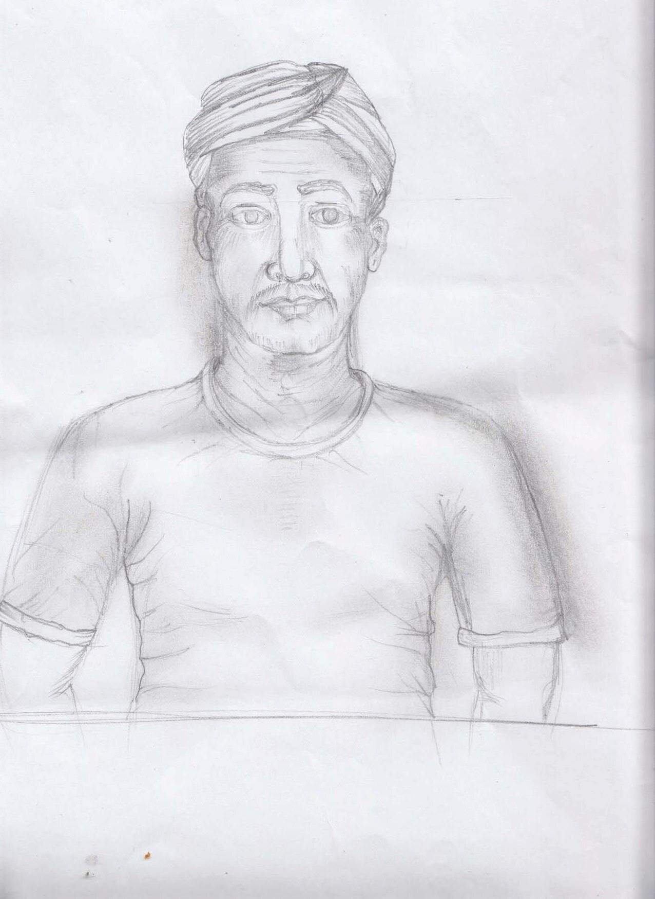
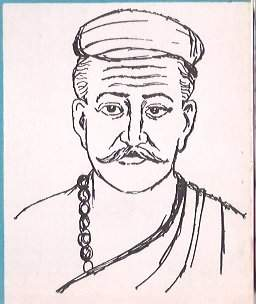

Gajendra Thakur
A PARALLEL HISTORY OF MITHILA & MAITHILI LITERATURE- PART 11
Dalit Literary Criticism: Telugu, Gujarati, and Odia Dalit Literature in Maithili Translation
Dalit Literary Criticism: Telugu, Gujarati, and Odia Dalit Literature in Maithili Translation

Dalit Literary Criticism: Telugu, Gujarati, and Odia Dalit Literature in Maithili Translation
A Critical Review
Part I: Telugu Dalit Poetry
Critical Review of Dalit Poetry: Two Poems by Boyi Bhimanna
Burning Skulls and My Ancestral Rights
Prefatory Note
Boyi Bhimanna (1920–2001) was a foundational pillar of Telugu Dalit literature. His poetry is not merely an expression of personal suffering; it is a document of collective historical consciousness. The two poems presented here -Gudiselu Kalipothunnaayi and Naa Varasatvpu Hakkulu -represent two distinct yet mutually related dimensions of his poetic universe: on one side, the labyrinthine nature of religious violence; on the other, a counter-reading of mythological history.
1. Poetic Form and Structure
Burning Skulls
The most noteworthy formal characteristic of this poem is its question-and-answer structure. The poem continuously poses questions to itself -"Whose skull is this?", "From where does it rise again and again?" -and then answers itself, but that answer in turn transforms into a new question. This structure evokes the Socratic method, wherein a chain of questions reveals truth -except that here, truth is located not in a philosophical conclusion, but in a bitter social reality.
Repetition -"it burns", "it rises" -creates a mantra-like effect. The use of anaphora (beginning lines with the same word) and epistrophe (repeating the same word at the end of a line) brings this poem close to the oral tradition, to the folk song -from which we may infer that Bhimanna is embedding Dalit oral-cultural tradition within written poetry.
My Ancestral Rights
In this poem the structure is more fragmented and narrative. The poem leaps from one mythological episode to another -Vasishtha, Arundhati, Matsyagandhi, Vyasa -as if a restless reader of history were turning pages. This fragmentation is not incidental; it is the symbol of Dalit historical consciousness, where memory is not whole but stolen and scattered.
The poem's final lines move like long, heavy breaths -"Only to cast away with pride! / Only to breathe with total dignity!" -this conclusion is a declaration of victory, but it contains not the exultation of triumph, but the experience of a grave, deep liberation.
2. Language and Metaphor
The Metaphor of the Skull
The central image of Burning Skulls -the skull that burns and is repeatedly reborn -is extraordinarily multi-layered. At one level it clearly signals caste violence: the history of collective violence upon Dalits, skulls being severed, being burned. At another level it is a sardonic use of the Hindu doctrine of rebirth -the poet asks: if the theory of reincarnation is true, why is this same Dalit burned again and again? Reincarnation was supposed to be the path to moksha -but for the Dalit it becomes an endless vicious circle.
This resonates with Frantz Fanon's analysis in The Wretched of the Earth (a philosophical treatise on the revolution against colonial exploitation), where he shows how colonial and caste systems entrap the victim in a cycle of violence in such a way that the victim begins to consider that cycle normal -until "the secret of these skulls becomes known to those who inhabit them."
The Metaphor of Digging a Graveyard
In My Ancestral Rights the image of digging a graveyard is extraordinarily complex. Ordinarily, digging a graveyard is associated with death, with ill omen. But here the poet inverts its meaning -digging a graveyard is an act of retrieval. What had been buried -the Dalit's Vedic identity, their historical rights -to dig it out and bring it forth becomes a revolutionary act.
Here one hears an echo of Walter Benjamin's "Theses on the Philosophy of History" (a philosophical essay that demands history be seen from the perspective of the victim, not the conqueror). Benjamin says that history is always written from the victor's viewpoint, and the revolutionary task is to revive "dangerous memory" -gefährliche Erinnerung. Bhimanna does exactly this: he excavates that "dangerous memory" which Brahmanical historiography had buried and kept buried.
3. The Counter-Mythological Reading
My Ancestral Rights stands within an important tradition of Dalit literature -the inverted reading of mythological narrative. This tradition was established by B.R. Ambedkar in Riddles in Hinduism and Who Were the Shudras? Bhimanna interrogates the entire Mahabharata-Ramayana-Vedic tradition by this method.
The poem's central argument is this: the great personalities of the Vedic-Aryan tradition were in fact of casteless or Dalit origin -Vasishtha, Matsyagandhi, Vyasa. But Brahmanical history "Aryanized" them, and kept their true descendants -the Dalits -excluded. This is an unveiling of a historical irony.
Here the perspective of Subaltern Studies (the scholarly tradition of bringing the history and voices of marginalized peoples to the center) is pertinent. Gayatri Chakravorty Spivak asks in Can the Subaltern Speak? whether the Dalit woman can be present in history in her own voice. Bhimanna's poem is an answer to this question: he makes the subaltern speak -giving Matsyagandhi, Amba, Ambalika -who in the Mahabharata were merely objects -a capacity for self-determination: "If she had slapped and knocked his teeth out..." -this counter-historical imagination (reimagining history through speculation about what would have happened if it were reversed) is the re-creation of the subaltern's agency.
4. The Dalit-Woman Dimension
In both these poems -especially in My Ancestral Rights -a Dalit-feminist intersectional perspective (analyzing the simultaneous oppression of caste and gender) is clearly visible. Arundhati, Matsyagandhi, Amba, Ambalika -these are all women upon whom caste-based and gender-based exploitation occurred simultaneously. The poem presents them not merely as victims, but as potential rebels.
Kimberlé Crenshaw's theory of intersectionality (in which she shows that caste, gender, and class oppressions do not occur separately but simultaneously) applies directly here. Bhimanna -a Dalit male poet -writes poetry from this multi-oppression perspective, which is evidence of the breadth of his poetic vision.
5. Dalit Aesthetics
Critics of Dalit literature -Sharankumar Limbale (Towards an Aesthetic of Dalit Literature), Omprakash Valmiki -have repeatedly emphasized that Dalit literature cannot be measured by the standards of Western poetics. In Dalit poetry:
Anger is an aesthetic category, not a flaw. Political directness is not artistic weakness but ethical necessity. Personal and collective experience are one -the "I" is always the representative of a social "we."
Both of Bhimanna's poems are outstanding examples of this aesthetics. The anger of Burning Skulls is not rhetoric (hollow emotion deployed merely for oratorical effect) -it is an authentic ethical emotion. The scholarship of My Ancestral Rights -mythological references, historical consciousness -is not a mere display of erudition, but a cultural project of self-respect.
6. The Challenge of Translation
The Maithili translation of these poems (itself made from an English translation) is a double translation -Telugu → English → Maithili. Some poetic loss is inevitable in this.
For instance: the word gudiselu (skull/hut) carries a double meaning in Telugu -a hut that is burned. The word khopadi (skull) in Maithili was able to preserve that ambiguity quite well.
But the emotional intensity of "Naa Varasatvpu Hakkulu" -where equal stress falls on both "naa" (mine) and "hakkulu" (rights) -is somewhat dissolved in the Maithili "hamar paitrik adhikaar" (my ancestral rights).
Even within the constraints of this double translation, the fundamental poetic power of both poems has come through in Maithili -because the force of Bhimanna's thought cannot be made subaltern by any linguistic medium.
Conclusion
These two poems of Boyi Bhimanna stand at the highest level of Dalit literature -where poetic craft and political philosophy become one. Burning Skulls presents the cyclical nature of religious violence in the form of a mystical question, while My Ancestral Rights declares, through a counter-reading of history, the restoration of Dalit identity.
Both poems together present a complete Dalit philosophy: to question, to remember, to reclaim, and finally to breathe free with pride. This is not merely poetry -it is a document of a civilizational struggle.
Part II: Dalit Women's Poetry -J. Subhadra's Four Poems
Grinding, Laanda, The Sari's Edge, Avva
Prefatory Note
J. Subhadra is a distinctive voice in Telugu Dalit women's poetry. While Bhimanna's poetry performs a counter-reading of Dalit identity from the historical-mythological dimension, Subhadra's poetry establishes the body, labor, and domestic objects -leather, the clay pot, the sari's edge -at the center of poetry. Her four poems together present a panorama of a complete Dalit woman's life: from field to home, from labor to motherhood, from hunger to dignity.
1. Poetic Form and Structure
Grinding
This poem's structure takes the form of a catalogue of labor. From morning to night, each task comes one after another -sweeping, smearing, fetching water, clearing dung -without any pause or conjunction. This list-form is not incidental; it represents the breathless continuity of the Dalit woman's life. Walt Whitman's Song of Myself also uses a catalogue of labor -but there the catalogue is a symbol of liberation; here it is of bondage.
The final question -"How will this bonded life end?" -ties the entire weight of the poem into a single thread. Not a rhetorical question -this is a genuine, unanswered question.
Laanda
This poem's structure is a process narrative -the complete process of rotting leather, cleaning it, softening it. This technical precision is unusual in poetry. The sap of the Indian laburnum, the seeds of the tamarind -these are recordings of indigenous knowledge that Subhadra is inscribing within poetry. In this sense the poem is also an ethnographic document.
At the poem's end -"For creaking shoes and making drums -/ he beats a sweet rhythm on that drum" -there is a bitter irony. The leather that the woman prepares in degraded circumstances, from that same leather her husband beats a "sweet rhythm" on a drum. Subhadra exposes here the asymmetric relationship between labor and art, pain and beauty.
The Sari's Edge
This is the longest and most complex of the four poems. Its structure is based on an extended metaphor -the sari's edge is the same object that repeatedly takes new forms: bed, umbrella, bag, cushion, protector, mother. This metamorphic sequence reflects the many-faceted nature of the Dalit woman's life -who is simultaneously laborer, mother, wife, beggar, and tenacious warrior.
The final lines -"This cloth is not a guard standing watch over my chest" -negate the very title. This is a performative contradiction: what was said in the title, the poem rejects. From this a dialectical tension is created -in what sense is the sari's edge not a guard? The poet leaves this question open.
Avva
This poem's structure is the most lyrical and elegiac of all. The repetition of the word "Avva" -which means "mother" in Telugu -assumes the form of an invocation, as if a goddess were being summoned in a ritual. But this is a goddess of domestic labor, not enthroned on a golden seat.
The poem's sequence of images is extraordinarily dense: the sun that has been lost in the sky's carpet, the grain in the empty granary, the beat of a torn drum-skin. These are all figures of absence and displacement.
2. The Central Figure: Object-Poetics
Subhadra's poetry's most significant characteristic is -making ordinary objects the center of poetry: Laanda (the vessel for rotting leather), the clay pot, the sari's edge, the mattock, the sickle.
In Western poetics the poem about an object (Dinggedicht) is an established tradition -Rainer Maria Rilke's Neue Gedichte is its outstanding example. But Rilke's objects are objects of beauty -Apollo's torso, the panther. Subhadra's objects are objects of labor -which are foul-smelling, filthy, and socially humiliated.
From this emerges a new poetics of Dalit object poetics: through the object, making the Dalit woman's labor, knowledge, and identity visible. What society does not wish to see -leather rotting, searching for grain-husks in mud -the poet places at the center of literature.
3. Body-Politics and Material Reality
In Laanda one line is extraordinary: "Even if my intestines come out through my mouth, / Even if I fall unconscious -because of the worms and the stench, / this fate of tanning leather must be endured!"
This visceral realism -the mention of internal organs, olfactory response, physical fainting -is a distinctive tendency of Dalit literature that Gopal Guru calls "radical embodiment." In upper-caste literature, the body is generally idealized or abstract. In Dalit literature the body is concrete, suffering, and laboring -with no apology in this.
In The Sari's Edge the body's presence takes a different form -sweat, tears, menstrual blood -these are all bodily fluids that the Brahmanical purity-pollution system considers "impure." Subhadra accepts all these naturally in her poetry -this is a negation of the purity myth.
Julia Kristeva's theory of abjection is pertinent here. According to Kristeva, society considers "abject" -disgusting, excluded -those elements that break the body's boundaries: blood, excrement, decay. Subhadra, by making these abjected elements the subject of her poetry, refuses social abjection itself.
4. Intersectionality: Caste, Gender, and Class
In all four poems, caste, gender, and class -all three are simultaneously present, and their mutual interaction never separates.
In Grinding: the compulsion to work in the landlord's house (class+caste) + "beaten with a stick" (caste violence) + the entire burden of this on the woman (gender).
In Avva: "she chars in the furnace of her father's rage" -domestic violence (gender) + "the landlords kept him away from the plough" (caste+class) -both in the same woman's life at once.
Kimberlé Crenshaw's theory of intersectionality comes to life literally here. The Dalit woman is neither merely a representative of Dalits nor merely of women -she is a third category whose experience is different from and more complex than either.
Sharmila Rege has presented the concept of a "Dalit feminist standpoint" in this context -the Dalit woman's perspective is an epistemological privilege, because she inhabits the deepest level of oppression. Subhadra's poetry is written from this standpoint.
5. Motherhood and Want: A Special Reading of Avva
Avva is an extraordinary counter-reading of motherhood-poetry. In Hindi-Sanskrit literature, the mother is generally a symbol of sacrifice, gentleness, and nurturance -Yashoda, Kaushalya. Subhadra's Avva is fundamentally different from these.
She is a mother who cannot sing a lullaby, because she is at work. She is a mother whose hands are rough and dirty, because she is always in the fields. She is a mother who cannot put her child to sleep in her lap, because she is the landlord's bonded laborer.
Here there is an echo of Adrienne Rich's Of Woman Born, where she analyzes motherhood at two levels -as institution (social obligation) and as experience. For Subhadra's Avva, both are simultaneously present -but the former is always subordinate to the latter. Survival comes before tenderness -this is the tragedy of the Dalit mother.
6. Folk Aesthetics and Indigenous Knowledge
In Laanda the specific use of Indian laburnum and tamarind, in The Sari's Edge the reference to "Maisamma Devi," in Avva the songs of transplanting, harvesting, and threshing -these are all the poetic archiving of Dalit folk tradition.
Ganesh Devy argues in After Amnesia that Indian literary criticism always kept the Sanskrit/Urdu/English canon at the center and considered the Dalit-tribal oral tradition "extra-literary." Subhadra's poetry refuses this canonical exclusion -she installs Dalit folk knowledge, oral tradition, regional botanical knowledge on the high ground of poetry.
7. The Sari's Edge and the Jayaprabha Episode
At the end of the poem there is an important footnote -a reference to Jayaprabha's Telugu feminist poem "Set Ablaze the Sari-End." Jayaprabha's poem considers the sari's edge a symbol of patriarchy and calls for its burning.
Subhadra clearly disagrees with this upper-caste feminist perspective. For her Avva, the sari's edge is neither a symbol of patriarchy nor an enemy of liberation. It is an instrument of livelihood -bed, protection, bag, mother. To burn it means burning the one thing she has.
This intra-feminist dialogue is of great importance. Audre Lorde says in Sister Outsider: "The master's tools will never dismantle the master's house" -but the question here is: which feminism, whose feminism? From the Dalit woman's perspective, upper-caste feminist symbolism sometimes becomes class-blind and caste-blind. Subhadra challenges this blindness -without aggression, but with firmness.
8. Language and the Context of Maithili Translation
These poems have made a journey of three levels -Telugu → English → Maithili. In this journey some important references have been preserved:
"Laanda" -the Telugu word was kept as-is, which was a sound decision. Its Maithili translation would have been difficult, and the power of the original technical-cultural word would have been lost.
"Avva" -"mai" (mother) was not used, "Avva" was used. This preserved the Telugu cultural specificity.
But "Kongu naa boche mida kaavalunde bonthapegwadu" (The Sari's Edge) -the visceral immediacy of the Telugu title has somewhat diminished in Maithili. In Telugu, both "boche" (chest/breast) and "kaavalunde" (keeping guard) -the bodily-political tension of both words has become somewhat more literal in the Maithili "chhaati par pahara da rahl kapada" (cloth keeping watch over the chest).
Conclusion
J. Subhadra's four poems together create an epic of Dalit women's life -fragmented, but complete. From labor to motherhood, from body to history, from a sari's edge to an entire civilizational struggle.
Her poetic achievement is this: she never complains -she bears witness. Simone Weil considered the distinction between justice and compassion important: complaint comes from the victim, testimony from the witness. Subhadra becomes the witness to her own life -and from this her poetry becomes not merely a personal cry of anguish but a historical document.
The final line -"she never reached as far as where my Avva had walked" -is the epitaph of the entire collection: language, history, and civilization -all together have failed to map the complete geography of the Dalit woman's life.
Part III: Dalit Women's Poetry -Comparative and Synthetic Study
9. Both Poets Together: Poetic Dialogue Between Bhimanna and Subhadra
Reading both sections of this review together -Bhimanna's poems and Subhadra's four -a dialectical dialogue emerges that reveals the complexities within Dalit literature.
Difference of Perspective
Bhimanna looks from above -history, mythology, philosophy, the long arc of civilization. His poetic camera is wide-angle. Subhadra looks from within -body, object, labor, home, mother. Her poetic camera is close-up.
Bhimanna's My Ancestral Rights excavates the history of Vyasa and Vasishtha -a macro-history. Subhadra's Avva depicts the labor of a single day of an unnamed mother -a micro-history. But both are two sides of the same truth: historical theft and daily exploitation -two faces of one coin.
In this sense both poets' collections together build a bridge between Carlo Ginzburg's microhistory and Marxist macrohistory -where the trivial details of individual life connect with the epic of social structure.
The Difference Between Questioning and Bearing Witness
Bhimanna questions -"How do these skulls rise again and again?", "How long will this vicious cycle continue?" His poetry is in the interrogative mode.
Subhadra bears witness -"when my husband with his own hands rubs lime and applies it to the leather", "I cannot remember ever having clung tightly to Avva's waist and hung from her." Her poetry is in the testimonial mode.
In Western literary theory, testimony is a special genre whose development occurred in Holocaust literature -Elie Wiesel, Primo Levi. But Shoshana Felman and Dori Laub show in Testimony: Crises of Witnessing that testimony is not merely a factual report -it is an ethical act in which the victim transforms their experience into evidence. Each of Subhadra's poems is testimony in this sense.
10. Nature-Images in Dalit Poetry: A Counter-Reading
In upper-caste Hindi-Sanskrit poetry, nature is generally the realm of aesthetic experience -in Kalidasa's Meghadutam the background to the yaksha's longing, in Chhayavaad the projection of the soul. In this tradition nature is romantic.
Subhadra's nature-images are fundamentally different:
In Avva -"the sun rising before the cock crows scorches Avva's eyes" -the sun's rising here is not poetic beauty, but a signal of labor's beginning. The sun does not wake the mother -it burns her.
In The Sari's Edge -"in the rains the sari's edge becomes an umbrella of Indian laburnum flowers" -the Indian laburnum would be the subject of beauty for an upper-caste poet; here it is practical shelter.
In Grinding -dust, cracks in the stone, mud -this is the landscape in which the Dalit woman works, which the Chhayavaad poets never saw.
In this sense Subhadra demolishes pastoral ideology -which considers rural nature a place of peace. Raymond Williams showed in The Country and the City that pastoral is a class conspiracy that renders labor invisible. Subhadra's poetry makes that invisible labor visible.
11. Silence and Absence in Poetry
What is left unsaid in both poets' works is no less important than what is said.
In Bhimanna's Burning Skulls the murderer is never named -"religion" is an abstract force. In this strategic anonymity there is a literary diplomacy: when the murderer is a system, not an individual, naming it is unnecessary -because naming does not change the system.
In Subhadra's Avva the mother's voice is absent. She sings -but we do not hear her song; she speaks -but we do not know her words. This silence is a symbol of the historical absence of the Dalit woman -she who never became a subject in history, always remained an object.
Jacques Derrida says in his concept of trace that meaning is found not only in presence but also in the mark of absence. Subhadra's poem's silence -Avva's unheard lullaby, her unspoken words -is this trace, where the Dalit woman's history is inscribed.
12. Anger, Grief, and Dignity: Three Emotional Registers
In these nine poems -Bhimanna's five and Subhadra's four -there are three primary emotional registers:
Anger -in Bhimanna's Burning Skulls and My Ancestral Rights. This anger is philosophical anger -not personal, but cultural.
Grief -in Subhadra's Avva and Grinding. This grief is collective mourning -for the lost lives of an entire generation.
Dignity -in the final lines of The Sari's Edge, in the final proclamation of My Ancestral Rights. This dignity is earned -based not on charity but on rights.
Aristotle speaks in poetry of catharsis -emotional purification. But in Dalit poetry catharsis is of a different nature. It is not for the emotional purification of the audience -it is a call for the moral purification of society. Ambedkar used to say: "I measure the progress of a community by the degree of progress which women have achieved." By this measure these poems measure society -and find society wanting.
13. The Maithili Literary Tradition and the Relevance of Dalit Poetry
The translation of these Telugu Dalit poems into Maithili -through the medium of Videha magazine -is a literary-cultural project whose importance goes beyond the technical achievement of translation.
The Dalit voice in Maithili literature has historically remained marginal. The Sahitya Akademi-recognized Maithili canon has generally remained Brahmin-Kayastha-centered -from Vidyapati through the modern era. It was only after the intervention of the parallel literature movement, the real vidyapati has come to fore (Annexure-2, A Critical Appraisal of Vidyapati's Bidesiya; Annexure-3 [Vidyapati, the Primal Poet of Maithili (Pre-Jyotirishvara); ANNEXURE: 4 A Critical Theory for Maithili Original and Translated Dalit Prose-Poetry Literature] In this context the Maithili translation of Telugu Dalit-woman poetry is a canonical intervention.
This translation says to Maithili readers: the reality of the Dalit woman is not merely a subject for Telugu -it is equally present in the soil of Mithila. Geographic specificity (Telugu context) and social universality (Dalit-woman oppression) -accepting both simultaneously is the most important literary-political decision of this translation project.
The vision that the Parallel Literature Movement represents through Videha -beyond-canon, folk-tradition-enriched, Dalit-woman-voice-inclusive -these poems are the living proof of that vision.
14. Final Synthesis: A New Poetics
Bhimanna and Subhadra's poems together establish certain foundational principles of Dalit poetics that are fundamentally different from Western and upper-caste Indian poetics:
First -Democracy of Poetic Subject: tanning leather, searching for grain in mud, an old sari's edge -these are as worthy of poetry as the yaksha's longing in Meghadutam or Shraddha in Kamayani.
Second -The Moral Validity of Emotion: anger, hatred, grief -these are considered incomplete in Rasa theory (Shanta Rasa being supreme). In Dalit poetry anger is morally necessary.
Third -The Indivisibility of Politics and Aesthetics: "art for art's sake" is meaningless in Dalit poetry. The poem is a social act -testimony, accusation, and call to liberation simultaneously.
Fourth -Respect for Local Knowledge: Indian laburnum, tamarind, Maisamma Devi, Laanda -these are all Dalit epistemology that precedes and is sometimes superior to book-knowledge.
Fifth -The Body as Political Terrain: the Dalit woman's body -which burns, tires, rots, sheds tears -upon this body all three systems of caste, class, and gender work simultaneously. Making this body visible in poetry is a political act.
Closing
Audre Lorde writes in The Transformation of Silence into Language and Action that silence will not protect you -"your silence will not protect you." Boyi Bhimanna and J. Subhadra -both -break this silence. Bhimanna breaks the silence of history, Subhadra the silence of daily life.
From one language to another -from Telugu to Maithili -these voices make a journey. Translation here is not merely linguistic transfer -it is an act of solidarity: one Dalit community hears another Dalit community's voice, recognizes it, and keeps it alive in its own language.
In this sense these poems -Bhimanna's and Subhadra's -are not merely a translation in Maithili literature, but the planting of a new poetic tradition's seed.
Part IV: Challpalli Swarooparani's Two Poems
Mankenapuvvu and Hands Turned to Earth
Prefatory Note
Challpalli Swarooparani is a distinctive voice in Telugu Dalit-women's poetry that gives a new dimension to the poetic tradition of Bhimanna and Subhadra. While Bhimanna works on the historical-mythological level and Subhadra on the level of object-labor-motherhood, Swarooparani's poetry occupies a third position -she places the transformation of personal consciousness at the center. Her poetry begins with "I" and ends with "I" -but this "I" is different at both ends of the journey.
1. Poetic Form and Structure
Mankenapuvvu
This poem's structure is a three-tiered narrative. In the first tier, a central metaphor is established at the poem's beginning -a blue bird caught in a thorny bush. In the second and longest tier there is a series of anaphoric beginnings -"when... then" -repeated six times. In the third tier, the poem suddenly turns -"But when my patience runs out" -and transforms into an explosive proclamation.
This three-tiered structure is a dialectical counterpart of thesis-antithesis-synthesis. But it differs from Hegelian dialectics in that synthesis here is not compromise -it is rebellion.
In the six repetitions of "when... then" it is worth noting that each "then" expresses a desire for self-negation -to sink like a seed, to close one's nose, to contract into a fist, to pour in lead, to bury one's head. These are five specific images of self-negation that together create an accumulated pain. But the very intensity of this accumulated pain makes the final explosion credible.
Hands Turned to Earth
This poem's structure is chronological -from morning to evening, from youth to decay. But this chronology is not simply linear -it is spiral (winding up and down). The same day repeats again and again, the same year again and again, the same life again and again. From this recurrent spiraling emerges a deep nihilism -no change, no end.
Comparing with Subhadra's Avva: both are poems about a mother, both describe labor -but in Avva there is a daughter's gaze, while in Hands Turned to Earth there is a third-person witness's gaze. This difference is significant: Swarooparani here regards the mother not with love but with judicial eyes.
2. Central Figures: Bird, Flower, and Earth
The Blue Bird and the Silk-Cotton Flower
Mankenapuvvu's two central images -the blue bird caught in a thorny bush and the red silk-cotton flower blooming at the end -present a chromatic journey (emotional journey through color). Blue (the bird's color) -sadness, bondage, unfulfilled longing for sky. Red (the silk-cotton flower's color) -rebellion, blood, life-force.
The silk-cotton flower (Bombax ceiba) carries a specific meaning in Telugu-Andhra culture -it blooms on a thorny tree, alone, blazing red in winter when there are no leaves. It is the cultural symbol of blooming in adversity. Swarooparani transforms this indigenous symbolism into a metaphor of Dalit-women's consciousness.
In Western poetry the metaphor of the phoenix (the mythological bird that rises reborn from ash) is consonant with this -but the phoenix is consumed in ash and then rises. Swarooparani's protagonist is not consumed -she blooms right there among the thorns. This is an important difference: the Dalit woman's liberation does not come through destruction -it comes through transformation.
Hands Turned to Earth
The title-metaphor of Hands Turned to Earth is multi-dimensional. "Hands turned to earth" -hands sunk into earth by labor -is a literal description. But in it both becoming earth (the devaluation of humanity) and being made of earth (fundamental elemental identity) are inherent.
In Grinding, Subhadra searches for grain-husks in mud. In Hands Turned to Earth, Swarooparani watches woman herself dissolving into mud. This progressive intensification is important -when labor becomes so intense that laborer and earth become one, this is the extreme state of objectification (treating humans as objects).
Marx in the Economic and Philosophic Manuscripts describes alienated labor (in which the worker is cut off from their work, their humanity, and nature). Swarooparani's "hands turned to earth" is the physical symbol of this alienation.
3. Analysis of the "When... Then" Series
Mankenapuvvu's six-repetition "when... then" series presents a taxonomy of oppression (list of different levels of oppression). Each "when" has a different level of oppression:
First -Control of domestic aesthetics: not applying kajal or a bindi. This is the most intimate level -control over one's own body.
Second -Spatial control: "the foul-smelling village" -the physical encirclement of the Dalit settlement.
Third -Educational exclusion: caste-based rejection at the threshold of higher education.
Fourth -Stigmatization based on reservations: "coming from quota" -making reservations a weapon of humiliation.
Fifth -Sexual objectification (treating woman merely as object of desire): not marriageable, merely an object of lust.
These five levels together demonstrate the encirclement from all directions of the Dalit woman's life -home, village, education, work, marriage -surrounded from every side. The realism of this encirclement resonates with Patricia Hill Collins's theory of the matrix of domination (in which she shows that oppression is not a single force but a cluster of mutually interwoven systems).
Particularly important is the mention of stigmatization through reservations -which is absent in Bhimanna or Subhadra's poetry. Swarooparani here encompasses contemporary Dalit experience: even having gained access to education and government employment, the Dalit woman continues to be stigmatized as a "quota beneficiary." This is a new form of twenty-first century oppression that maintains the old social hierarchy in a new language.
4. Body-Politics: Two Different Paths
Both poems contain the presence of the body -but on two different paths.
In Mankenapuvvu, the body is the site of capacity and rebellion. "I will bloom", "I will flow" -this body, caught in thorns until the end, ultimately gains self-determination (the right to decide for oneself).
In Hands Turned to Earth, the body is the site of decay and consumption. "She who shone like a marigold, / fades like a dried leaf on a stem" -this body is destroyed by the double consumption of labor and patriarchy.
In these two paths a generational gap can be seen. The "I" of Mankenapuvvu is possibly educated, aware, rebellious -the Dalit woman of the new generation. The "she" of Hands Turned to Earth is possibly uneducated, unaware, exhausted -the Dalit woman of the old generation. Both are products of the same system -but different at the level of consciousness.
Frantz Fanon in The Wretched of the Earth shows two levels of colonized consciousness: those who have accepted the system from within, and those who have begun to reject it. Swarooparani presents both these consciousnesses together -in two poems -in one collection.
5. The Husband-Figure: A Comparison in Two Poems
The husband is present in both poems -but in different forms.
In Mankenapuvvu -"male control at home slaps her on one cheek" -the husband is a nameless force, an equal partner in the caste system. No name, no face -merely force.
In Hands Turned to Earth -"the husband is ready to drink up her sweat like liquor" and "bearing the husband's hand-and-foot beatings in the evening" -the husband is a concrete oppressor, present in daily life.
This contrast is significant from a literary-political perspective. In the first poem, patriarchy is structural (in the form of a system); in the second it is interpersonal (between two individuals). Both are true -but both together construct the complete picture of patriarchy: it is simultaneously system and individual.
bell hooks argues in Feminist Theory: From Margin to Center that the feminist movement sometimes sees patriarchy only structurally and gives less importance to individual male violence -or the reverse. Swarooparani's two poems together reject this false dichotomy.
6. The Final Image: Two Contrasting Endings
Mankenapuvvu ends on a triumphant conclusion:
"I will bloom like Mankenapuvvu! / I will flow like a river, / crossing the forest of torment."
This conclusion gives the reader emotional catharsis -the experience of victory after suffering. But this catharsis is not cheap -it comes after the entire poem's accumulated suffering, and for that reason its weight is extraordinary.
Hands Turned to Earth ends on a tragic conclusion:
"On the stony desert road of life -/ carrying the cross of hunger."
The use of the word "cross" here is of utmost importance. This is borrowed Christian symbolism -Jesus's carrying of the cross. But here it is used in a secular sense: the Dalit woman carries the cross without any assurance of liberation, without any resurrection. This is a crucifixion without resurrection -a more brutal image than Christian symbolism.
Albert Camus in The Myth of Sisyphus describes the philosophy of absurdism -Sisyphus pushes the rock up again and again, and it falls down again and again. Camus says: "We must imagine Sisyphus happy." But for Swarooparani's protagonist this existentialist solution is unavailable -because Camus's Sisyphus is an abstract philosophical figure, while Swarooparani's protagonist is historical, material, embodied.
7. Comparison with Subhadra: Similarity and Difference
Both poets make Dalit women's life the subject of poetry -but there are several important differences in their poetic vision:
Pace: Subhadra's poetry is slow, meditative -looking at each object, each moment with complete attention. Swarooparani's poetry is rapid, passionate -as if a dam were breaking.
Perspective: Subhadra is an inner witness -she is herself within that life. Swarooparani in Mankenapuvvu is an inner witness, while in Hands Turned to Earth she is a compassionate outer witness -she sees another woman's life.
Resolution: Subhadra's The Sari's Edge was resolution-less, open-ended. Swarooparani's Mankenapuvvu offers a clear resolution -rebellion and blooming. In this sense Swarooparani is more manifesto-like -her poetry contains the element of a political manifesto.
8. Linguistic Features
In Mankenapuvvu there is a notable linguistic characteristic -a relative absence of sensory specificity. The poem works on the emotional and ideational level, less on the concrete sensory detail. This differs from Subhadra's poetry where Indian laburnum sap, tamarind seeds, the clay pot's cushion -all are concrete and sensory.
But in Hands Turned to Earth sensory richness is present -"mud up to the knees", "terrible dancing of the gut in the stomach", "the music of brahmin vessels." From this one understands that both types of language are available in Swarooparani's poetic repertoire -she chooses according to context.
"The music of brahmin vessels" -calling the sound of scrubbing vessels "music" -is a bitter irony. Upper-class aesthetics that finds music in violin-sitar; for the Dalit woman the first "music" of morning is the clanking of bronze vessels. This inversion of aesthetic values is evidence of Swarooparani's poetic intelligence.
9. The Three Poets: A Comprehensive Vision
Coming now to the third section of this review -seeing Bhimanna, Subhadra, and Swarooparani together -a triangular structure of Telugu Dalit poetry emerges:
Bhimanna -the poet of history and philosophy: at the broadest level he questions the historical and mythological foundations of the caste system.
Subhadra -the poet of labor and objects: at the microscopic level she makes visible the concrete reality of daily life -each object, each act of labor.
Swarooparani -the poet of consciousness and transformation: at the intermediary level -between the historical and the daily -she captures personal consciousness, the inner experience of oppression, and the transformation of that consciousness.
All three together cover the full Dalit-woman experience -from outside to inside, from history to present, from suffering to rebellion.
Conclusion
Challpalli Swarooparani's two poems -Mankenapuvvu and Hands Turned to Earth -are the finest expression of the dialectic of hope and despair in Dalit women's poetry. Mankenapuvvu says: I will bloom -despite the thorns. Hands Turned to Earth says: without structural change, this blooming is not possible.
Both poems together create a complete political message: individual rebellion is possible and necessary -but until structural change occurs, the protagonist of Hands Turned to Earth will be born again and again and will die again and again carrying her cross.
This double truth -the possibility of individual liberation and the necessity of collective liberation -is Swarooparani's most important poetic achievement.
Part V: Darishee Shashinirrrmala's Three Poems
It is I Who Lost Everything, I am Wearing Menstrual Cloth, A Dalit Woman
Prefatory Note
Darishee Shashinirmala is a most aggressive and confrontational voice in Telugu Dalit women's poetry. Moving beyond Bhimanna's historical-philosophical analysis, Subhadra's labor-object-poetry, and Swarooparani's transformation of personal consciousness, Shashinirmala occupies an entirely different poetic terrain. She fights in three directions at once: against upper-caste men, against Dalit men, and against upper-caste women. In this three-fronted struggle her poetry occupies a political terrain that is extraordinary in the Telugu Dalit poetic tradition.
1. Poetic Form and Structure
It is I Who Lost Everything
This poem's structure takes the form of a dialogue -but an extraordinary dialogue in which the other side never responds. "You" -an upper-caste woman -is the entire target of the poem. The poet speaks to her, but does not wait for her response -because that response is impossible.
This one-sided dialogue is a distinctive technique in poetics. In Shakespeare's plays the soliloquy (speaking alone) reveals inner conflict -this differs from it. Here it is not a soliloquy but an unheard dialogue. The poet speaks -the other side does not listen. In this structural deafness the reality of upper-caste women's feminism is revealed.
The final five lines come in the form of questions -"Will you step down one step?", "Will we walk on the same path?" -these are not rhetorical questions but genuine tests. The poet compels the upper-caste woman to make a concrete choice.
I am Wearing Menstrual Cloth
This poem's structure is the most complex and multi-layered. It is simultaneously a personal lament, a political manifesto, and a historical document. The structure works on three levels:
First level -personal body-experience: menstruation, sweat, humiliation at the well. Second level -social-political analysis: media, police, court, caste violence. Third level -historical evidence: Alisamma, Muthavva, Mahadevamma -the names of real victims.
These three levels become one in the poem -personal, social, and historical in the same breath. In this three-level unity lies the core of Shashinirmala's poetic power.
A Dalit Woman
This poem's structure is a progressively expanding list of accusations (a series of charges that grows larger and larger with each line). Each line adds a new humiliation, a new exploitation -until the list becomes so heavy that the reader is crushed. But at the end an abrupt reversal occurs -"Now I am opening my mouth and eyes" -which transforms the entire weight of the poem into rebellion.
2. The Politics of the Title
In all three poems the title is itself a political statement.
"It is I Who Lost Everything" -here there is a sardonic self-accusation (blaming oneself, but in irony). The poet says: yes, I lost -but who is responsible for this loss? The title does not answer -it asks the reader.
"I am Wearing Menstrual Cloth" -the word "menstrual" is considered extremely stigmatized in the Hindu-Brahmanical purity-pollution system. To make it a title is a deliberate provocation (making the reader uncomfortable). To drape this cloth -that is, to cover oneself with it -over the "false logic" and "cleverness" of the society that hates this word -is a poetic retaliation.
"A Dalit Woman" -this is the simplest and therefore most powerful title. "A" -indefinite singular -says this is not the story of one individual, it is the story of all Dalit women. This title is simultaneously personal and universal.
3. The Critique of Upper-Caste Women's Feminism: It is I Who Lost Everything
This poem displays a rare poetic courage in Telugu -indeed, in all Indian -Dalit literature: it directly addresses the upper-caste woman and questions her feminist claim.
The poem's central episode is this: the upper-caste woman (possibly the poet's employer or neighbor) says to her husband "You fool!" -meaning she appears to speak in favor of the Dalit woman. But that same feminist upper-caste woman does not stop her daughter's aggression, considers the Dalit woman "subordinate," and ultimately only "advocates" for her when the Dalit woman herself "makes a fist."
This is an exposure of feminism's double standard (the feminism of the upper-caste woman that speaks in favor of the Dalit woman but in practice maintains the caste hierarchy). Audre Lorde says in Sister Outsider (in which she criticizes white feminism's caste-blindness) that the claim of women's solidarity becomes hollow when class and caste difference is not acknowledged. Shashinirmala's poem brings this theory into the concrete Indian-caste reality.
Uma Chakravarti argues in Gendering Caste (in which she shows that caste and gender are two wings of the same system) that in India the upper-caste woman is simultaneously a victim of patriarchy (on the basis of gender) and a beneficiary of the caste system (on the basis of caste). Shashinirmala's poem presents this contradiction -without any theoretical overlay, in naked reality.
"As long as it's only man or only woman, then there's no problem" -this line is the philosophical essence of the entire poem. When identity remains only single-dimensional (merely gender or merely caste), compromise is possible. When the Dalit woman firmly assumes her multi-dimensional identity (caste+gender+class) -then the conflict over boundary-lines begins.
4. Body, Purity, and Resistance: I am Wearing Menstrual Cloth
The central metaphor of this poem -the menstrual cloth -performs multi-layered poetic work.
Negating the Purity Myth
In the Hindu varnashrama system the menstruating woman is considered impure. "Wearing" this cloth -that is, covering oneself with it -is an inversion: to drape over the "lies" of the society that considers the woman impure through this cloth, this "impure" cloth -is to make impurity into a weapon.
Julia Kristeva's abjection theory (in which she shows that society considers abject -disgusting, excluded -those things that break the body's boundaries -blood, discharge, excrement -and through this disgust maintains social hierarchy) is relevant here again. Shashinirmala transforms this abjected element into a political weapon.
Historical Evidence
At the poem's end, the mention of Alisamma, Muthavva, and Mahadevamma -who were stripped naked and paraded by upper-caste men -is a historical anchor (grounding the poem in reality through the concrete events of history). From this the poem does not remain merely a personal lyrical outpouring -it becomes a vessel of collective memory.
Walter Benjamin's concept of "dangerous memory" is worthy of recollection here again -but here this memory is even more dangerous, because it is not abstract historical fact but the names of real women.
Institutional Failure
"Neither the police's stick, / nor the court's gaze -/ they have nothing to do with my flayed skin" -these lines clearly expose the caste-partisanship of the state apparatus. Police and court -considered symbols of impartial justice -are here indifferent or hostile institutions for the Dalit woman.
Michel Foucault's power-knowledge relation (in which he shows that the justice system, the medical system, and other such institutions are not actually neutral but instruments of power-relations) comes to life here. Shashinirmala presents this philosophical insight in the language of poetry -without any theoretical terminology.
5. The Three-Fronted Oppression: A Dalit Woman
A Dalit Woman is one of the most politically complex poems in Telugu Dalit poetry, because it simultaneously fights against three oppressors.
The poem's first section (from the beginning to "draining my body's strength drop by drop") -description of upper-caste men's oppression.
The poem's second section (from "Why? / My own Dalit people...") -mention of Dalit men's oppression -"making me a rope for hanging their clothes on", "to use as post and nail for their skulls."
The poem's third section (from "Why? / My own women-folk...") -upper-caste women's oppression -"making me the decorative border of their high-caste sari."
This acknowledgment of three-fronted oppression is an extraordinarily courageous act in Dalit women's poetry. Acknowledging the oppression of Dalit men -this has been a taboo subject in the politics of Dalit solidarity. Shashinirmala breaks this taboo.
Babasaheb Ambedkar used to say that the condition of the Dalit woman was the most pitiable among the Dalits -she is excluded from three sides based on caste from society, based on gender from the Dalit community, and based on class from the upper-caste woman. Shashinirmala's poem gives poetic evidence of Ambedkar's insight.
Sharmila Rege's concept of the "Dalit feminist standpoint" (in which she argues that the Dalit woman's perspective is an epistemological privilege, because she lives at the deepest level of oppression) comes to life in poetry here -"A Dalit Woman" speaks from that place where all three oppression-systems converge.
6. Analysis of the Figures: Body-Politics
The bodily figures in all three poems are extraordinarily intense and varied.
In It is I Who Lost Everything -"they scratched and clawed and turned me into a hen" -this is a figure of animalization (turning a human into an animal). "Hen" -in the form of that animal which is plucked without resistance.
In I am Wearing Menstrual Cloth -"my mouth, / which keeps sweating, / knows what it means to live invisibly" -the mouth is here the site of both expression and suppression. Sweating = working = becoming visible. But society keeps the Dalit woman invisible.
In A Dalit Woman -"urinates in my joined hands" -this is the most raw, the most humiliated image. Hands joined in prayer -which are the symbol of reverence -urinating in them: this is the supreme humiliation of the sacred. Shashinirmala exercises no poetic restraint in this image -because reality itself is restraint-less.
Frantz Fanon's concept of the colonized body (in which he shows that colonialism first attacks the body -by humiliating, by controlling it -breaking the soul) applies simultaneously to all three poems here.
7. Language and Style: The Poetics of Aggression
Shashinirmala's language is more aggressive, more direct, and more confrontational than all previous poets. This aggressiveness has a literary-political significance.
Subhadra's language is meditative testimony -she sees and shows. Swarooparani's language is passionate proclamation -she speaks having broken open. Shashinirmala's language is direct accusation -she speaks naming, pointing a finger, looking eye to eye.
"They put a nose-ring in me and play with me" -the nose-ring is for animals, not humans. In this figure the politics of animalization (the social process of transforming the Dalit woman from human to animal) is stated directly.
"They milk me like a buffalo" -to show labor-exploitation in the figure of milking an animal -in this Marx's extraction of surplus value (the owner taking the value produced by the worker's labor) and caste exploitation are both contained in the same image.
8. Comparison with Previous Poets: A Comprehensive Poetic Genealogy
All four poets studied in this review series -Bhimanna, Subhadra, Swarooparani, and Shashinirmala -together create a complete poetic genealogy of Telugu Dalit poetry:
Bhimanna -history and the counter-reading of mythology; macro-vision; the restoration of Dalit identity.
Subhadra -labor, object, and motherhood; micro-vision; poetic archiving of daily life.
Swarooparani -transformation of personal consciousness; meso-vision (an intermediary vision between the personal and social); the dialectic of hope and despair.
Shashinirmala -three-fronted struggle; confrontational vision; exposing the contradictions within feminism.
These four together complete a dialectical journey -beginning with history (Bhimanna), descending into daily life (Subhadra), awakening personal consciousness (Swarooparani), and finally confronting from all sides (Shashinirmala).
Conclusion
Darishee Shashinirmala's three poems take Dalit women's poetry onto a new political terrain. She says what is difficult to say -the oppression of Dalit men, the hypocrisy of upper-caste feminism, the caste-partisanship of the state apparatus -without any restraint, without any diplomacy.
In her poetry beauty lies in anger, craft lies in aggressiveness, philosophy lies in concrete bodily reality. This is the culmination of a tradition in Dalit women's poetics that draws its power from Sharankumar Limbale, Omprakash Valmiki, and the tradition of Ambedkar's thought.
The final line -"let's see what wonders they can show us" -is a challenge: the Dalit woman is no longer a spectator, she is a questioner. This question has been asked of society, of feminism, of the Dalit movement -of everyone. And answering this question -that is not the work of literature, but of history.
Part VI: M. Gauri's Poem -Henna-Stained Hands
Prefatory Note
M. Gauri is an entirely distinctive voice in the Telugu Dalit women's poetic tradition. While Shashinirmala writes a poetry of three-fronted struggle, Subhadra creates labor-object-poetry, and Bhimanna performs mythological counter-readings -Gauri adopts a strategy different from all of these: she directly addresses Krishna by inverting mythological narrative -and this dialogue becomes the poetic self-declaration of a Dalit cobbler woman.
In this single poem, the poetic complexity, counter-mythological reading, craft-skill, and political courage assembled are such that it places itself among the greatest works of Telugu Dalit poetry.
1. Poetic Form and Structure
Direct Address Structure
This poem is composed in the second-person address -and that "you" is none other than Sri Krishna himself. This is an extraordinarily courageous poetic decision. In the Indian poetic tradition addressing Krishna is a long-standing tradition -Mirabai, Surdas, Jayadeva -but in all of those the speaker is a devotee, the relation is that of Krishna-superior and speaker-humble.
Gauri inverts this hierarchy. She addresses Krishna -but not as a devotee, but as a challenger. "Can you see it without fainting?", "Can you kiss my blood-stained hands?" -these are not devotion's questions, but questions of examination.
Three-Tier Poetic Arc
The poem is divided into three distinct sections:
First section -from "My lane is made of flesh and blood" to "the game of piercing a sturdy bull straight through." Here the world of labor -the Dalit cobbler woman's daily work -is established.
Second section -from "You, O brave Krishna!" to "behind the curtain of skin-leather." Here the counter-mythological dialogue -questioning each of Krishna's three forms (destroyer of maya, lover of the gopis, player of the flute) -takes place.
Third section -from "My lane is no longer fit for pet puppies" to the end. Here the Dalit cobbler woman's self-declaration -the reclamation of her own labor, her own body, her own dignity -occurs.
This three-arc structure is a dialectical structure of thesis-antithesis-synthesis -but here synthesis is not a middle path, but a rebellious self-establishment.
2. The Counter-Mythological Reading: Questioning Krishna's Three Forms
In this single poem Gauri addresses three mythological forms of Krishna in sequence -and against all three she raises the Dalit woman's reality.
First Form: Krishna the Destroyer of Maya
"You, O brave Krishna! / who killed the demon mother by drinking her milk" -this is a reference to the Putana episode. In the Purana, Krishna kills Putana, who gives poison to suckle -this is a symbol of divine heroism.
Gauri challenges this "heroism": "I will show you two pieces of flesh and a vessel of blood. / Can you see it without fainting?" -the work the cobbler woman does daily -dealing with flesh and blood -is more real and more courageous than Krishna's "heroism." This comparison of mythological heroism and the Dalit daily-labor is extremely bitter and extremely true.
Second Form: Krishna the Gopi-Lover
"You, who snatched the clothes of the gopis" -this is a reference to the cloth-theft episode which in the devotional tradition is considered divine play (lila).
Gauri reads this "divine play" from the perspective of sexual exploitation -and then challenges: "Can you steal my heart, / which I have kept safe -/ behind the curtain of skin-leather?" The heart is kept safe "behind the curtain of skin-leather" -this is an extraordinarily complex figure. Skin-leather = the cobbler woman's professional identity = which society considers "impure." That very "impure" identity becomes a protective shield -protecting from Krishna's love-conspiracy.
Third Form: Krishna the Flute-Player
"You, who sent love-messages through the flute, / can you read the love-message that I have written on the threshold with my gentle fingers?" -Krishna's flute is the symbol of divine love in devotional poetry. But here the cobbler woman's love-message written on the threshold is more concrete, more real, more human.
"Threshold" -door-step -is a symbol of boundary. The Dalit woman writes on the threshold -neither inside (the upper-caste home) nor outside. The love written on the threshold is marginal love (the experience of the margin).
The tradition of counter-mythological reading from Bhimanna (in which he re-read the personalities of the Mahabharata from the Dalit perspective) is here presented by Gauri in a more dramatic manner -as a poetic dialogue.
3. The Multi-Level Meaning of the Title
"Henna-Stained Hands" -this title is extraordinarily ambiguous (double-meaning).
First meaning -in Indian cultural tradition henna is a symbol of wedding celebration -adornment, auspiciousness, love. "Henna-stained hands" means festive hands.
Second meaning -within the poem, "henna" is actually blood. "Can you kiss my blood-stained hands, / without henna?" -here blood = henna. The blood on the cobbler woman's hands is the henna of labor -not of marriage.
This inverted symbol (inverting an auspicious symbol into a symbol of labor-reality) is an outstanding example of Dalit aesthetics. In upper-caste culture henna = beauty and celebration. In the cobbler Dalit woman's life henna = blood and labor. Gauri brings both meanings together in a single word.
4. The Leather Figure: Reclaiming Dalit Identity
The most powerful section of the poem is the final section -where leather (which society considers "impure") becomes the central reclamation-figure of the poem:
"When my leather is washed with Indian laburnum, / erasing the marks of your fingers -/ it becomes a drum, / resonating with pure music."
In these lines a three-level transformation occurs:
First -Krishna's finger-marks (those who snatched the gopis' clothes, who played the flute) are inscribed on the leather -that is, the stamp of upper-caste cultural claims is on the Dalit body.
Second -after washing with Indian laburnum (which Subhadra also used in Laanda), these marks are erased -that is, indigenous knowledge-tradition erases upper-caste cultural claims.
Third -the washed leather becomes a drum that resonates with pure music. This is of great importance: the leather that society considers "impure," from that same leather the drum produces "pure music."
This is the complete negation of the purity-impurity myth -not through argument, but through figure. Julia Kristeva's abjection theory finds a poetic answer here: Gauri transforms the "disgusting" into the "beautiful," the "impure" into "pure music."
5. The Play-Figure and Heroism
The poem begins with a poetic invitation -"Won't you come and play with me?" -which seems like an innocent children's invitation to play. But it immediately becomes clear that this play is about actually piercing a sturdy bull.
"Not the cowardly play of the ox in the procession, / I will show you a game of real heroism" -here there is a hierarchical comparison. Those who parade a castrated bull in a religious procession -that is "cowardly play." The cobbler Dalit woman's work -piercing a sturdy bull -is real heroism.
Jallikattu (bull-wrestling) in Indian folk tradition is a game of displaying heroism. Gauri, by making this folk tradition a figure of Dalit-woman labor, challenges the upper-caste cultural definition of heroism: real heroism is not in the religious procession, but in daily labor.
6. "Without Bent Spine": Poetic Declaration of Dalit Dignity
"Come, / if you can come, / I will teach you to pick up bones -/ I will show you a spine that has not bent."
This line is the philosophical-political essence of the entire poem.
"Picking up bones" -the cobbler woman's professional work -here assumes the form of knowledge transfer. She wants to teach Krishna. Teacher the Dalit woman, student Krishna -this is the complete inversion of the hierarchy.
"Spine that has not bent" -here there is a double meaning. Literal meaning: an animal's vertebral column that is straight, that has not bent. Figurative meaning: the Dalit woman's self-respect that has not bent.
Babasaheb Ambedkar used to say: "It is more important that a life be great than that it be long." Gauri's Dalit woman is not long-lived -she is indomitable.
7. "Not Sin" -Negating Religious Morality
"It is not a sin of the water turned to earth, / It is not a sin of the 'criminal' skin."
"Criminal skin" -here the quotation marks are important. The society that calls skin "criminal" -that is the society's false morality. Gauri directly rejects this morality.
In Brahmanical religious scripture, the cobbler's work is considered sin -the fruit of the karma of a previous birth. Gauri directly negates this karma theory: "It is not a sin." These two words -"not sin" -are a poetic manifesto against the entire Brahmanical moral-economic system.
Friedrich Nietzsche's revaluation of values (in which he argues that prevailing morality is not truth, but rules created in the interest of those in power) echoes here -but Gauri arrives at this conclusion not by reading Nietzsche, but from the reality of life.
8. Water Figure: A New Definition of Purity
"When water becomes steam and turns into a cloud in the sky to rain drops of lightning, / the purity of the lane becomes transparent."
In these lines physical science and poetic figure become one. When water becomes steam -it becomes invisible. Then transforming into cloud it rains lightning -it assumes the form of power. The Dalit woman's lane that society considers "impure" -its purity becomes "transparent" i.e. clear when this transformation occurs. Transparency = the revelation of truth.
In this figure there is a poetic representation of Hegelian dialectics (in which new truth arises from the conflict of opposing elements) -but here it is not abstract philosophy, it is the concrete reality of earth and water.
9. Comparison with Bhimanna: Two Forms of Counter-Mythological Reading
Bhimanna's My Ancestral Rights and Gauri's Henna-Stained Hands -both perform a counter-reading of mythology. But the strategy differs:
Bhimanna shows the historical argument of mythology -Vyasa, Vasishtha, Matsyagandhi were actually of Dalit origin, revealing this historical truth. His strategy is scholarly counter-reading.
Gauri engages in dramatic dialogue with mythology -speaks directly to Krishna, challenges him, invites him to her lane. Her strategy is poetic confrontation.
Both together present the complete spectrum of counter-mythological reading in Dalit poetry -attacking through argument and attacking through dialogue.
10. Consonance with Subhadra's Laanda: The Symbol of the Drum
As mentioned above, both Subhadra's Laanda and Gauri's Henna-Stained Hands contain the symbol of the drum. But in different contexts:
In Laanda -"for creaking shoes and making drums -/ he beats a sweet rhythm on that drum" -the drum is a symbol of the husband's art. The woman's labor transforms into the husband's art -in this there is the bitterness of labor-alienation.
In Henna-Stained Hands -the drum is a symbol of the Dalit woman's own identity. Her body, her labor, her leather -these are all the source of pure music. Here there is no labor-alienation -there is labor-celebration.
The different use of the drum in both poems demonstrates the polyphony of a single symbol in Dalit women's poetry.
Conclusion
M. Gauri's Henna-Stained Hands is a pinnacle work of Telugu Dalit poetry. In this single poem:
Mythological and modern are one -Krishna and the cobbler woman stand in the same place.
Craft and politics are one -the beauty of the figure and the social accusation are in the same breath.
Personal and collective are one -one woman's voice becomes the voice of the entire Dalit cobbler community.
At the end -"it becomes a drum, / resonating with pure music" -what Gauri says is: the Dalit woman's body, labor, and identity -which society calls "impure" -is in fact the source of the purest music. This is not merely a poetic figure -it is a complete civilizational vision.
Part VII: Madduri Vijayashri's Poem -Alisamma's Curse
Prefatory Note
Madduri Vijayashri's Alisamma's Curse is an extraordinary poetic achievement in the Telugu Dalit women's poetic tradition. In this short poem -in merely thirty-odd lines -so much poetic complexity, such historical-mythological density, and such political courage are assembled that it occupies a distinctive position in its own class.
In this poem three time-periods are simultaneously present: the Ramayana-era (the cutting of Shurpanakha's nose), contemporary history (the real event of Alisamma), and the present (the contemporary crisis of Dalit women). This tri-temporal unity creates an extraordinary poetic compression of time in the poem.
1. Poetic Form and Structure
Initial Foreshadowing
The poem's first three lines -"You may find this strange, / You may find this laughable, / You may find this very repulsive" -are an anaphoric series that anticipates three different reader-responses.
This structure is highly calculated. The poet knows that her poem will be read by three types of readers: those who find it strange (liberals), those who laugh (cynics), those who are disgusted (reactionaries). By addressing all three at once the poet makes clear -"But now I am a new question" -irrespective of any response, the poem's existence is unshakeable.
Structure of Self-Introduction
The middle section of the poem is a progressive self-introduction -from negative to positive:
First -what she is not: cannot sit in the reserved seat, has no honorific title.
Second -what she is: sorrow, rolling, victim of lust.
Third -naming: "I am Alisamma" -at this line the poem enters a new level.
This structure is the poem's journey from definition by negation to self-declaration -which ultimately transforms into a proclamation of curse.
The Final Explosion
The final section -"You beasts! / I curse you all" -is an abrupt change of register. The entire poem that had proceeded in a measured, analytical voice -it suddenly transforms into an aggressive roar here. This is a poetic earthquake.
2. Alisamma: Historical Person and Poetic Symbol
In Shashinirmala's I am Wearing Menstrual Cloth, Alisamma's mention had occurred -but there she was merely a mention by name. Vijayashri here makes Alisamma the speaker of the poem -she herself speaks.
Alisamma is a real historical person -a Dalit woman in Andhra Pradesh who was stripped naked and paraded in public by upper-caste men. This event became a symbolic event of Dalit women's oppression.
Vijayashri, by making this historical person the poetic speaker, accomplishes two tasks simultaneously:
First -she transforms Alisamma from object to subject. In history she was a victim whose story others told. Here she speaks herself.
Second -she makes Alisamma universal. "I am Alisamma" -in this the "I" is not merely one individual, but all Dalit women.
Gayatri Chakravorty Spivak's question "Can the Subaltern Speak?" (can the subordinate class be present in history in its own voice?) is answered here by Vijayashri: Yes -in this poem. Alisamma is speaking.
3. The Mythological-Historical Parallel: Shurpanakha and Alisamma
The most courageous poetic decision in the poem is -linking the cutting of Shurpanakha's nose and Alisamma's public stripping in the same line:
"First my ears and nose were cut at Lord Ram's command. / Now just recently, / I became suffering in police hands without reason."
In this parallelism there are many layers of meaning:
First level -in both events the oppressor is a man and the victim is a Dalit/excluded woman. Shurpanakha is of demon lineage -the social "other." Alisamma is of Dalit lineage -the social "other."
Second level -in both events state power is a participant in oppression. At Ram's command, Lakshmana cuts the nose. By police hands, Alisamma suffers. The religious-state (Ramayana-era) and the modern state -both do the same thing.
Third level -in the Ramayana, Shurpanakha's desire was treated as crime -she had wanted to marry Ram or Lakshmana. Alisamma's existence was treated as crime. In both events, woman's desire or woman's presence becomes the cause of oppression.
Fourth level -"Lord Ram" -here "Lord" is ironic. He who is "Lord" (God, protector) commands the oppression of women. This is the negation of religion-based morality.
The tradition of Bhimanna's counter-mythological reading (in which he re-read the Mahabharata's personalities) goes further in this poem. Bhimanna re-read history -Vijayashri shows by connecting history to the present that nothing has changed.
4. The Philosophy of "New Question"
"But now I am a new question" -this line is of utmost importance.
In traditional philosophy a question is a means, an answer is the goal. In the Socratic method questions lead towards truth. But Vijayashri says: I myself am the question.
This is an existentialist declaration. The Dalit woman is not an answer -she is herself a question -for society, for the system, for history. As long as the Dalit woman is alive, the question will not end.
Simone de Beauvoir's "otherness" in The Second Sex (in which she argues that woman has always been the "other" -defined in relation to man) becomes more complex here with the Dalit-caste dimension. The Dalit woman is not "other" -she is a question -that demands an answer.
5. The Poetic-Political Importance of "Curse"
The title and final declaration -"curse" -is extraordinarily multi-layered.
Curse in Religious Tradition
In the Hindu religious tradition, the curse of sages and ascetics is considered extremely powerful. Brahma's curse, Durvasa's curse -these are irrevocable. The right to curse has always belonged to upper-caste men.
Vijayashri gives this right to curse into the hands of the Dalit woman. This is an inversion of the hierarchy: she who always received curses -now gives them.
The Content of the Curse
"I curse you all that you will be turned into humans -/ breaking and reforming your tails and pointed teeth."
This curse is extraordinarily unusual. Ordinarily a curse is destructive -die, be reduced to ashes, become an animal. Vijayashri's curse is transformative -become human.
In this there is a profound philosophical sarcasm: those who are the oppressors -police, upper-castes, those who behave like animals -are actually animals. To curse them to become human -this is the supreme irony.
In this there is an echo of Frantz Fanon's anti-colonial philosophy -where he argues that the colonist/oppressor has actually lost their humanity. The victim is more humane, the oppressor less. Vijayashri transforms this argument into a poetic curse.
6. The Absence of Honorific Title
"When spoken to or called out to, / there is no honorific title before or after my name."
This line exposes the relationship between language and social identity. In Indian society names are preceded or followed -"Shrimati," "Doctor," "Late," caste-indicating surname -these are all marks of social recognition.
When the Dalit woman speaks or calls out -she is nameless. Neither "Shrimati" (married honor), nor caste-surname (which gives social place), nor professional title.
The linguist Pierre Bourdieu's concept of linguistic capital (in which he shows that social power-relations are reflected in language) applies here. The right to naming is a social power. Before and after the Dalit woman's name is zero -this emptiness is the symbol of her absence in society.
7. The Figure of the Reserved Seat
"Even though it is empty, / I cannot sit in the seat reserved for women."
This line is an extraordinarily precise poetic presentation of contemporary Dalit women's experience. Bus, train, office -the "Women Reserved" seat is theoretically for all women. But in practice the Dalit woman cannot sit on it -because upper-caste women or men object.
In this figure the distinction between law and reality is revealed. The Indian Constitution guarantees equality -but in social reality this guarantee is like an empty seat -present, but inaccessible.
Swarooparani's stigmatization through reservations (humiliation by calling "she came from quota") and Vijayashri's inaccessibility of reserved seat -both together demonstrate the contradiction between the Dalit woman's constitutional rights and social reality.
8. "Lighting a Wick in Court's Eye"
"I am Alisamma, / who lit a wick in the eye of the court."
This figure carries extraordinary poetic density.
"Court's eye" -in the symbol of justice the blindfolded goddess (Justitia, eye-bandaged) exists in the Western tradition -saying justice is impartial. But in the Indian context the court has been partial to caste-class.
"Lighting a wick in the eye" -ordinarily lighting a lamp's wick is spreading light. But lighting a wick in the eye is torment. Alisamma going to court -which should be for obtaining justice -becomes a torture experience.
In this figure there is both hope and irony: Alisamma went to court to bring light -but in that "eye" the wick burned, kept burning.
9. "Still Alive as Woman and Dalit Both"
This line is the essence-sentence of Dalit women's poetry.
"Both" -this single word encompasses the entire history of oppression. Oppression as a woman. Oppression as a Dalit. Both together. "Both" says: despite all this.
This is the political act of living. Paul Gilroy considers "living, laughing, loving" a form of cultural resistance against oppression. Vijayashri's "still alive" -in this sense -living itself is rebellion.
10. All Five Poets: A Final Synthesis
In this entire review series we have studied five Telugu Dalit poets -Bhimanna, Subhadra, Swarooparani, Shashinirmala, Gauri, and Vijayashri. All together create a complete Dalit-women's poetic universe:
Bhimanna -Mirror of History. Counter-reading of mythology and history.
Subhadra -Mirror of Labor. Poetic archiving of the concrete world of objects in daily life.
Swarooparani -Mirror of Consciousness. The journey of personal transformation.
Shashinirmala -Mirror of Struggle. Three-fronted struggle from three-fronted oppression.
Gauri -Mirror of Identity. Transformation of "impure" identity into pure music.
Vijayashri -Mirror of Justice. Making the victim of history the speaker, making the curse into a weapon.
These six mirrors together create the complete reflection of the Dalit woman's existence.
Conclusion
Madduri Vijayashri's Alisamma's Curse is the supreme poetic moment of this entire Telugu Dalit poetry series.
In this poem:
History speaks -Alisamma, who was an object, becomes the speaker.
Mythology is shattered -Ram's "lordship" and the police's "authority" are joined in the same line.
Language rebels -"curse" -which was the privilege of the upper-caste -becomes the Dalit woman's weapon.
Philosophy is born -living is rebellion, becoming a question is power.
The final line -"breaking and reforming your tails and pointed teeth" -is a demand of the future. As long as the oppressor does not abandon their animality, the curse will remain active. This demand is addressed to society, to the system, to history -to everyone.
And this question -"Now I am a new question" -is the final, unanswered, and most powerful voice of this entire Telugu Dalit poetry series.
Part VIII: Gujarati Dalit Poetry -Four Poems
Anish Garange, Rajendra Vadel 'Jeeta', Umesh Solanki
Prefatory Note
The Gujarati Dalit poetry presented in this collection -following the Telugu tradition -is poetic expression of Dalit experience on a different linguistic-cultural terrain. While the Dalit-woman voice was prominent in the Telugu poems, here the Dalit-male voice is more central -but in Vadel's Sambhog the Dalit-woman reality reappears.
The three poets -Garange, Vadel, Solanki -adopt three different poetic strategies: Garange uses urban realism (the concrete, sensory reality of city life), Vadel uses sexual-political testimony, and Solanki uses freeze-figures and anti-Gandhi irony. These three together create a complete urban-political picture of Gujarati Dalit poetry.
1. Anish Garange: Poster
Poetic Form and Structure
Poster is composed in a circular structure (in which the first line becomes the last). "These rough-faced posters are like a mirror to me" -the poem begins with this and ends with this. This circular structure symbolically expresses the endless cycle of Dalit existence -from which there is no exit.
The lines in the middle -cinema banners, advertisements, condolence meetings, toilets, rallies, railway stations, rickshaws, missing-person posters -these are all fragments of urban life. Structurally this is collage-poetry (the poetic technique of creating meaning by assembling seemingly unrelated pieces).
The Multi-Layered Nature of the Poster-Figure
"Poster" in this poem is extraordinarily multi-meaning:
First meaning -a poster is temporary. It is pasted one day, peeled off by morning. Dalit existence is also, in society's eyes, temporary, replaceable.
Second meaning -a poster is public -everyone sees it, no one pays attention. The Dalit person is also visible but invisible.
Third meaning -a poster is polymorphous -cinema, advertisement, political rally, missing person -all kinds of posters exist. The Dalit person is also used by various social institutions for various purposes.
"Mirror" (aina) -the most important figure of the poem. The poster that is the Dalit's "mirror" -this is irony. A mirror gives an authentic reflection. But a poster is a distorted, humiliated, purpose-constructed image. That is: the "mirror" that society shows the Dalit -is a false mirror.
Jacques Lacan's mirror stage (in which he argues that the child, seeing its reflection in the mirror, constructs its "I") applies here negatively. The "mirror" (poster) that the Dalit person sees presents a distorted self-image -imposed by society.
Urban Realism
"In 'pay-and-use' toilets you urinate on me" -this line is extremely direct. The "pay-and-use toilet" -a concrete urban space -is here a figure of social humiliation. There is a right to enter the toilet for money -but urinating on the Dalit is free.
"I am a ball of useless paper" -this is self-objectification (treating oneself as an object) -but this self-objectification comes not from self-hatred, but from acceptance of social reality. The poem says: this is how society sees me.
"Khaman-Khari" -this Gujarati food item is here a cultural-geographic identity. "A face smeared with Khaman-Khari" -the middle-class-upper-caste image of Gujarati culture (Khaman-dhokla that has become the symbolic food of Gujarat) is smeared on the Dalit face -humiliatingly, sardonically.
Walter Benjamin's urban experience (in which he argues that the modern city dissolves the human into a mass of objects) becomes more complex in the Dalit-urban experience: the city not only anonymizes but also constructs caste-stigma.
2. Rajendra Vadel 'Jeeta': Sambhog (Intercourse)
Poetic Form: Sexual-Political Testimony
Sambhog is the Gujarati counterpart of the sexual-political voice of Shashinirmala in the Telugu Dalit poetry series -but with an important difference: here the speaker is male, and the poem analyzes the physical relationship between the upper-caste man and the Dalit woman.
This is an extraordinarily courageous poetic decision. Sexual relations are generally considered a private subject. Vadel makes this the subject of political analysis.
The "Foul-Smelling" Body
"Your body was fouled from your ancestors who crushed Dalit women" -this line is extraordinarily complex.
"Fouled" -the Dalit caste is generally called "impure" and "foul-smelling." Vadel inverts this pollution-stigma: the upper-caste body is fouled by the history of rape of Dalit women.
"From ancestors" -this word is important. This is not a personal sin -it is historical exploitation passed down from generation to generation. In the upper-caste man's body, the deeds of those ancestors are materially present.
In Vadel's these lines there is a poetic representation of epigenetics (in which science shows that the ancestor's experience leaves an effect on the descendant's biology). And with this, Fanon's concept of the colonized body (in which he shows that the history of violence is inscribed in the colonizer's body).
The Final Declaration: "Bharat" and "Bharati"
"If from our intercourse a son is born / name him 'Bharat' / if a daughter, 'Bharati'."
This is the most explosive line in the poem. Several levels of meaning are simultaneously present:
First level -"Bharat" and "Bharati" are names of national identity -national symbols. Calling the child of the Dalit woman and upper-caste man "Bharat" -this reveals the true history of nation-building. The Indian nation is the product of this caste-sexual violence.
Second level -in the nationalist imagination of "Bharat Mata," the mother is upper-caste, pure. Vadel shows that the real "Bharat Mata" is the Dalit woman -upon whose body the nation's history was written.
Third level -"if a son" / "if a daughter" -this hypothetical sentence-construction is a demand of the future: accept this truth.
B.R. Ambedkar argued in Annihilation of Caste that the permanence of caste depends on endogamy (where the upper caste marries within its own caste). Vadel's poem inverts this argument: the abolition of caste begins not merely with marriage, but with acknowledging the history of caste-violence.
3. Umesh Solanki: People, Freeze!
Poetic Form: Extension of the Freeze-Figure
People, Freeze! is based on a single extended metaphor. "Freeze" -this simple physical action -becomes a complex political figure in the poem.
The structure is anaphoric (repeatedly beginning with the same phrase) -the repetition of "freeze" gives the poem a mantra-quality. But this mantra is not devotion -it is revolutionary.
The Political Philosophy of "Freezing"
The "freeze" that Solanki wants -is not against stability, but a demand for change through stability.
"Let the tea in the kettle freeze" -tea is a symbol of movement, heat -made and drunk every day. Its freezing = the stopping of daily normalcy.
"Let the soft fingers go cold and freeze like dead sea-shells at the mere touch of a coin" -"coin" (money) and "soft fingers" -a figure of capitalist labor-exploitation. The fingers that touch money turn to dead stone -capital turns humans to stone.
"To clear this thick blanket of fog" -"fog" -a figure of ignorance, delusion, lies. The social delusion by which Dalit oppression seems normal -that "fog" will only clear through freezing -that is, through a radical stop.
Marx's accumulated labor (in which he argues that capital is actually the worker's accumulated labor that passes into the owner's hands) is in poetic dialogue with Solanki's "freezing": if labor "freezes" -that is, strikes -the system collapses that rests on this labor.
4. Umesh Solanki: All the Broom-Sticks
Poetic Form: Sarcastic Address
All the Broom-Sticks is a direct address poem -speaking directly to Gandhiji. In this poetic technique there is resemblance to Gauri's Henna-Stained Hands (address to Krishna) and Vijayashri's Alisamma's Curse (address to the oppressor).
But this poem's address is singular: Gandhi -who claimed to be the Dalit's "Mahatma" (well-wisher) -to him anger and disappointment expressed directly.
The Poetic Representation of the Gandhi-Ambedkar Conflict
The Gandhi-Ambedkar controversy was India's most important political-philosophical controversy. Gandhi wanted, calling Dalits "Harijans," to lift them within the Hindu system through reform. Ambedkar completely rejected this system at its roots.
Solanki brings this historical controversy into poetry:
"Your khadi wears out very quickly" -khadi is Gandhi's symbol -Swadeshi, simplicity, nationality. "Wearing out" = the hollowness of the symbol being revealed. Gandhi's ideals proved not durable in Dalit life.
"You must surely be hating the life locked in a frame on the wall" -in government offices, schools, homes -Gandhi's picture is locked in a frame. This "frame" is a symbol of institutionalization -turning Gandhi into a museum-object, so that his real ideas have no effect on society.
"Who are you smiling for?" -this question is extremely sharp. There is a smile in Gandhi's picture. But in the lives of the Dalit community he claimed to work for -there is no reason to smile. For whom is that smile?
"The Broom-Sticks"
The title -"All the Broom-Sticks" -is extraordinarily multi-meaning. The "broom" was the symbol of Gandhi's cleanliness movement -Swadeshi, simplicity, nationality. But "broom-sticks" (the broom's handle) -what remains when the broom wears out.
The poem shows these remnants -the people left behind by the cleanliness movement: "in the city's secret lanes the sweepings of broom-handles -/ they grumble / they groan."
This "grumbling" and "groaning" -the Dalit sanitation workers who were left outside Gandhi's "cleanliness" movement -these are their words of torment.
July 2009: Historical Context
At the poem's end there is a contextual note: the liquor tragedy in Ahmedabad in July 2009. In this event, mainly Dalit workers died after drinking spurious liquor.
Gandhi was anti-liquor. Gujarat is a prohibition state -the land of Gandhi's ideals. But in that "Gandhian" state, Dalit workers die from spurious liquor.
"Gandhi / I pour liquor on your head" -this line is extremely aggressive. Liquor on Gandhi's head -which was his greatest prohibition -pouring it: this is complete rejection.
"Shame / may the bag of liquor go over your skull" -this is a curse -like Vijayashri's Alisamma's Curse. But here the curse is more ironic: liquor -which was against Gandhi -on Gandhi.
B.R. Ambedkar's Gandhi-criticism -that Gandhi was doing politics in the name of Dalits but was not fundamentally changing the caste system -takes poetic form in Solanki's poem.
5. Comparative Analysis: Telugu versus Gujarati
Comparing these Gujarati poems with the Telugu tradition, several important differences and similarities emerge:
Urban-centricity: Telugu Dalit poetry is generally connected to rural-agricultural reality -field, paddy, landlord. Gujarati poetry is urban-centric -railway station, rickshaw, toilet, advertisement. This demonstrates the geographic diversity of Dalit experience.
Male voice: In the Telugu Dalit poetry series, the women's voice was dominant. In the Gujarati collection all three poets are male. This reveals the different forms of regional Dalit movements.
Gandhi episode: Gandhi's mention is generally absent in Telugu Dalit poetry. In Gujarati Dalit poetry -written in Gandhi's home state -the Gandhi-Ambedkar controversy is central. This is the entry of local history into poetry.
Poetic language: Indigenous symbols (Indian laburnum, tamarind, Maisamma Devi) abound in Telugu poetry. Urban-modern symbols (poster, advertisement, pay-and-use toilet) predominate in Gujarati poetry.
6. Special Note on the Translation Series
These poems made the journey of Gujarat → English (Hemang Desai) → Maithili. An important difference from the Telugu poems' translation: the Telugu → English translation was done by Purushottam K., the Gujarati → English by Hemang Desai.
Hemang Desai is himself a scholar of Gujarati Dalit literature -this was the work of an insider translator (who is also a member of the culture from which the translation is made). From this culturally-specific references (like "Khaman-Khari," "Kharda") were translated with greater authenticity.
Conclusion
These four Gujarati Dalit poems together present a complete picture of urban Dalit experience:
Garange's Poster -poetry of the Dalit existence's invisibility and distorted visibility.
Vadel's Sambhog -poetry connecting the history of caste-sexual violence to nation-building.
Solanki's People, Freeze! -poetry of radical stopping, of strike, of systemic halt.
Solanki's All the Broom-Sticks -poetry of the contradiction between Gandhism and Dalit reality.
All four together create a poetic manifesto: the modern Indian state -its symbols (Gandhi, national flag, Constitution) and its institutions (police, court, media) -has failed to deliver justice to Dalit existence.
And as long as this failure continues, Dalit poetry -in Telugu, in Gujarati, in Maithili -will continue questioning, bearing witness, and cursing.
Part IX: Odia Dalit Poetry -Basudev Sunani's Three Poems
Still Much Remains to Be Done, Address, and Sadananda
Prefatory Note
Basudev Sunani is a distinctive and complex voice in Odia Dalit poetry. Different from Telugu and Gujarati Dalit poetry -in which direct political proclamation or personal pain's testimony was at the center -Sunani's poetry expresses the Dalit experience through mystical and philosophical dimensions. His poetic language is full of figurative density -in which a drop, a seed, a fish, an egret, the sea -these natural-cosmic images become the poetic expression of the Dalit identity's invisibility and struggle.
This collection contains three related poetic sections -Still Much Remains to Be Done, Address, and Sadananda -which together present a three-dimensional poetic argument: the warning of existence, the invisibility of existence, and the innocence and irony of existence.
1. Poetic Form and Structure
Still Much Remains to Be Done
In this poem two refrain lines appear repeatedly -"Still I feel I don't know why / that just at the corner / something is hanging and swaying" -at the poem's beginning and middle. This repetition creates a sense of permanent uncertainty -as if something were incomplete, as if some explosion were yet to occur.
The structure is based on paradoxical pairs: "the bell's sound" versus "the drum's explosion," "the collection of sticks and leaves" versus "the house's demolition," "Paanchajanya" versus "the smallest reaction." These pairs show the bipolar tension of Dalit identity -invisibility and explosion.
Address
In this poem the structure is that of fragmented self-portrayal. "I am still..." -this line comes three times, in three different forms:
First -an old woman (who carries a lamp in a wedding procession). Second -a sick old man (who begs in front of a temple). Third -a sleeping child (lying on a step in the cold).
These three are the three generations of Dalit existence -elderly, adult, infant -all living in the same invisibility.
"And yet you want my address! / Strange!" -this sardonic astonishment (the poet is himself amazed that an address is demanded when his existence is everywhere) is the emotional center of the entire poem.
Sadananda
This poem's structure is a dramatic monologue -a real person, Sadananda, who came to a farmers' fair in the capital city, sees the sea. This simple-realistic structure is different from both previous poems.
But within this simplicity a deep political question is hidden: "Why should famine not strike my region? / When all the water is mortgaged to the sea."
2. "Paanchajanya" and "Vajra": Dalit Use of Mythological Figures
"I know that here no voice / is less than 'Paanchajanya.' / The smallest reaction / roars like a thunderbolt."
"Paanchajanya" -Krishna's conch -which signaled the beginning of the Mahabharata war. In this figure the Dalit voice is compared to Krishna's conch.
Bhimanna's counter-mythological reading tradition is here used by Sunani in a different way: he does not oppose the mythological symbol, he borrows it -and says that the Dalit voice is no less than that sacred sound.
This is a strategy of reclamation. Bhimanna used to say: the mythology's history was written incorrectly. Sunani says: our voice is equal to that mythology's supreme symbol.
3. Drop, Seed, and Pregnant Woman: Three Figures of Hope
In the final section of Still Much Remains to Be Done three hope-images come simultaneously:
"Here in the sky there is such a drop / which though indistinct shines / and dreaming a sweet dream of a rainbow / has vowed again and again / to color the vast sky."
"Here a seed has vowed to germinate / with the wish to make everything green."
"And here in sadness / an abandoned pregnant woman / is searching for a quiet moment -/ to give birth to a child / who can face and stop seven warriors."
These three images are a series of progressively increasing power: drop → seed → mother of warriors.
Drop -most tiny, indistinct. But it dreams of a rainbow -aspiration for vastness within smallness.
Seed -larger than drop. It vows to germinate -not a passive wish, but an active resolve.
Pregnant woman -most powerful. She is "abandoned" -left by society. But she awaits birth of a child who can face seven warriors.
The echo of the Dalit women poets of the Telugu tradition resonates in this image of the abandoned pregnant woman -Subhadra's "Avva", Swarooparani's "Hands Turned to Earth". But Sunani makes this woman the mother of a future revolution.
4. Address Poem: The Paradox of Invisibility and Omnipresence
The central paradox of the Address poem is: the Dalit existence is present everywhere -but invisible.
"From beginning to end / my presence / spreads like a shimmering line of ants / and resonates like the sound of cymbals."
"A line of ants" -minute, infinite, industrious -but no one pays attention. "The sound of cymbals" -sound is present, no one listens.
"For my address / you don't need to send a parcel now / with the address 'Care of the Sun or Moon'."
This line is extraordinarily sarcastic. Society wants to find the Dalit -but in the wrong place. Sun-moon -that is, abstract, philosophical, spiritual places -it searches. While the Dalit is in "that very dark lane" -in concrete, material, daily places.
In this, Gayatri Chakravorty Spivak's "invisibility of the subaltern" (in which she argues that the intellectual-class wants to find the Dalit but in that place where they are not) takes poetic form.
"If you can / please send me -/ beautiful dreams filled with sunshine."
This is a reversed demand. The Dalit does not give an address -he demands dreams. This is irony: society that demands the Dalit's address -itself gives no dreams to the Dalit.
5. The Fish Figure: On the Edge of Extinction
"I swim like a small dream-laden fish / in the fistful of water of a disappearing pond."
This figure connects environmental and social destruction in a single image. The pond is disappearing -this is the reference to India's agricultural water-crisis. The fish -which is the traditional livelihood of Dalit castes -lives in "a fistful of water."
"Dream-laden fish" -this image is both extraordinarily beautiful and sad. The fish has dreams -but the pond is drying up.
In Umesh Solanki's People, Freeze! the "freeze" was a demand for change. Sunani's "disappearing pond" -shows the result of change's absence.
"Should I plunge into the sea to give it nectar / or dig deep and push Vasuki serpent's gentle head / that holds the world in balance?"
This is a mythological dilemma. Vasuki serpent -who became rope in the churning of the ocean -holds the world in balance. The Dalit person asks: should I give nectar to the system (that is, contribute) or shake the system (push Vasuki)?
This is the philosophical question of revolution versus cooperation -which is the fundamental question of the entire Dalit political-philosophical tradition.
6. Sadananda: Short Story-Poem and Farmer's Vision
Sadananda is an entirely different voice in this series. While in the previous two poems a poetic "I" -an abstract, collective Dalit-consciousness -was the speaker, here a concrete individual -with name, village, reason -is present.
"My name is Sadananda. / My village's name is Nagaon. / I have come to Bhubaneswar for the farmers' fair / to receive the Governor's prize for the biggest okra."
This self-introduction is extremely simple and extremely profound. In literature, the Dalit character is generally nameless, collective. Giving Sadananda a name, village, and achievement -this is the politics of personhood.
"The biggest okra" -this detail seems amusing. But in it is a deep irony: the farmer who works in the field all year, their highest honor is "the biggest okra." This is both the devaluation of agricultural labor and the portrayal of the farmer's simplicity.
The Irony of the Sea-View
"Having seen the sea you said / that I did not understand / rather I understood wrongly -/ the waves."
Sadananda sees the sea for the first time. The urban intellectual (the "you") says -you didn't understand. Sadananda acknowledges: "Perhaps / I understood wrongly."
But at the poem's end this "misunderstanding" becomes a revelation of truth:
"Why should famine not strike my region? / When all the water is mortgaged to the sea."
Sadananda "misunderstood" the sea -but in his "misunderstanding" there is a political truth that the intellectual cannot see. The sea -which is grand, vast, and admired -is in reality the one holding the farmer's water as mortgage.
This epistemological inversion (in which the "uneducated" farmer's vision proves sharper than the "educated" intellectual's) is of utmost importance. Ganesh Devy's "After Amnesia" (in which he argues that oral-folk tradition's knowledge is many times superior to book-knowledge) finds poetic evidence here.
7. "Being Cut by the Egret": Playfulness and Disruption
"But engrossed in playfulness / at the most inauspicious moment / I am cut by the egret."
"Egret" -a predatory bird -that eats fish. In the context of the fish-figure (in which Dalit existence was fish) -"being cut by the egret" = being destroyed by the system.
"Engrossed in playfulness" -this is irony: exactly when the Dalit person feels free, joyful -then the blow comes.
In this image the uncertainty of Dalit life's poetic truth: joy is always temporary, crisis always comes suddenly.
8. Comparative Analysis: Odia versus Telugu-Gujarati
Mysticism versus Realism: Telugu Dalit poetry (especially Subhadra, Shashinirmala) is bitterly realistic -concrete, sensory. Sunani's poetry is full of mystical-natural images -drop, seed, fish, rainbow. This is the influence of the Odia poetic tradition which has a long tradition of nature-images.
Optimism versus Pessimism: In Gujarati poetry (especially Solanki's People, Freeze!) there is revolutionary exhortation. In Sunani's poetry hope and doubt are both simultaneously -the drop sees a rainbow but the pond dries up.
Individuality versus Collectivity: In Sadananda a concrete individual is present -who is mostly an anonymous "I" in Telugu-Gujarati poetry. This is the commitment to personhood in Odia poetry.
Intellectual-Farmer Controversy: The dialogue of "you" (urban intellectual) and "I" (farmer) in Sadananda -this is absent in Telugu-Gujarati poetry. Sunani brings this intra-Dalit class-controversy into poetry.
Conclusion
Basudev Sunani's three poetic sections -Still Much Remains to Be Done, Address, Sadananda -present a distinctive philosophical-poetic tradition of Odia Dalit poetry.
In the first section -warning: something remains to be done, an explosion is coming.
In the second section -evidence: I am everywhere but invisible, my address is in "the dark lane."
In the third section -irony: Sadananda "misunderstood" -but in his misunderstanding there is truth that the intellectual cannot see.
All three together present a complete Dalit philosophy of existence: I exist (evidence), I will bring change (warning), I see truth through my own vision (negation through irony).
The final line -"Because I still remain in that dark lane / where I always was. / Always." -is the most quiet and most powerful final word of this entire collection, and perhaps of all Indian Dalit poetry.
"Always" -in this single word lies the entire weight of history, present, and invisibility.
Part X: Dalit Short Fiction -Two Telugu Works
The Crow by Kolakuri Enoch and Black Ink by Vinodini
Prefatory Note
In this review series we have studied poetry so far. Now two short stories -The Crow and Black Ink -are presented. These two works represent the prose tradition of Dalit literature, and demonstrate the distinctive power of a narrative medium different from poetry.
Between the two stories there is a poetic paradox: The Crow is the story of external reality -community, ritual, power-relations; Black Ink is the story of internal reality -personal relationship, child-psychology, and the caste's moment-to-moment revelation. Together they reveal both the external and internal dimensions of Dalit experience.
1. The Crow: Narrative Structure and Craft
Narrative Perspective
The story is written from the third-person omniscient perspective -but this omniscience is selective. The narrator knows Avva's mental state, Bandodu's history, the crows' behavior -but never passes judgment. This detached narration creates a distinctive narrative effect: the reader judges for themselves.
Timeline and Information
The story's structure is in medias res (beginning from the middle of events) -the crows are already cawing, Bandodu is already at work. Background information -Bandodu's caste, their practice, the family's plight -is gradually, naturally revealed within the story.
This delayed exposition technique first draws the reader onto the story's surface -the crow's commotion, Bandodu's presence -and then slowly social complexity is revealed.
The Three-Level Structure
First level -Event: the crows caw, the hut is surrounded, Bandodu demands food.
Second level -Social explanation: Bandodu's caste, their practice, the crow-Bandodu relationship, the Madiga community's response.
Third level -Philosophical question: are liberation and curse the same thing? Are the crow and Bandodu enemies or family?
2. The Crow: Bandodu -A Unique Literary Character
Bandodu is a unique character in Telugu Dalit literature -and perhaps in all Indian literature. He is the lowest among the Dalits -the tenth sub-caste, living only by begging from the Madigas.
The Character's Paradox
Bandodu is powerless -a beggar, the lowest of caste. But he is also powerful -"more powerful than a stubborn king," controlling the crows, holding an entire community hostage.
This paradoxical power comes from where? The story says: his unique expertise -killing crows -gives him an unique authority in that society where crows are not harmed.
In this character, Michel Foucault's power theory (in which he argues that power does not always come from above, it is rooted in local points of expertise) comes to life. Bandodu's power comes not from his caste -but from his unique knowledge.
Bandodu and the Politics of the "Abject"
"A disgusting beggar like Bandodu cannot be seen anywhere in the world." -the narrator presents here society's gaze. But that very society is also afraid of Bandodu.
Julia Kristeva's abjection theory is extremely pertinent here: Bandodu is society's "abject" (disgusting-excluded) -but for that very reason he is also indispensable. The things considered "disgusting" -crow-meat, vomit, stench -over all of these Bandodu has monopoly, which gives him a strange power.
3. The Crow: The Multi-Layered Nature of the Crow Figure
The crow in this story is not merely a bird -it is a multi-layered figure.
Crow versus Society
In Indian folk tradition, the crow is the spirit of ancestors, omen of ill fortune, symbol of collective memory. In this story the crows establish a collective justice system -which is more direct and immediate than the human justice system.
When Bandodu does not get food -the crow takes revenge. This is spontaneous justice -no court, no law.
The Crow-Bandodu Relationship
The story's most philosophical question: "Are the crow and Bandodu enemies? Or are they each other's family (own)?"
There is no simple answer to this question. Bandodu kills crows -but the crows caw in support of Bandodu. Both are on the same social margin -both considered useless by society, both living in the same invisibility. In this marginal solidarity the story's central argument lies.
4. The Crow: "Liberation is Only a Curse" -The Central Paradox
The story's philosophical climax is:
"Bandodu will never come again to beg in that house. This is liberation (salvation). Liberation is only a curse. Since then, it will be a house where crows do not sit. A house where Bandodu does not beg. This is an insult. An excommunication!"
In this paradox the most profound insight of the Dalit social reality lies:
Bandodu's not coming = liberation (liberation from the burden of his begging).
Bandodu's not coming = curse (the social-ritualistic death of that house).
Crows' not sitting = liberation (liberation from attack).
Crows' not sitting = curse (that house humiliated, excommunicated).
This liberation=curse equation reveals a brutal truth of the Dalit social system: in this system liberation and bondage are the same thing. He who goes out is excommunicated. He who stays within is exploited. No third option exists.
In Vijayashri's Alisamma's Curse, the curse was "transforming into humanity." In Enoch's story "liberation itself was a curse." Together they express the paradoxical reality of the Dalit experience most completely.
5. The Crow: Poverty and Moral Complexity
An important dimension of the story: Avva's family is not villainous, but helpless.
"It made no difference to them whether they listened to Bandodu's plea or not. They could do nothing."
This is the moral complexity of poverty. The story shows Bandodu as a victim -but does not show Avva's family as villains. Both are victims of the system -just their level of victimhood differs.
This moral complexity presentation is Enoch's story-craft's supreme achievement. Dalit literature sometimes presents the simple binary of oppressor-victim. Enoch goes further and shows multi-layered oppression.
6. Black Ink: Narrative Structure and Craft
First-Person Narration
Black Ink is written in first-person -the "I" speaker is a Dalit-Christian woman. This narrative perspective is fundamentally different from The Crow. Here the interiority of experience -experiencing events as they are happening -is the story's center.
Delayed Revelation
The story's structural surprise is: the entire story proceeds as the narrative of an innocent, joyful child-visitor's sweet episode -and then suddenly, in the final one-third, the question of caste comes and destroys all joy in a single moment.
This delayed revelation technique is extremely powerful. If the story had been about caste conflict from the beginning -the reader would have been mentally prepared. When everything seems beautiful and innocent, the sudden revelation of caste wounds the reader with the same pain as the speaker.
Two Levels of Language
Two linguistic levels are simultaneously present in the story:
First -poetic-figurative language (used in describing the child): "a frock woven from butterfly wings," "a caravan of smiles," "a petal dipped in moonlight," "the shine of a rainbow."
Second -naked realist language (after the caste question): "Are you Harijan?", "I have no Harijan friend."
This linguistic division reflects the story's thematic division: before caste -beauty, innocence, human relationship. The revelation of caste -the language's beauty destroyed.
7. Black Ink: Shriya -A Complex Child-Character
Shriya is the story's most significant literary achievement. She is simultaneously:
Innocent -compassion for animals, writing a diary, helping an elderly person.
Curious -wanting to know everything, asking questions.
Loving -natural affection for the speaker.
Caste-conditioned -the unconscious carrier of her parents' caste-prejudice.
This character-complexity is the most subtle portrayal of caste socialization. Shriya does not practice caste distinction knowingly -she has been taught it. Her parents' "no Harijan friend" -this has become natural in Shriya.
Piaget's child-development theory (in which he argues that children learn social rules through imitation, not through reasoning) comes to life here. Shriya imitates her parents' caste-behavior -without understanding what moral problem this creates.
Through this character Vinodini poses a difficult question: where does the reproduction of the caste system take place? In the parents' explicit teaching -but even more so, in their silent behavior, which the child takes as natural.
8. Black Ink: "Mahima" -The Presence of an Absent Character
In the story there is an absent character -Mahima -who is of utmost importance.
"Once I ate the snack served by her mother in my friend Mahima's house. I wrote that in black ink."
Mahima is "Harijan" -Shriya says so herself. Eating in her home was "black ink" worthy.
But Shriya makes friends with Mahima -only eating in her home is forbidden. This demonstrates the subtle division of caste-behavior: personal contact possible, but food-sharing -which is the deepest prohibition of caste -impossible.
B.R. Ambedkar said in Annihilation of Caste that the most rigid rule of the caste system is the roti-beti (food-marriage) rule. Shriya's behavior shows the "roti" rule in the child's mind.
9. Black Ink: The Final Image -Butterfly and Caterpillar
The story's final line:
"All the dried butterflies in the room turned into caterpillars crawling on me."
This figurative transformation is the poetic essence of the entire story.
At the story's beginning Shriya was a butterfly -beautiful, free, flying. At the story's end she becomes a caterpillar -crawling, earth-bound, ugly.
"Dried butterflies" -symbol of dead beauty. What seemed living -was in fact dead.
In this image lies the entire thought-essence of the story: the childhood innocence that seems a butterfly -is in fact the caterpillar of caste-conditioning. The beauty that seemed smiles -was the cover of caste-hatred. The flight that seemed freedom -was privilege.
Virginia Woolf's stream of consciousness technique -in which the speaker's inner experience and external events become one -is here used by Vinodini in an Indian-Dalit context most effectively.
10. Comparison of Both Stories: Two Poetic Visions
Similarity of Subject Matter
The caste system is at the center of both stories. In both, ritual and practice -giving food, making friends -shows the caste-line.
Difference of Perspective
The Crow -the caste system at the community-level: the ritualistic life of an entire community.
Black Ink -the caste system at the individual-level: the sudden revelation of caste in one relationship.
Difference of Temporal Sense
The Crow -centuries-old system. "Bandodu comes every night to a special family to beg for food." -this is a perennial ritual.
Black Ink -a single day's event. But in that one day a centuries-old system is revealed.
11. Poetry versus Story: The Distinctiveness of the Medium
This raises an important literary question: for the expression of the Dalit experience, which medium is more powerful -poetry or prose?
The power of poetry: intensity, density, signal. Bhimanna's Burning Skulls, Gauri's Henna-Stained Hands -these poems make a moment eternal.
The power of prose: expansion, complexity, child-psychology, the detail of social ritual. In Black Ink, Shriya's gradual transformation -from smile to hatred -was only possible in prose this powerfully.
In The Crow, Bandodu's complex social position -Dalit among Dalits, powerful among the powerless -could not have come so extensively in poetry.
Both mediums are mutually complementary. The completeness of Dalit literature is in both poetry and prose.
Conclusion
Kolakuri Enoch's The Crow and Vinodini's Black Ink are both important achievements of Telugu Dalit prose-literature.
The Crow -the complexity of the external system: liberation and curse are one, power within powerlessness, the indispensable within the disgusting. A community-level philosophy.
Black Ink -the agony of inner experience: caste-hatred hidden within innocence, a caterpillar hidden within a smile. A personal-level shock.
The final question of both stories is the same:
The Crow -"Should there be so much revenge for not giving food due to poverty?"
Black Ink -"We are friends, and is it necessary to know all this?"
Both questions remain unanswered -left for the reader, for society, for history to answer.
And until this answer comes, Dalit literature -in poetry, in prose, in Maithili, in Telugu -will continue questioning.
Part XI: Forever Friend (Jigiri) -A Telugu Novel
Peddinti Ashok Kumar
Prefatory Note
Forever Friend (original Telugu: Jigiri) is structurally different from all the works studied so far in this review series. After poetry and short fiction, an excerpt from a complete novel is presented -and this excerpt traverses the novel's entire emotional-philosophical journey.
At the center of this novel is an extraordinary friendship -between a human (Imam) and a bear (Shadool) -which becomes the metaphor for the social-political crisis of the Dalit-marginal-Qalandar community. In this sense the novel opens a new dimension of Dalit-tribal literature: not caste, but ethnic-cultural extinction is at the center.
1. The Novel's Structure and Technique
Beginning: In Medias Res
The novel begins with a delayed revelation technique. The first line -"The sun rose. The sun also set." -expresses a cosmic indifference. The sun doesn't care whether Imam is there or not. This existentialist opening establishes the novel's fundamental question -Does human existence have any value? -from the very first line.
Imam and Shadool's introduction occurs comparatively:
"Imam, a human, who wandered around his animal like an animal" -and "Shadool... actually not human, but an animal... had become a gentle creature."
In this inverted introduction lies the novel's central paradox: human like an animal, animal like a human. In this paradox the dehumanization of the Qalandar community and Shadool's humanization are expressed simultaneously.
2. Character Analysis
Imam: The Tragic Hero
Imam is a classic tragic hero. His hamartia (tragic flaw) -if it can be called a flaw -is the limitlessness of his love. He loves Shadool so much that he cannot accept practical reality.
But in this novel blaming Imam would be unjust. His tragedy does not arise from personal weakness -it arises from the social-political system. Land rights, police oppression, animal protection law -all together present Imam with an impossible choice: his friend or his family's future.
Imam's internal monologue -"Why do you follow behind me with your eyes closed, trusting me completely, Shadool? Why don't you kill me?" -expresses both guilt and helplessness simultaneously. This self-accusation is one of the most poignant moments in the novel.
Shadool: The Humanized Animal
Shadool's character is the novel's most significant literary achievement. He is neither merely an animal nor merely a figure -he is the unity of both.
Shadool's emotional intelligence is portrayed with great subtlety: "From the tone of Imam's voice, Shadool would gauge the situation." He reads Imam's happiness-sadness, fear-hope -all without words, without language. He was the most sensitive member of that family.
In the final scene -"Shadool came and sat beside him, resting his head in Imam's lap" -this is unconditional love. Shadool doesn't know that Imam is planning his death -and in this unknowingness lies the supreme agony of betrayal.
Bibamma: Symbol of Change
Bibamma is the novel's most complex woman-character. She who used to say Shadool "must have been my child in a past life" -the same woman ultimately urges her husband to abandon Shadool.
This moral transformation is not villainy -it is the result of survival instinct. The dream of land -which never before seemed possible -seeing that dream, Bibamma's priorities changed.
In this character the novel's most realistic aspect is moral ambiguity. Neither is Bibamma a villainess, nor a victim -she is a human making a life-choice in impossible circumstances.
Chand: The Aspiration and Cruelty of the New Generation
Chand is the novel's most controversial character. On one side -he loved Shadool, considered him "two Babus." On the other side -he plans to bury Shadool alive.
This contradiction is the symbol of generational shift. For Chand's generation, land-stability is more important than love for Shadool. He is the symbol of new India -which wants to be free from traditional bonds, but does not see the cost of this freedom.
One new dimension of Marx's alienation theory appears here: Chand is alienated from his cultural identity. Shadool is not merely a bear -he is the living symbol of Qalandar culture. When Chand abandons Shadool, he in fact abandons his own community's history.
3. Bear-Dancing: Cultural Economics
The novel's central cultural-economic conflict is: animal protection law versus Qalandar livelihood.
The Paradox of Law
India's 1972 Wildlife Protection Act and later the Prevention of Cruelty to Animals Act declared the Qalandars' traditional occupation -bear-dancing -illegal. The law's moral foundation was: animal welfare. But its unintended consequence was: the economic destruction of the Qalandar community.
The novel presents this paradox justly -neither simply supporting the law, nor simply opposing it. Imam loves Shadool -he is not cruel. But without Shadool his livelihood is gone.
Amartya Sen's capability approach -in which he argues that human development is not merely economic, but the complete development of cultural-social capacities -is pertinent here. From the Qalandars, their traditional skill, their cultural identity, and their livelihood -all three are being taken simultaneously.
4. The Philosophy of Friendship: The Novel's Central Thought
The word Jigiri in Telugu means "close friend" -the most intimate friend. But in the novel this friendship is not between human and human, but between human and animal.
Albert Camus says in The Myth of Sisyphus that solidarity -between two beings bound by the same fate -is the only means of creating meaning in a meaningless life. Imam and Shadool's friendship is the finest example of this Camusian solidarity.
Both are society's "abject" (disgusting-excluded). Imam -nomad, lower-caste, uneducated. Shadool -wild, impure, dangerous. Society considers both useful but unacceptable.
"Those without a voice, even crows consider them light" -this line from the short story The Crow echoes in Jigiri as well. Shadool cannot speak -so his absence of voice makes him less important in society's eyes.
The Betrayal of Friendship
The novel's most agonizing moment is: Imam hands the poisoned molasses to Shadool.
"Imam's hands trembled while handing over the molasses. Shadool took it and began to chew. Imam kept watching, his eyes blurred with tears."
In this scene there is an echo of the Judas kiss -the ancient mythological symbol of betrayal. But here Imam is not voluntarily a traitor -he makes an impossible choice in impossible circumstances.
Dostoevsky shows in Crime and Punishment that moral guilt is more terrible than murder. Imam kills Shadool physically -but dies himself spiritually.
5. The Land Question: Dalit-Tribal Politics
In the novel, the land document is a Mcguffin (story-driving object) -which drives the entire narrative tension.
The Politics of Land
The Qalandars were historically denied land rights -because they were nomadic. How can someone who does not permanently reside on land own it? In this administrative logic lies the Qalandar community's entire existential crisis.
The MRO (Mandal Revenue Officer) who sets the condition -"the bear should not be seen in the vicinity again" -is a symbol of the modern Indian state. The state simultaneously gives the Qalandar land (rehabilitation) and destroys their identity (bear-abandonment). This is paradoxical modernization.
6. The Final Scene: The Aesthetics of Silence
The novel's final section -Shadool's death -is written in minimal language:
"After a few moments Shadool began to stagger. He gave a soft moan and collapsed. Imam sat beside him, his hand on Shadool's head, until the bear stopped breathing. The forest was silent."
This minimalist prose is extraordinarily powerful. What was left unsaid -Imam's wailing, Shadool's thrashing -is more eloquent in silence.
Hemingway's "iceberg theory" -in which he argues that in the finest prose what remains unsaid is more powerful than what is said -applies here most exquisitely.
"Imam felt that a part of him had died with Shadool." -this single line leaves an irremovable ache in the reader's heart.
7. Jigiri and the Dalit Literature Series: Comparative Place
In this complete review series -poetry, short fiction, and now novel -Jigiri occupies a special place.
Bhimanna -the bird's eye view of Dalit history (macro view).
Subhadra -the microscopic view of daily labor (micro view).
Kolakuri Enoch (The Crow) -the middle view of communal ritual (meso view).
Jigiri -this most extensive narrative -in which personal friendship, family conflict, communal politics, and state power -all are contained in a single narrative.
In this sense Jigiri is the epic voice of Telugu Dalit literature.
Conclusion
Peddinti Ashok Kumar's Forever Friend is a multi-layered outstanding work that:
At the literary level -through the friendship of human and animal, presents the poetics of love, trust, and betrayal.
At the social level -preserves the cultural extinction of the Qalandar community in literary memory.
At the political level -justly questions the paradox of animal rights versus human rights.
At the philosophical level -reveals the tragic reality of the impossible situation of friendship -where love and survival are mutually contradictory.
The novel's final truth -"The land was his, but its price was beyond what Imam could bear" -encapsulates the central question of all Dalit-tribal literature in a single sentence:
Can "development" and "rights" be purchased at the cost of the murder of a community's soul?
Final Synthesis: Dalit Literature in Maithili Translation
A Comprehensive Assessment of a Tri-Linguistic Literary Project
1. The Nature and Importance of the Project
In this review series we have read Maithili translations of Dalit poetry, short fiction, and a novel from three different Indian languages -Telugu, Gujarati, and Odia. The poets and writers are: Boyi Bhimanna, J. Subhadra, Challpalli Swarooparani, Darishee Shashinirmala, M. Gauri, Madduri Vijayashri (Telugu); Anish Garange, Rajendra Vadel 'Jeeta', Umesh Solanki (Gujarati); Basudev Sunani (Odia); Kolakuri Enoch, Vinodini, Peddinti Ashok Kumar (Telugu prose).
This project is not merely translation -it is a cultural-political initiative that works simultaneously on several levels.
2. Comparative Conclusions: Three Poetic Traditions
Telugu Dalit Poetry
Telugu Dalit poetry in this collection is the most extensive and diverse. The six poets -Bhimanna, Subhadra, Swarooparani, Shashinirmala, Gauri, Vijayashri -together create a complete poetic universe.
Gujarati Dalit Poetry
Gujarati Dalit poetry is urban-centric and political-historical. The Gandhi-Ambedkar controversy, the invisibility of urban life, the critique of nation-building. The male voice is prominent.
Odia Dalit Poetry
Odia Dalit poetry is philosophical-mystical and farmer-centric. Questions of existence through natural images, the intellectual-farmer controversy, the poetics of invisibility.
3. What Was Preserved, What Was Lost
What Was Preserved
The central argument and political message was preserved almost entirely. Bhimanna's counter-mythological argument, Shashinirmala's three-fronted struggle, Solanki's Gandhi-irony, Sunani's "always" -all are secure in Maithili.
Indigenous symbols -Indian laburnum, tamarind, Maisamma Devi, Laanda, Avva, Mankenapuvvu, Alisamma, Jigiri -were kept as-is. This was a wise translation decision: attempting to translate would have destroyed the original cultural-geographic specificity.
Emotional intensity -Imam's trembling hands, Vijayashri's curse, Shriya's smile's transformation from butterfly to caterpillar -the Maithili reader also experiences all this.
What Was Partially Lost
The phonological beauty -Telugu, Gujarati, and Odia have their own musicality that was partially lost in the English and further lost in Maithili.
Ambiguity -"Gudiselu" (skull/hut) in Telugu's double meaning, the special stress on "na" (mine) in "Naa Varasatvpu Hakkulu" -these were partially lost in Maithili.
4. New Poetic Principles Introduced in Maithili
Through this project several new poetic principles entered Maithili literature:
First -Anger is an aesthetic category. In traditional Maithili poetics -in the tradition of Rasa theory -anger (Raudra Rasa) is generally considered an auxiliary rasa, not primary. Dalit poetry proves that anger is itself a complete poetic emotion -with its own aesthetics.
Second -Ordinary objects can be the center of poetry. A sari's edge, a clay pot, Laanda, a poster -these could not be considered poetic subjects in the Maithili poetic tradition. Through these poems, Dalit object-poetics enters Maithili.
Third -The body is political terrain. In Maithili Shringar-poetry the body is the subject of beauty -idealized, poetic. In Dalit poetry the body is the subject of labor, pain, and resistance -this new poetic vision had not come to Maithili before.
Fourth -Testimony is a poetic mode. The testimonial mode of the Telugu women poets -in which the poem assumes the form of judicial evidence -is the introduction of a new poetic mode in Maithili.
5. Historical Significance: The Absence of Dalit Voice in Maithili
A Critical Appraisal of Dalit Literature Translated into Maithili through the Lens of Indian Rasa Theory
--
Introduction: The Question of Rasa and Dalit Literary Experience
At the heart of Indian literary theory lies the rasa doctrine—from Bharata to Abhinavagupta, the conception that literature's purpose is not socialization but aesthetic experience, that it transports the reader beyond laukika vritti (worldly engagement) into a realm where pleasure and pain become objects of āsvāda (aesthetic savoring). Dalit literature poses a complex question to this framework: a literature that presents itself as a document of dard (pain), that makes ākrośa (outcry) its primary voice—how does it enter the category of rasa? Can vībhatsa (the odious) and raudra (the furious), as sthāyibhāvas (permanent moods), culminate in rasa as do śṛṅgāra (the erotic) and karuṇa (the compassionate)?
This anthology—comprising Maithili translations of Telugu, Gujarati, and Odia Dalit poetry, short fiction, and a novel—raises this question with remarkable intensity. This appraisal evaluates this literature within the framework of Indian rasa theory, examining how these works generate rasa through the combination of vibhāva (determinants), anubhāva (consequents), and vyabhicāribhāva (transitory states), and whether that generation becomes an experience of āsvāda for the sahṛdaya (the sympathetic reader).
Chapter I: The Inversion of Śṛṅgāra—Love, Separation, and the Dalit Body
Classical śṛṅgāra rasa takes rati (love/desire) as its sthāyibhāva. It manifests both in sambhoga (union) and vipralambha (separation). Dalit literature, however, presents a radically transformed śṛṅgāra. J. Subhadra's poem "The Edge of the Sari" (Sāṛīk Kor) inverts the traditional iconography of love and the female body:
"Hungry, my belly hollowed, the edge of my sari hangs loose upon it, like the goddess 'Maisamma' at the threshold of the courtyard."
Here, the vibhāvas of classical śṛṅgāra—the beloved, beauty, the desire for union—are displaced by labor, hunger, motherhood, and the stench of the body. The sari's edge, which in classical poetics signifies ornamentation, modesty, femininity itself, becomes here the cloth that wipes sweat, the cradle for the child, the covering for menstruation, the cushion for carrying water pots. This is a complete transformation of vibhāva. The anubhāvas of classical śṛṅgāra—subtle gestures, coy smiles, sidelong glances—are replaced by vībhatsa (the odious) and karuṇa (the compassionate) anubhāvas: licking the dust from the body, soaking menstrual cloths, burning fingers at the hearth.
The Dalit female body, in this literature, is not the alankārika śarīra (ornamental body) of classical poetics but the body of labor, the body of livelihood, the body of torture. In Abhinavagupta's terms, the process of sādhāraṇīkaraṇa (universalization) operates differently here. Classical śṛṅgāra universalized rati into a shared human experience; Dalit literature insists on the particularity of labor and deprivation, resisting universalization. This refusal of sādhāraṇīkaraṇa constitutes a fundamental challenge to rasa theory.
Challapalli Swaruparani's "Mānkenāpuvvu" (Red Like the Silk-Cotton Flower) makes this inversion even more explicit:
"At home, male-control slaps one cheek, while in the street, caste-control slaps the other."
The vipralambha of classical śṛṅgāra—the pangs of separation from the beloved—is replaced by the doubled violence of caste and patriarchy. Kāmadeva, rati, viraha—these sthāyibhāvas give way to the chains of slavery, endurance, rage. The poem's closing—"I shall bloom like the mānkenāpuvvu!"—suggests not sambhoga (union with the beloved) but vidroha (rebellion), a turn toward vīra rasa (the heroic). Yet this vīra does not emerge from the classical āśraya (patron)—the king, the warrior—but from the Dalit woman's struggle for self-sovereignty.
Chapter II: Raudra and Vīra—Rage, Resistance, and the Rasa of Identity
The dominant mood of Dalit literature is krodha (rage). Classical raudra rasa takes krodha as its sthāyibhāva. According to Abhinavagupta, the vibhāvas of raudra are: cause for anger, indignation, insult, falsehood, injustice. The anubhāvas: reddened eyes, furrowed brow, trembling lips, agitation of limbs, brandishing weapons. The vyabhicāribhāvas: impulse, ferocity, impatience, self-reproach, fear.
Boyi Bhimanna's "Our Ancestral Right" (Hamra Paitṛk Adhikār) manifests raudra in its full force:
"Vyasa, the architect of Aryan identity, was himself a man of low caste. Today he is a caste-Hindu, while we, of his own caste, are Dalit-outcastes—this is Indian tradition!"
The vibhāvas here: Vedic greatness usurped, exclusion, deprivation. The anubhāvas: digging the graveyard, searching for ancestral rights, declaration. This raudra differs fundamentally from classical raudra, which typically manifests in the destruction of asuras and dānavas (demons). Here, the āśraya (subject) of krodha is the Dalit community itself; the viṣaya (object) is the historical crime of savarna Hindutva. This raudra aims not at śānti (peace) but at nyāya (justice).
Yet the question arises: can this raudra be āsvādita (tasted aesthetically)? Abhinavagupta insists that rasāsvāda requires vaiparītya (aesthetic distance). But Dalit literature, in its urgency, refuses distance. The reader does not observe rage from afar but experiences it from within. This complicates the very possibility of raudra as rasa. Is it rasa for the sahṛdaya, or is it sandēśa (message)? Does it yield ānanda (aesthetic pleasure), or does it produce asuvidhā (discomfort)?
Rajendra Vadeil 'Jita's' "Sexual Union" (Sambhoga) stages a lethal convergence of raudra and vībhatsa:
"My soft lips touched yours; I felt the roughness of the upper caste. When your hidden gaze found my moist eyes, the ghost of rape danced before me in broad daylight."
Here, the vibhāvas of śṛṅgāra sambhoga—soft lips, the touch of lips, moist eyes—transform into vībhatsa (rape) and raudra (rage). This is a trivenī (confluence) of three rasas. Classical rasa theory permits multiple rasas in a single work in aṅgī-aṅga (principal-subordinate) relationship. But here the rasas are mutually antagonistic—śṛṅgāra and vībhatsa rarely coexist in classical poetics. Their convergence here marks the distinctiveness of Dalit literature: love and violence inhabit the same space.
Chapter III: Karuṇa and Vībhatsa—The Aesthetics of Suffering
Classical karuṇa rasa takes śoka (grief) as its sthāyibhāva. Its vibhāvas: loss of the beloved, curse, calamity. Its anubhāvas: tears, lamentation, fainting, bodily collapse. Vībhatsa rasa takes jugupsā (disgust) as its sthāyibhāva. Its vibhāvas: stench, blood, flesh, excrement, the corpse.
In Dalit literature, karuṇa and vībhatsa frequently move together. Kolakaluri Enoch's story "The Crow" (Kauā) exemplifies this convergence. The Bandodu—a beggar belonging to the tenth sub-caste of the Madiga (leather-worker) community—kills and eats crows. Those who refuse him food face crow attacks on their homes. The story's vībhatsa vibhāvas: crow flesh, the stench of rotting meat, vomit, bundles of wings. Its anubhāvas: the caw-caw of crows, the pecking attack, eye-gouging, pain.
Yet the āsvāda of this vībhatsa differs fundamentally from classical vībhatsa. Classical vībhatsa is experienced from a distance. Here, there is no distance. This vībhatsa is integral to livelihood—tanning hides, starvation, the struggle for survival. The Bandodu kills crows because of hunger. Vībhatsa here signifies not disgust but helplessness:
"He is death for crows! In truth, he looks like them. His hair is like a thicket of thorns. If a crow pecks his head, it gets entangled and is caught for the day's meal."
The Bandodu himself is not the subject of vībhatsa but its victim. This vībhatsa merges with karuṇa. His very presence drives crows away; at the bottom of the social hierarchy, in the world of crows, he is power. This paradox—the conjunction of power and helplessness—generates a fusion of karuṇa and vībhatsa.
Vinodini's "Black Ink" (Kārī Masi) presents an even more intense karuṇa. Eight-year-old Shreya, who loves her Dalit neighbor "Auntie," when she learns her caste, her face transforms:
"Are you really a Harijan? Tell me the truth!" The child's face gradually lost all its colors, taking on a grey hue.
The vibhāvas of karuṇa here: the loss of love, the innocence of childhood, the horror of the caste system. The anubhāvas: the change of complexion, running away fleeing, the gaze of disgust. This karuṇa differs from classical karuṇa rooted in the loss of a lover. The loss is of friendship. The cause is not divine calamity but the poison of the caste system. This karuṇa approaches raudra but does not fully become it—because of the impossibility of annihilation.
Chapter IV: Śānta and Adbhuta—The Other Aesthetics of Resistance
Classical śānta rasa takes nirveda (renunciation) as its sthāyibhāva. Adbhuta rasa takes vismaya (wonder) as its sthāyibhāva. In Dalit literature, these two rasas appear rarely but not entirely absent.
Basudev Sunani's Odia poetry, in translation, intimates adbhuta:
"There is a droplet in the sky that shines even when indistinct, dreaming a sweet rainbow dream, vowing again and again to color the vast sky."
This adbhuta is the adbhuta of resistance—a drop of light amidst sowers of darkness, the possibility of creation amidst destruction. But this adbhuta differs from classical adbhuta, which arises from the vision of the divine. Here, adbhuta is of hope, of possibility, of incompletion. The poet declares: "Much still remains to happen." This adbhuta is adhūrā (incomplete), apūrṇa (unfinished).
Śānta rasa is almost absent from Dalit literature. Why? Because śānta demands nirveda—renunciation of the world. Dalit literature is a struggle for worldly attainment—land, dignity, rights, identity. Śānta demands virāma (cessation); Dalit literature is saṅgrāma (struggle). The only exception appears at moments of death. At the end of the novel Friends Forever, when Imam poisons Shadul, there is a moment that intimates śānta:
"The forest was silent. Imam felt that a part of him had died with Shadul."
But this is not nirveda; it is śoka (grief)—a karuṇa so intense that it stumbles at the threshold of śānta without entering.
Chapter V: The Absence of Rasa and New Forms of Rasa
Dalit literature's greatest challenge to rasa theory is that it is a literature of abhāva (absence)—absence of food, of clothing, of shelter, of dignity, of rights. Rasa theory is a theory of ānanda (aesthetic pleasure). How does ānanda emerge from abhāva? This question marks the limit of rasa theory.
Umesh Solanki's poem "Let Something Sink into the Ground" (Lok, Jami Jāy) offers an aesthetics of abhāva:
"Let the tea sink into the kettle, let the betel-nut piece turn to stone. Let the vegetables turn to stone, let the fritters become gravel."
Stone and gravel—these are vibhāvas of vībhatsa. But here, vībhatsa is jīvan kā yathārth (the truth of life). Abhāva reaches such a pitch that food itself becomes stone. This surreality creates a new form of vībhatsa.
Anish Garange's "Poster" presents another form of abhāva:
"These posters with rough faces are like our mirrors. ... Posters of missing persons change faces every day."
Here, absence becomes presence. The posters of missing persons become the mirror of the Dalit face. This is a vibhāva of adbhuta—the presence of absence. But this adbhuta generates not vismaya (wonder) but sandeha (doubt). The face is present, but identity is absent. Presence is there, but existence is not.
Conclusion: Toward a Reconsideration of Rasa Theory
Dalit literature raises several fundamental questions for rasa theory:
1. Is rasa only ānanda? Abhinavagupta defines rasa as ānanda (aesthetic delight). But Dalit literature documents not ānanda but satya (truth)—pain, rage, disgust, helplessness. Can these culminate in rasa? If rasa is ānanda, how does the anānanda (non-delight) of suffering transform into ānanda? This question demands a reconsideration of rasa theory itself.
2. The limit of sādhāraṇīkaraṇa: Rasa theory universalizes the particular. Dalit literature insists on the particular—the Dalit woman's specific body, the specific violence of the caste system, the specific hunger of the leather-worker. Does this particularity undergo sādhāraṇīkaraṇa? If so, how? This question demands a revaluation of the process of universalization.
3. The number of rasas: Classical rasa theory enumerates nine (or, following Abhinavagupta, ten) rasas. Dalit literature presents new forms—śrama rasa (the rasa of labor), abhāva rasa (the rasa of absence), pratirodha rasa (the rasa of resistance), āstitva rasa (the rasa of identity). Can these be accepted as uparasas (subsidiary rasas) or aṅgarasas (component rasas), or as new rasas altogether? This question demands an expansion of rasa theory.
4. The politics of āsvāda: Rasa theory rests on the concept of the sahṛdaya—one capable of universalization, one who can maintain aesthetic distance. Can the reader of Dalit literature—whether Dalit or not—maintain such distance? Is āsvāda of pain possible? If possible, what is its ethics? Does the āsvāda of pain risk reproducing the violence it represents? This question foregrounds the politics of aesthetic experience.
This anthology—Maithili translations of Telugu, Gujarati, and Odia Dalit literature—reveals both the limits and possibilities of rasa theory. On one hand, this literature demonstrates the inadequacy of classical rasa theory—the traditional frameworks of raudra, vībhatsa, and karuṇa cannot fully account for the āsvāda of this literature. On the other hand, this literature reveals the potential for expanding rasa theory—śrama, abhāva, pratirodha, āstitva as new sthāyibhāvas could generate new forms of rasa.
Ultimately, the most significant question this literature poses is: is this literature for the sahṛdaya's āsvāda, or for the sahṛdaya's awakening? If āsvāda, what is its nature? If awakening, what is its aesthetic? These questions remain open before Indian literary theory, and this anthology poses them with unprecedented intensity.
The translator's note to Friends Forever (Jigiri) observes: "This translation is not merely literary or linguistic; it is aware that no culture can be separated from its language." This holds true for rasa theory as well: no literature can be separated from its theory of rasa. Dalit literature demands a new rasa theory—one that recognizes labor, absence, resistance, identity as sthāyibhāvas, one that explores āsvāda not through distance but through proximity, one that seeks not the transformation of pain into pleasure but the āsvāda of pain's truth.
This anthology marks a significant milestone in that search for a new rasa theory.
Critic's Note: This appraisal employs the classical framework of Indian rasa theory critically, not dogmatically. It recognizes rasa theory not as a closed system of rules but as a living, evolving tradition of thought about aesthetic experience. Dalit literature does not mark the end of rasa theory but calls for its renewal, its expansion, its rebirth.
Canonical Maithili Literature and the Dalit
In Vidyapati's Shringar-poetry -the highest standard of Maithili literature -Dalit life is was said to be absent, however the parallel literature of Maithili proved that it was not (See Annexure-1- Vidyapati’s verses, from the Vidyapati Padavali edited by Nagendranath Gupta). Modern Maithili poets wrote from a Brahmin-Kayastha perspective in which Dalit reality remained peripheral.
No independent tradition of "Dalit literature" has been established in Maithili -as Namdeo Dhasal and Daya Pawar in Marathi, Bhimanna in Telugu, Omprakash Valmiki in Hindi.
The reason: in the Mithila region the Dalit communities -Musahar, Dusadh, Dhobi, Chamar -were historically denied literacy. The opportunity to build a written literary tradition was simply never provided. Oral traditions -folk songs, stories -existed, but they were never transformed into written canonical literature.
Videha's Intervention
Facing this historical absence, Videha's strategy is two-tiered:
Immediate strategy: bringing translations of Dalit literature from other Indian languages and making Maithili readers familiar with the taste, language, and politics of Dalit literature.
Long-term strategy: the emergence of Maithili Dalit writers inspired by these translations -who will write in their own language, from their own experience.
6. Translation Theory: Three Philosophies in Practice
In this project -whether consciously or unconsciously -three different translation philosophies have been applied:
First -Foreignization (Lawrence Venuti's strategy of maintaining the foreignness of the original): "Laanda," "Avva," "Mankenapuvvu," "Alisamma" -these were translated not at all, merely transliterated. The reader was drawn towards the original culture.
Second -Domestication (in which the original is assimilated into the target language's culture): "revolutionary act," "accumulated pain," "objectification" -these were translated into language familiar to Maithili readers.
Third -Testimonial translation (in which evidence of pain is presented in the target language without destroying it): "beaten with a stick," "wood burning in the hungry stove," "spine that has not bent" -these are poetic evidence that retains its judicial force in Maithili.
The balanced use of all three philosophies makes this project excellent.
7. Potential: The Planting of a New Poetic Tradition
The most important long-term contribution of this project may be that it inspires Maithili Dalit writers. When the Musahar, Dusadh, Chamar, Pasi -the Dalit communities of Mithila -see Dalit literature in their language, when they understand that their life-reality can be expressed literarily -then self-writing (auto-writing) will become possible.
The "Vidhan Parishad" canonical pressure's resistance -Videha's Dalit translations present alternative standards to the Maithili Sahitya Akademi canon. What literature is "worthy" of being canonical -it expands that definition.
Final Conclusion
Audre Lorde writes in The Transformation of Silence into Language and Action: "Poetry is not a luxury. It is a vital necessity." For Dalit poetry this is literally true.
Videha's Dalit literature translation project -from this comprehensive perspective -works simultaneously on five levels:
Linguistic level: Bridge-building between Telugu, Gujarati, Odia, and Maithili.
Literary level: Entry of the Dalit voice into the Maithili canon -with new poetic principles.
Cultural level: Preservation of the cultural memory of various Dalit communities -the Qalandars' bear-dancing, the cobblers' Laanda-knowledge, the Dalit woman's sari's edge.
Political level: Showing the Maithili reader the pan-Indian reality of Dalit oppression -with the message that the Dalit of Mithila and the Dalit of Andhra are partners in the same fate.
Historical level: The planting of seeds of a Maithili Dalit literary tradition -which will not itself be Videha's translations, but the Maithili Dalit writing inspired by them.
In Basudev Sunani's words -this is the literary form of that vow:
"Here a seed has vowed to germinate —
with the wish to make everything green."
This seed has been sown.
The soil in which it has been sown is the soil of Mithila. The seed that has been sown is the seed of truth, of justice, of human dignity, and of the Dalit voice.
And the tree that will grow -that will be the tree of Maithili Dalit literature -with its roots in the soil of Mithila, its branches in the thought of Ambedkar and Bhimanna, and its leaves made green by the energy of Videha's Parallel Literature Movement.
Annexure-1- Vidyapati’s verses, from the Vidyapati Padavali edited by Nagendranath Gupta
Translation from Maithili: Vidyapati’s Bidesiya [Original Maithili Gajendra Thakur; English Translation: Gajendra Thakur] (The Exile’s Song)
There exists a parallel universe to Vidyapati's Bidesiya – the Maithili plays of Vidyapati’s Nach tradition. This universe includes the Ramkhelavan Mandal of the village Katghatra, in Shivajinagar block, Samastipur district, along with Bindeshwar Mandal. There, the Maithili chorus would rise with songs like "Mother, oh Mother, get me a gun, for I shall be a soldier"—a sentiment that still echoes in people’s hearts. This troupe would stage verse-plays such as Reshma-Chuhar, Sheat-Vasant (Winter-Spring), Alha-Udal, and Natua Dayal.
From Purnia, the team performing Piya Desantar (Maithili Bidesiya) would travel to places like Supaul, Saharsa, and Samastipur. They would perform plays like Hasan Husan. The Ramraksha Choudhary Natyakala Parishad, from the village Gayaghat, Kariyan Panchayat, Post Vaidyanathpur, Samastipur district, took Vidyapati’s plays all the way to Gorakhpur. Other plays staged by this troupe include Laungiya Merchai, Vidyapati, Chini ka Laddoo, and Basat.
While Bhojpuri literature is less rich than Maithili in terms of quantity, in terms of quality, it surpasses Maithili in several domains. I speak of this in the context of Bhikhari Thakur’s Bidesiya from Bhojpuri. Bhikhari Thakur lived as a migrant in Calcutta, and when he returned, he wandered from village to village, singing his sorrows with such poignant force that his Bidesiya play was born. In Mithila, migration is a recent phenomenon; villages stand deserted. The people of Mithila have spread to every corner of the country. But earlier, the kind of mass migration seen in the Bhojpuri region was unknown in Mithila. Migration was largely limited to Morang, which is part of the Mithilanchal region of Nepal. Consequently, there is a significant lack of detailed folk narratives in Maithili. What exists is not the story of a folk hero, but rather the elaborate, often cumbersome, depictions of epic heroes in Maithili—nothing comparable to Bhikhari Thakur’s Bidesiya. Consider the narrative of Salahes. It transcends regional boundaries: Salahes transforms from king to thief, and from thief to king. Similarly, Chudamal crosses regional limits; where Salahes becomes king, Chudamal becomes a thief, and where Salahes is called a thief, Chudamal is known as a king or a powerful figure. Yet, no research has been conducted on these figures.
In this context, while examining the verses of Vidyapati’s Padavali, a variety of songs appeared before me. Most of them contained descriptions of the pangs of separation between lovers—far removed from the core concept of Bidesiya, which is migration born of economic necessity. It was then I found some pure Bidesiya verses, which Vidyapati called Piya-desantar (Beloved gone to another land). Most of these were naturally found in Vidyapati’s Nepal Padavali and one in a collection edited by Nagendranath Gupta. Morang, being a part of Mithila located in Nepal and historically known for out-migration, is a likely reason for this.
Based on this foundation, this conceived play is presented.
Vidyapati’s Piya Desantar
Scene 1
On stage, our Bidesiya (the migrant) is bidding farewell to go work abroad, while a woman (the wife) sings. Amidst the song, a traveler appears. On another side of the stage, thieves are lurking. On yet another side, the Kotwal (constable) sits with a superior air, his hands placed on his belly, clad in a spotless white dhoti.
In Raga Dhanashi (from the Vidyapati Padavali obtained from Nepal):
“Ham yuvati, pati gelah bides.”
“Lag nahi basae padausihu les.”
“I am a young woman, and my husband has gone to a foreign land. Not a trace of a neighbor remains nearby.”
“Sasu nanand kichuao nahi jaan.”
“Ankhi rataundhi, sune na kaan.”
“My mother-in-law and sister-in-law understand nothing. Their eyes are clouded, and their ears do not hear.”
“Jaagah pathik, jaah janu bhor.”
“Rati andhar, gaam bad chor.”
“O traveler, stay awake, thinking it is dawn. The night is dark, the village is full of thieves.”
“Sapanehu bhaaor na dea kotbaar.”
“Paolehu lote na kare bichaar.”
“Even in a dream, the constable does not keep watch. And if you trip, he gives no thought.”
“Nrip ithi kaahu karathi nahi saati.”
“Purakh mahat sab hamar sajaati.”
“The king here punishes no one. All the great men are of my own kin.”
“Vidyapati kavi eh rasa gaab.”
“Ukutihi bhaav janaab.”
“The poet Vidyapati sings this rasa. Through this verse, the emotion is made known.”
Vidyapati, the poet, enters. A man in a white dhoti arrives, accompanied by a poor man. The Kotwal instinctively delivers a judgment in favor of the man in the white dhoti. The young woman seated at the other corner of the stage wails in despair. The last four lines of the song are sung by the poet Vidyapati.
Scene 2
The young woman has opened a shop, symbolically. From the other side, the mother-in-law and sister-in-law depart. As a traveler approaches to make a purchase, the young woman begins to sing. After each line, Vidyapati appears on stage, explains the meaning, and then dissolves into the darkness. However, for the final line, Vidyapati sings, and the young woman then elaborates on its meaning.
In Raga Malava (from the Vidyapati Padavali obtained from Nepal):
“Badi juri ehi taruk chhaahari, thaame thaame bas gaam.”
“The shade of this tree is most cool. Villages are settled here and there.”
“Ham ekasari, pia desantar, nahi durajana naam.”
“I am all alone, my beloved is in a foreign land; the name of no wicked person is known here.”
“Pathik he, etha leh bisaraam.”
“O traveler, rest here.”
“Jat besaahab kichhu na mahagh, sabe mil ehi thaam.”
“Whatever you wish to buy, nothing is expensive. Everything is found here.”
“Sasu nahi ghar, par parijan nanand sahaje bhor.”
“My mother-in-law is not at home, my relatives are far away, and my sister-in-law is simple by nature.”
“Etahu pathik vimukh jaab tab anaaiti mori.”
“Even after all this, if you were to leave disappointed, then I would be truly helpless.”
“Bhan Vidyapati sun tane yuvati je pur parak aas.”
“Vidyapati says: Listen, O young woman, you fulfill the hopes of strangers.”
Scene 3
Vidyapati is not present in this song. The young woman’s sister-in-law is seen turning away a traveler. Seeing this, the young woman is reminded of her own beloved, gone to a foreign land. Addressing her sister-in-law and a friend, she sings. A friend interprets the meaning after each line.
In Raga Dhanashi (from the Vidyapati Padavali obtained from Nepal):
“Paratah parades, parahik aas.”
“Vimukh na karía, abas dis baas.”
“In a foreign land, one is always at the mercy of strangers. One should not turn anyone away. Shelter must certainly be given.”
“Etahi jaanía sakhi piatam-kathaa.”
“O friend, understand this as the tale of my beloved.”
“Bhal mand nandan he mane anumani.”
“Pathike na bolía tutali baani.”
“O dear sister-in-law, judging right from wrong in your mind, do not speak harshly to the traveler.”
“Charan-pakhaaran, aasan-daan.”
“Madhurahu vachane karía samadhaan.”
“Wash his feet, offer him a seat. With sweet words, console him.”
“E sakhi anuchit ete dur jae.”
“Aor karía jat adhik badai.”
“O friend, it is not right for him to go so far away. Instead, sing his praises even more.”
Scene 4
The young woman and her sister-in-law have arrived in the city. When a traveler comes seeking shelter, the young woman sings, and the sister-in-law explains the meaning after each line. In the middle, four lines are sung from backstage without explanation. Then the young woman continues singing, and the sister-in-law again provides the meaning. At the end, Vidyapati appears and sings the final two lines. As the scene ends, the sister-in-law remarks, “The day I was turning away the traveler, you did not approve. But today, why did you not give shelter to this traveler?”
In Raga Kolara (from the Vidyapati Padavali obtained from Nepal):
“Ham ekasari, piatam nahi gaam.”
“Te mohi taratam deite thaam.”
“I am all alone, my beloved is not in the village. Therefore, I am torn about where to offer shelter for the night.”
“Anatahu katahu deaitahũ baas.”
“Dosar na dekhía padaosio paas.”
“If anyone were nearby, I would show you shelter somewhere else.”
“Chhamah he pathik, karía hame kaah.”
“Baas nagar bhami anatahu chaah.”
“Forgive me, O traveler, and go. Seek shelter elsewhere in the city.”
“Aantar paantar, saanjhak ber.”
“Parades basía anaaiti heri.”
“The frontier is vast, it is evening time. Staying in a foreign land, one must consider the future.”
“Mora man he khanahi khan bhaang.”
“Jauvan gopab kat manasij jaag.”
“My mind breaks from time to time. How long can I hide my youth while desire awakens?”
“Chal chal pathik karía pa… kaah.”
“Baas nagar bhami anatahu chaah.”
“Go, go traveler, do... what? Seek shelter elsewhere in the city.”
“Saat pach ghar tanhi saji del.”
“Pia desantar aantar bhel.”
“I had prepared the house for him, seven or five homes’ worth. But the beloved went to a foreign land, and distance has grown between us.”
“Baarah varsh avadhi kae gel.”
“Chaari varsh tanhi gela bhel.”
“He was to be gone for twelve years. Four of those years have now passed.”
“Ghor payodhar jaamini bhed.”
“Je karatab taa karah pariched.”
“The clouds are thick, the night is deep. Whatever is to be done, decide accordingly.”
“Bhanai Vidyapati naagari-riiti.”
“Vyaaj-vachane upajaab piriiti.”
“Vidyapati says: Such is the custom of the city. With seemingly harsh words, love is actually fostered.”
Scene 5
Vidyapati is not in this scene either. A traveler arrives, but the mother-in-law and sister-in-law, seeing no one, hesitate to offer shelter and move on. The young woman sings.
In Raga Ghanashi (from the Vidyapati Padavali obtained from Nepal):
“Uchit basae mor manmath chor.”
“Cheria burhia kare agor.”
“My situation is fitting for the thief named Cupid. An old female servant keeps watch.”
“Baarah varakh avadhi kae gel.”
“Chaari varakh tanhi gelaan bhel.”
“He was to be gone for twelve years. Four of those years have now passed.”
“Baas chaahit hoa pathikuha laaj.”
“Sasu nanand nahi achae samaaj.”
“The traveler is ashamed to seek shelter. Neither mother-in-law nor sister-in-law is here for company.”
“Saat paanch ghar tanhi saji del.”
“Pia desantar aantar bhel.”
“I had prepared the house for him, seven or five homes’ worth. But the beloved went to a foreign land, and distance has grown between us.”
“Padeos vaas joenasat bhel.”
“Thaane thaane avayav sabe gel.”
“The neighbor’s house now feels a hundred yojanas away. All my family and relatives have left for far-off places.”
“Nukaabia timirak saandhi.”
“Padausini deae phadaki baandhi.”
“The crowd of people has vanished into the darkness. The neighbor-woman has latched her gate.”
“Mora man he khanahi khan bhaag.”
“Gaman gopab kat manmath jaag.”
“My mind breaks from time to time. How long can I hide my departure while Cupid awakens?”
Scene 6
In this scene as well, there is no sister-in-law, no mother-in-law, and no Vidyapati. A guest arrives just as the rains begin to pour. The young woman sings.
In Raga Dhanashi (from the Vidyapati Padavali obtained from Nepal):
“Apana mandir baisali achhalihũ, ghar nahi dosar keva.”
“I was sitting in my own home, there was no one else inside.”
“Tahikane pahia paahon aael barisae laagal deva.”
“Just then, a traveler-guest arrived, and the heavens began to pour.”
“Ke jaan ki bolati pisun patausini vachanak bhel avakaase.”
“Who knows what the gossipy neighbor will say, now that she has the opportunity to speak.”
“Ghor andhaar, nirantar dhaara divasahi rajani bhaane.”
“The darkness is deep, the rain incessant. Day seems like night.”
“Kanone kahbah hame, ke patiaet, jagat vidit panchabaane.”
“To whom shall I tell this, and who would believe it? For the deeds of Kamadeva are known throughout the world.”
Scene 7
On one side of the stage, the mother-in-law’s body is being carried out after her death, and the stage goes dark. When light returns, the sister-in-law is being taken away by her in-laws. A traveler stands among the audience. Gesturing toward the audience, the young woman sings. Vidyapati explains the meaning after each line. For the final two lines, Vidyapati both sings and provides the meaning, repeating them several times.
From the Padavali edited by Nagendranath Gupta:
“Saasu jaraatur bheli.”
“Nanandi achhali seho saasur geli.”
“The mother-in-law has grown ill. The sister-in-law has also gone to her in-laws.”
“Taisan na dekhia koi.”
“Rayani jagaae sambhaasan hoi.”
“There is no one to be seen. For conversation, one would have to stay awake all night.”
“Ehi pure ehe bebaare.”
“Kaahuk keo nahi kare puchhaare.”
“This is the custom in this city. No one asks about anyone else.”
“Mori piatamka kahaba.”
“Hame ekasari dhanikat din rahaba.”
“To whom shall I tell my beloved? I am alone; how many more days must I live?”
“Pathik, kahaba mor kanta.”
“Hama sani ramani na tej rasamantaa.”
“O traveler, tell my lord. A woman like me does not long retain her youthful zest.”
“Bhanai Vidyapati gaabe.”
“Bhami-bhami virahini pathuk bujhaabe.”
“Vidyapati sings. The woman in separation wanders and wanders, explaining the path to the traveler.”
As Vidyapati sings, he seems to stumble. As darkness begins to spread, a figure emerges from the shadows towards the young woman. Is it she? The one from Piya Desantar?! Yes! Or is it not?!
A blurring occurs—Piya Desantar dissolving—and amidst the music on stage, a final tableau is struck.
This concept of Piya Desantar is thus presented before the discerning audience. Amidst the current plight of the Maithili migrants (Bidesiya), this offering is presented with deep respect to the great poet, Vidyapati.
(Based on Vidyapati’s verses, from the Vidyapati Padavali edited by Nagendranath Gupta.)
Annexure-2, A Critical Appraisal of Vidyapati's Bidesiya
A Critical Appraisal of Vidyapati's Bidesiya
I approach this Maithili theatrical text—or rather, this performance script rooted in Vidyapati's padavali—with the methodological pluralism the work itself demands. What follows is a critical reading that draws upon postcolonial theory, feminist criticism, performance studies, comparative literature frameworks, and the Sanskrit rasa tradition, among other lenses.
I. The Problem of Genre and Categorization
The text announces itself as occupying "a parallel universe" to Vidyapati's Bidesiya tradition. This claim immediately raises a foundational question: is this a revival, a reconstruction, an adaptation, or something altogether more complex? The author oscillates between presenting the work as documentation (of troupes like Ramkhelavan Mandal) and as creation ("this conceived play is presented"). This generic instability is not a flaw but rather a productive tension that the text never fully resolves.
From a poststructuralist perspective, this indeterminacy reveals the impossibility of recovering an "authentic" folk tradition. The author's own framing—noting that "no research has been conducted" on figures like Salahes and Chudamal—paradoxically undermines the archival authority the text simultaneously claims. The work becomes what Jacques Derrida might call an archive fever: the anxious desire to recover origins that were never stable to begin with.
Formalist criticism would note that the play adopts the structure of a geet natya (song-drama) but without consistent dramaturgical discipline. The stage directions are minimal, the relationship between the seven scenes remains ambiguous, and the presence of Vidyapati as a character who enters, explains meanings, and "dissolves into darkness" creates a Brechtian Verfremdungseffekt (alienation effect) that the text never theorizes for itself. Is Vidyapati a sutradhara (conductor/narrator) in the Sanskrit tradition? A Brechtian narrator exposing theatrical illusion? Or a devotional presence invoking the poet-saint's authority? The text refuses to decide, and this refusal, while potentially enabling multiple interpretations, also results in structural incoherence.
II. The Migration Narrative: Postcolonial and Subaltern Readings
At its thematic core, the play concerns pravas—migration—and the gendered experience of waiting. The author draws a crucial distinction between the Bhojpuri Bidesiya tradition (exemplified by Bhikhari Thakur) and the Maithili context, arguing that migration in Mithila is "a recent phenomenon" while Bhojpuri has a longer, more deeply sedimented culture of labor migration.
From a postcolonial perspective, this distinction invites scrutiny. The author's claim that Bhojpuri literature is "less rich" than Maithili "in terms of quantity" but superior "in terms of quality" in certain domains rests on an implicit hierarchy that the text never deconstructs. Whose standards of "richness" and "quality" are being invoked? The comparison seems to valorize Bhikhari Thakur's Bidesiya for its "marmasparshi rupa" (poignant form) while critiquing Maithili for its "bojhil" (cumbersome) epic narratives. This is a valuable insight but one that requires more rigorous theorization. Why does Maithili literary culture privilege mahakavya (epic) forms over lokgatha (folk narrative)? The answer lies in the sociology of literature: the Brahminical prestige of Maithili (as the language of Pandits and the Sarnat elite) versus the more plebeian, laboring-class origins of Bhojpuri literary expression.
A subaltern studies reading would push further. The women in this play—the yuvati who waits, the sister-in-law who turns away travelers, the mother-in-law who dies offstage—are voices within a patriarchal structure that the text reproduces without sufficiently interrogating. When the young woman sings, "I am all alone, my beloved is in a foreign land," she performs the viraha (separation) that is central to the rasa tradition. But does the text offer a feminist critique of this suffering, or does it aestheticize female waiting as sublime? The rasa framework would valorize karuna (pathos) and vipralambha shringara (love in separation), but a feminist critic like Gayatri Chakravorty Spivak might ask: can the subaltern woman speak here, or is she merely a vehicle for male-authored verses and a male poet-character who interprets her experience for the audience?
III. Rasa, Bhakti, and the Question of Aesthetic Distance
The text is explicitly grounded in Vidyapati's padavali, which participates in both the shringara (erotic) and bhakti (devotional) traditions. The selection of songs from the Nepal Padavali—songs concerned with separation, longing, and the precariousness of the woman awaiting her lover's return—situates the work within the viraha aesthetic that unites Sanskrit poetics with the devotional literatures of North India.
From the perspective of Abhinavagupta's dhvani theory, the vyangya (suggested meaning) of these songs transcends the literal narrative of a woman waiting for a migrant husband. The bidesiya becomes metaphor: for the soul separated from the divine, for the Mithila region alienated from its cultural roots, for the Maithili language itself in an age of displacement. When Vidyapati appears on stage to "explain the meaning," however, the text risks what the rasa tradition would consider a fundamental error: vibhava (determinants) and anubhava (consequents) are being made explicit rather than allowed to generate rasa through suggestion. The poet-character's hermeneutic interventions flatten the polysemy of the original verses.
A Bhakti reading would be more forgiving. In the devotional traditions of North India, the rasa of separation is itself a form of communion. The yuvati is Radha; the pia desantar is Krishna; the waiting is the soul's longing for union with the divine. The presence of Vidyapati as poet-saint reinforces this reading: he is not merely a commentator but a sant whose verses are themselves forms of sadhana (spiritual practice). The play's performance context—with troupes named after Ram and groups staging these plays as acts of devotion—supports this interpretation.
Yet the text's own framing pulls against devotional closure. The final lines, spoken of the concept of Piya Desantar, "presented before the discerning audience" and "offered with deep respect," maintain a critical distance. The play is neither fully devotional theater (bhakti rangmanch) nor fully secular folk drama (lok natya). This hybridity is productive but also, at times, unstable.
IV. Intertextuality and the Anxiety of Influence
The text's relationship to Bhikhari Thakur's Bidesiya is its most significant intertextual engagement. Harold Bloom's Anxiety of Influence provides a useful framework: the Maithili text struggles to carve out a space distinct from its Bhojpuri predecessor while inevitably being shaped by it.
The author claims that Maithili lacks the sukshma vivaran (microscopic detail) of the Bhojpuri Bidesiya, citing Salahes and Chudamal as examples of narratives that "transcend regional boundaries" but have not been adequately researched. This is a claim about the canon: that Maithili folk literature has been neglected in favor of Sanskritized epic traditions. The present play can be read as an attempt to perform a kind of canonical critique, recovering what has been marginalized.
Yet the play's reliance on Vidyapati—the most canonized figure in Maithili literature—complicates this project. The author is, in effect, using the most prestigious Maithili literary figure to authorize a folk tradition that Vidyapati's own work may have historically marginalized. This is a postcolonial gesture of retrieval, but it also reveals the difficulty of accessing the "folk" without the mediation of elite literary forms.
A reader-response critic would note that the text's explicit framing of its own project—the lengthy prose introduction, the detailed descriptions of troupes, the citation of Nagendranath Gupta's edition—creates a specific reading contract. The audience is not being invited to experience rasa unmediated but to understand the process of construction, the archival labor, the politics of regional literary traditions. This meta-theatrical dimension is the play's most distinctive contribution.
V. Performance Studies and the Question of Spectatorship
As a performance text, Vidyapati's Bidesiya exists in a liminal space. It is neither a complete script nor a performance record. The stage directions are minimal: "The poet Vidyapati enters," "The young woman opens a shop, symbolically," "Darkness spreads." A performance studies scholar would ask: what is being documented here? The lila (play) of a specific troupe? A reconstruction of a lost tradition? Or a script for future performance?
The text's detailed attention to the raga (melodic mode) of each song—Dhanashi, Malava, Kolara, Ghanashi—suggests musical specificity. But without notation or performance instructions, these remain nominal. The playwright, or documenter, seems to assume a reader who knows these musical traditions intimately—a reader who is, in other words, already within the Maithili performance culture.
This raises questions about audience address. Who is this text for? The English translation that accompanies this critical exercise suggests an audience beyond Maithili speakers. Yet the text itself never translates the songs within the play; the Maithili original is presented, and the "meaning" is provided in Maithili prose (in the original document, which I have now translated into English for this response). The layering of languages and translations creates what Homi Bhabha would call a "third space"—neither fully Maithili nor fully English, neither performance nor documentation, neither folk nor classical.
VI. The Politics of Literary Comparison
The author's comparative remarks about Bhojpuri and Maithili demand attention from a sociocritical perspective. "Bhojpuri literature is less rich than Maithili in terms of quantity," the text asserts, "but in terms of quality, it surpasses Maithili in several domains." This is a provocative claim that, if unpacked, reveals the entrenched hierarchies within north Indian literary cultures.
Maithili has a classical literary tradition dating back to Vidyapati (14th-15th centuries), a recognized grammar (Maithili Vyakaran), and a long history of scholarly production. Bhojpuri, despite its massive number of speakers, has been historically stigmatized as a dialect rather than a language, its literary traditions marginalized by both Hindi and Maithili elites. The author's claim that Bhojpuri is "superior" in certain qualitative domains—specifically the Bidesiya tradition—is a strategic inversion of these hierarchies. It claims for Bhojpuri what has been denied: aesthetic sophistication, emotional depth, and cultural value.
Yet the text does not fully theorize this inversion. It remains caught in the comparative framework it seeks to challenge. A truly decolonial criticism would ask: why compare at all? Why not allow each tradition its own aesthetic criteria, its own standards of value? The comparison risks reinscribing the very hierarchies it critiques.
VII. Unresolved Questions and Generative Ambiguities
The text leaves several questions unresolved, and these silences are, for the critic, productive:
1. The status of Vidyapati: Is he a character within the drama, the author of the source material, a sutradhara figure, or a devotional presence? The text's answer is "all of the above," and this multiplicity is both its strength and its weakness.
2. The relationship between the seven scenes: The scenes seem to present variations on a single situation—a woman, a traveler, the memory of a departed beloved. But do they constitute a narrative progression? A ritual cycle? A series of aesthetic variations (prakara)? The text does not say.
3. The politics of gender: The young woman's voice dominates the songs, but her agency remains constrained. She cannot refuse the traveler, cannot leave, cannot speak directly to her husband. The text reproduces this constraint without commentary. Is this fidelity to the source material, or a failure of critical distance?
4. The role of the sister-in-law: In the later scenes, she disappears, replaced by the traveler and the young woman alone. What happens to this relationship? The text's silence is suggestive but also incomplete.
5. The ending: The final "dissolve" into Piya Desantar is ambiguous. Is it union with the beloved? Death? Theatrical illusion collapsing? The text withholds interpretation, perhaps deliberately.
VIII. Conclusion: Toward a Critical Reception
I will value certain things: formal coherence, thematic complexity, the productive tension between tradition and innovation. By these criteria, Vidyapati's Bidesiya is a work of considerable interest but also of unresolved contradictions.
Its greatest strength lies in its interstitial position: between folk and classical, Maithili and Bhojpuri, performance and text, devotion and critique. This position allows it to stage the very tensions that define modern Maithili identity—caught between a glorious literary past and a present of economic precarity, between Sanskritized prestige and folk vitality, between the ache of viraha and the demand for political recognition.
Its greatest weakness is its theoretical under-elaboration. The text knows what it wants to do—recover a tradition, honor Vidyapati, speak to the present moment of Maithili migration—but it does not always know how it is doing it. The generic instability, the ambiguous staging, the unresolved role of Vidyapati as character: these are not flaws per se, but they demand a reflexive account that the text does not provide.
A reception-oriented critic would note that this text now exists in multiple contexts: for Maithili readers, it is a document of cultural memory; for English readers, a translated curiosity; for the scholar of Indian theater, a case study in the challenges of archiving performance traditions. Each reading context produces a different text.
Ultimately, Vidyapati's Bidesiya succeeds in what it perhaps most fundamentally attempts: to place the experience of the Maithili bidesiya—the migrant, and the woman who waits—within the most prestigious literary tradition Mithila possesses. In doing so, it makes a claim: that the suffering of labor migration deserves the same aesthetic attention as the viraha of Radha and Krishna; that the lok (folk) belongs within the shastra (classical tradition); that the contemporary moment of displacement demands the resources of a centuries-old poetic language.
Whether the text fully achieves this claim remains, for the critic, an open question. But the claim itself—and the labor of its articulation—demands respect.
Critical Reading of Vidyapati's Bidesiya Through Five Theoretical Lenses
I. Gayatri Chakravorty Spivak: Can the Maithili Subaltern Speak?
Spivak's foundational question—"Can the subaltern speak?"—interrogates the mechanisms by which marginalized subjects are represented within hegemonic discourse, always already mediated by institutional and ideological structures that preclude authentic self-expression. Vidyapati's Bidesiya presents a compelling case study for Spivakian analysis precisely because it stages the very crisis of representation her work theorizes.
The yuvati (young woman) who dominates the play's songs appears, on the surface, as a subaltern figure: a rural woman whose husband has migrated for labor, left to negotiate the precariousness of her position within patriarchal and economic structures that offer her no agency. Yet her speech—the songs she sings—is not her own. These are Vidyapati's verses, composed by a male poet of the 14th-15th centuries, mediated through multiple textual transmissions (the Nepal Padavali, Nagendranath Gupta's collection), and further mediated by the contemporary playwright/documenter who selects, arranges, and frames them. The yuvati speaks, but what she speaks is already a citation of elite male-authored literature.
Spivak's critique of the "epistemic violence" of colonialism extends here to the internal colonialisms within Indian literary culture. The playwright's framing—that Maithili lacks the "microscopic detail" of Bhojpuri folk narrative—reveals an anxiety about authentic folk expression that the play attempts to resolve by recovering Vidyapati's verses as a kind of proto-folk archive. But Spivak would ask: what is erased in this recovery? The real Maithili women who have migrated, or waited for migrants, are replaced by a literary construct—the virahini (woman in separation) of Sanskritized poetics. The subaltern woman becomes a figure for something else: Maithili cultural identity, the prestige of the literary tradition, the authority of the poet-saint.
The play's final gesture—the ambiguous appearance of Piya Desantar (the beloved returned from abroad) emerging from darkness—is particularly instructive through a Spivakian lens. Is this union? Liberation? The text leaves it unresolved. But Spivak would note that the subaltern woman's desire is ultimately displaced onto the male figure's return. The yuvati's waiting finds its fulfillment not in her own agency but in the beloved's arrival. Her subjectivity is constituted entirely in relation to his absence and his presence. She speaks, but she speaks of him, for him, to him. Her own voice, like her own desire, remains mediated.
The playwright's own position mirrors the problematic Spivak identifies. As an educated, presumably urban, presumably male or male-identified figure who documents and frames these rural performance traditions, the playwright performs the very act of representation that Spivak critiques. The lengthy prose introduction—with its archival details of troupes, villages, and performance histories—functions as a claim to ethnographic authority. But does this documentation enable subaltern speech or foreclose it? The yuvati sings, but her songs are annotated, translated, interpreted—first by Vidyapati as character within the play, then by the playwright's framing, then by this critic. Each layer of mediation distances us further from any unmediated subaltern voice.
Spivak would remind us that the desire to "let the subaltern speak" is itself a Western-intellectual fantasy, a project of recovering authenticity that inevitably reproduces the structures it seeks to dismantle. Vidyapati's Bidesiya does not escape this paradox, but it stages it with unusual self-awareness. When Vidyapati the character appears to "explain the meaning" of the yuvati's songs, the play allegorizes the critic's own act. The question is whether the play recognizes this allegory as a problem, or whether it naively celebrates the poet's hermeneutic authority.
II. Dipesh Chakrabarty: Provincializing the Maithili Literary Imaginary
Chakrabarty's Provincializing Europe argues that historicism—the European mode of writing history that assumes a universal, linear temporality—has structured modern South Asian thought in ways that foreclose other forms of temporal experience. Chakrabarty calls for a historiography that makes room for "the politics of the gods" and other modes of being that cannot be assimilated to secular, developmental time.
Vidyapati's Bidesiya offers a rich site for applying Chakrabarty's framework because it operates within multiple, incommensurable temporalities simultaneously. The play is about pravas (migration), which is a modern economic phenomenon: the text notes that migration in Mithila is "a recent phenomenon," that "villages stand deserted." Yet the play's aesthetic resources for representing this modern condition are drawn from Vidyapati's 14th-century padavali, which belongs to a pre-modern, devotional-erotic tradition. The yuvati who waits for her migrant husband is simultaneously a contemporary Maithili woman and Radha waiting for Krishna. The text does not choose between these temporalities; it inhabits both at once.
Chakrabarty would recognize this as a refusal of historicism's demand for chronological purity. The play refuses to say: "Here is the pre-modern viraha tradition; here is the modern migration narrative." Instead, it insists that the modern experience of labor migration is a form of viraha, that the contemporary precarity of the Maithili migrant is the eternal longing of the soul for its beloved. This is not a metaphorical substitution but a temporal superposition: two times existing in the same space.
The text's comparison between Maithili and Bhojpuri literary traditions also invites a Chakrabartian reading. The playwright claims that Bhojpuri's Bidesiya tradition is "superior" in certain qualitative domains, while Maithili remains tied to "bojhil" (cumbersome) epic narratives. This is, among other things, a claim about literary time. Bhojpuri, the argument implies, has produced a modern, responsive, vernacular realism (Bhikhari Thakur's poignant songs of migrant suffering), while Maithili remains mired in the "heavy" forms of the Sanskritic past. The play's project—using Vidyapati to speak to the present—can be read as an attempt to provincialize the historicist assumption that "modern" forms (realism, the novel, secular narrative) are the only adequate vehicles for representing modern experience.
But Chakrabarty would also caution against romanticizing this temporal hybridity. The play's invocation of Vidyapati's authority—the poet-saint who validates the bidesiya tradition—risks reproducing the Brahminical prestige structures that have historically marginalized folk expression. The yuvati's songs become acceptable, perhaps, because they are Vidyapati's songs. The modern migrant's suffering becomes aesthetically legitimate because it is framed by a canonical literary tradition. Chakrabarty would ask: can we have a politics of the present that does not require the authorization of the pre-modern sacred?
The play's performance context—troupes named after Ram, plays staged as acts of devotion—suggests an answer. For the practitioners of the Ramkhelavan Mandal, Vidyapati is not an authority invoked to legitimize modern concerns; he is a living presence within a continuous devotional practice. The distinction between "modern" and "pre-modern" may not exist for them in the way it exists for the literate critic. Chakrabarty would urge us to take this seriously: to recognize that the temporality of the Ramkhelavan tradition is not historicist time but ritual time, cyclical time, the time of lila (divine play). Provincializing Europe means provincializing the historicist assumptions that make us see Vidyapati's presence as an anachronism rather than a continuity.
III. A.K. Ramanujan: The Interplay of Folk and Classical Canons
Ramanujan's life work was devoted to challenging the hierarchical opposition between "folk" and "classical" traditions in Indian literature. He demonstrated that these categories are not fixed essences but dynamic, mutually constitutive formations. The "classical" continually draws on "folk" resources; the "folk" internalizes and transforms "classical" forms. Ramanujan's translations of Speaking of Śiva, The Interior Landscape, and Folktales from India exemplify his method: treating folk traditions with the same seriousness as canonical texts, attending to their formal sophistication and cultural complexity.
Vidyapati's Bidesiya is, in many ways, a Ramanujan-esque text. It explicitly concerns the relationship between Vidyapati—the most canonical figure in Maithili literature—and the folk performance traditions of the bidesiya. The playwright notes that Vidyapati's padavali includes "pure Bidesiya" verses, particularly those from the Nepal Padavali, suggesting that the classical poet was himself engaged with folk themes and forms. The performance troupes described—the Ramkhelavan Mandal, the Ramraksha Choudhary Natyakala Parishad—represent the ongoing life of these verses in popular performance contexts. The text refuses to separate the "high" literary tradition from the "low" performance tradition.
Ramanujan would be particularly interested in the play's treatment of translation—not only linguistic translation but the translation between genres, registers, and social worlds. The yuvati's songs move between shringara (erotic) and viraha (separation), between the classical raga system (Dhanashi, Malava, Kolara, Ghanashi) and the vernacular idiom of the stage directions. Vidyapati the character appears to "explain the meaning," performing the function of the scholar-commentator who mediates between classical text and popular reception. Yet this mediation is not one-directional: the yuvati also interprets the verses, "elaborating on its meaning" after Vidyapati sings. Meaning is not fixed by the classical authority but emerges through dialogic performance.
Ramanujan's concept of "context-sensitive" meaning—his insistence that Indian literary forms must be understood within their performance contexts—is crucial for reading this text. The play is not a "text" in the Western sense but a script-for-performance, a document that points toward an embodied, musical, ritual event. The detailed attention to raga, the stage directions that mark entrances and exits, the interactions between characters and audience (the traveler gestures toward the audience in Scene 7)—all indicate a performance tradition that cannot be reduced to its literary content.
Ramanujan would also note the text's engagement with regional specificity. The playwright's careful documentation of troupes from Samastipur, Purnia, Supaul, Saharsa—the naming of villages, panchayats, post offices—is not mere antiquarianism. It is a claim about place: that this tradition belongs to specific communities in specific locations, that its meanings are embedded in local geographies and histories. This regional grounding challenges the universalizing tendencies of both classical Sanskrit aesthetics and Western literary theory.
Yet Ramanujan would also note the absence that haunts this text. The playwright laments that "no research has been conducted" on folk figures like Salahes and Chudamal, that Maithili lacks the detailed folk narratives found in Bhojpuri. This is, in Ramanujan's terms, a failure of the canon to recognize its folk sources. The classical Maithili tradition has, perhaps, absorbed folk materials without acknowledging them, transforming them into "bojhil" epic forms that obscure their vernacular origins. The play's project—recovering the bidesiya within Vidyapati's padavali—is an attempt to reverse this process, to show that the classical poet was also a folk poet, that the canonical text contains within it the voices of women, migrants, and the dispossessed.
IV. Rustom Bharucha: The Politics of Indian Theater and Performance
Bharucha's work has consistently challenged the appropriation of Indian performance traditions by both Western-oriented "modern" theater and state-sponsored "folk" revival movements. In Theatre and the World and The Politics of Cultural Practice, Bharucha argues for a rigorous attention to the specific contexts, communities, and power relations within which performance traditions exist. He is skeptical of "intercultural" theater that extracts aesthetic forms from their social moorings, and critical of the ways "folk" traditions are repackaged for urban, middle-class, or international audiences.
Vidyapati's Bidesiya exists precisely in the contested space Bharucha maps. The text documents performance traditions—the Ramkhelavan Mandal, the Ramraksha Choudhary Natyakala Parishad—that have historically been rooted in rural Maithili communities. These troupes performed for local audiences, in village settings, as part of ritual and devotional cycles. Yet the text as we have it is a documentation, a translation, a presentation "before the discerning audience"—which is to say, before an audience that is not necessarily the original village community. The play, in its current form, has been extracted from its original performance context and offered to a different public: readers of Maithili, perhaps, but also (through translation) English-speaking scholars and students.
Bharucha would ask: what is lost in this extraction? The stage directions in the text are minimal: "On stage, our Bidesiya is bidding farewell," "The young woman opens a shop, symbolically." For someone who has never seen the Ramkhelavan Mandal perform, these directions offer only the barest suggestion of what the performance might have looked like, sounded like, felt like. The raga are named but not notated; the movement is indicated but not choreographed; the audience interaction is noted but not described. The text becomes a kind of ghost of the performance, preserving some information while losing the embodied, sensory, communal dimensions that Bharucha insists are irreducible.
Bharucha would also question the framing of these traditions within a literary-critical apparatus. The lengthy prose introduction—with its comparisons between Maithili and Bhojpuri, its citations of Nagendranath Gupta's edition, its positioning of Vidyapati within the bidesiya tradition—constitutes an academic framing that may be alien to the original practitioners. The play is presented as "a parallel universe" to Vidyapati's Bidesiya, a phrase that suggests a literary-intertextual relationship rather than a living performance tradition. Bharucha would ask: who is this text for? And whose interests does it serve?
The play's relationship to the Bidesiya tradition of Bhikhari Thakur is particularly significant from Bharucha's perspective. The playwright notes that Bhikhari Thakur's Bidesiya emerged from his own experience as a migrant in Calcutta and his performances for Bhojpuri-speaking communities. It was, in Bharucha's terms, a community-based theater: rooted in the lived experience of its practitioners and audiences, responsive to their needs and concerns. The present text's attempt to create a Maithili Bidesiya through Vidyapati's verses is, by contrast, a literary construction: it draws authority from a canonical poet rather than from contemporary experience. Bharucha would ask whether this substitution—classical viraha for modern migration—does justice to the specific suffering of contemporary Maithili migrants, or whether it aestheticizes that suffering in ways that distance it from its material reality.
The text's final gesture—"This concept of Piya Desantar is thus presented before the discerning audience. Amidst the current plight of the Maithili migrants (Bidesiya), this offering is presented with deep respect to the great poet, Vidyapati"—reveals the tension Bharucha identifies. The "plight" of migrants is acknowledged but then displaced: the offering is made to Vidyapati, not to the migrants themselves. The "discerning audience" is invited to appreciate the aesthetic concept rather than to respond to the social condition. Bharucha would insist that a truly political theater would not allow this displacement; it would insist on the primacy of the material suffering over the aesthetic framing.
V. Edward Said: Traveling Theory and the Question of Origins
Said's concept of "traveling theory" addresses how ideas, texts, and practices move across cultural and historical contexts, inevitably being transformed in the process. In "Traveling Theory" and its reconsideration in "Traveling Theory Reconsidered," Said argues that theories lose and gain force as they travel, that their meaning is shaped by the contexts they enter, and that the question of "origins" is always complicated by these movements. His later work on late style also offers resources for thinking about how traditions are received, adapted, and reanimated by later practitioners.
Vidyapati's Bidesiya is a text deeply concerned with origins and their complications. The playwright traces the tradition through multiple genealogies: the Ramkhelavan Mandal from Katghatra, the Ramraksha Choudhary Natyakala Parishad from Gayaghat, the Piya Desantar team from Purnia. These are claims to authenticity, to origins that ground the tradition in specific communities and places. Yet the text also acknowledges that the bidesiya tradition itself is a traveling one: it moves from Purnia to Supaul, Saharsa, Samastipur; it travels from Nepal (the Nepal Padavali) to Bihar; it travels from Vidyapati's 14th-century court to 21st-century village performances.
Said would be interested in how the text handles the Bhojpuri origin of the Bidesiya tradition. Bhikhari Thakur's Bidesiya is acknowledged as a prior, influential text—so much so that the Maithili text must define itself against it. The playwright's claim that Bhojpuri is "superior" in certain qualitative domains is, in Said's terms, an acknowledgment of the force of the traveling tradition. The Maithili text cannot ignore Bhikhari Thakur; it must contend with him, absorb him, define itself through and against him. This is the anxiety of influence, but also the productive dynamic of traveling theory: the Bhojpuri Bidesiya travels to Maithili and forces a rethinking of what Maithili literary tradition can do.
The text's use of Vidyapati—a figure from the 14th-15th centuries—to respond to a modern Bhojpuri tradition is itself a form of traveling theory. Vidyapati's padavali travels from its original courtly-devotional context to the contemporary performance context of the Maithili bidesiya. The poet-saint becomes, in this new context, something he never was: a chronicler of labor migration. This is not a "misreading" in any simple sense but a creative appropriation, a reanimation of a tradition to meet new needs. Said would recognize this as the vitality of traveling theory: ideas gain new force when they move into new contexts, even (or especially) when those contexts were not anticipated by their originators.
The text's concern with research—its lament that "no research has been conducted" on figures like Salahes and Chudamal—reveals a different kind of traveling theory: the movement of academic knowledge practices into folk traditions. The playwright, situated within or addressing a literate, academic context, brings the values of archival research, textual criticism, and historical documentation to bear on performance traditions that may not have operated according to these values. Said would note that this is not a neutral act; it transforms the traditions it seeks to document, subjecting them to criteria (like "research") that originate elsewhere.
Finally, Said's concept of "contrapuntal reading" offers a way to understand the text's multiple, overlapping origins. The play is simultaneously: a document of Ramkhelavan Mandal's performance tradition; a reconstruction of Vidyapati's bidesiya verses; a response to Bhikhari Thakur's Bhojpuri Bidesiya; a contribution to Maithili literary culture; a performance text for future stagings; and an object of academic study. These are not competing origins but coexisting ones, layered like musical lines in a contrapuntal composition. To privilege one origin over another—to say that the "real" text is the Ramkhelavan Mandal's performance, or Vidyapati's verses, or the playwright's creation—would be to deny the text's fundamental condition as a traveling, transformed, multiply-rooted cultural object.
Synthesis: Convergences and Divergences
These five theoretical lenses, while distinct in their origins and commitments, converge on several key insights about Vidyapati's Bidesiya:
1. The Problem of Mediation: Spivak, Chakrabarty, and Said all, in different ways, emphasize that the subaltern, the pre-modern, the "original" are always already mediated. The yuvati does not speak except through Vidyapati; Vidyapati does not speak except through performance traditions; performance traditions do not speak except through documentation. The text is a meditation on mediation itself.
2. The Politics of Recovery: Ramanujan and Bharucha both question the project of "recovering" folk traditions through classical frameworks. For Ramanujan, the classical and folk are always already intertwined; for Bharucha, recovery can be a form of appropriation. The text's attempt to claim Vidyapati for the bidesiya tradition is simultaneously a radical democratization of the canon and a potential erasure of the distinctiveness of folk practice.
3. Temporality and History: Chakrabarty and Said both challenge linear, historicist accounts of cultural development. The text's superposition of Vidyapati's viraha and modern migration, its insistence that the 14th-century poet speaks to the 21st-century condition, refuses the historicist assumption that each era has its own appropriate aesthetic forms. This is not anachronism but a different relationship to time.
4. The Question of Audience: Spivak asks who speaks; Bharucha asks for whom. The text's multiple audiences—village performance communities, Maithili readers, English-language scholars—complicate any simple answer. The play exists in different forms for different publics, and these different existences are not reducible to a single "original."
5. The Limits of Theory: Each of these theorists would also remind us that theory has its limits. Spivak's subaltern cannot finally speak; Chakrabarty's non-historicist temporalities are difficult to represent within academic prose; Ramanujan's folk-classical synthesis cannot be fully captured by scholarly categories; Bharucha's embodied performance eludes documentation; Said's traveling theory always risks becoming another form of appropriation. Vidyapati's Bidesiya may succeed precisely in its refusal to resolve these tensions, its insistence on remaining multiple, partial, and unfinished.
Concluding Reflection
As a reader trained in these theoretical traditions, I find myself both illuminated and unsettled by Vidyapati's Bidesiya. The text offers itself as an offering to Vidyapati, as a document of folk tradition, as a response to contemporary migration, as a performance script. It resists the kind of theoretical mastery that would pin it down to a single meaning, a single origin, a single audience. Perhaps this is its greatest strength: not that it resolves the tensions between classical and folk, text and performance, past and present, but that it stages these tensions with an honesty that theoretical critique can only echo.
The five theorists I have invoked would, I think, each recognize something of their own concerns in this text. Spivak would see the subaltern's mediated speech; Chakrabarty would see non-historicist temporality; Ramanujan would see the classical-folk continuum; Bharucha would see the politics of performance documentation; Said would see traveling theory in action. But none would claim that the text is reducible to their framework. The text exceeds theory, as cultural objects always do. That excess is what makes it worthy of critical attention—and what makes the critic's work always provisional, always incomplete, always open to further reading.
Annexure-3 [Vidyapati, the Primal Poet of Maithili (Pre-Jyotirishvara)]
Translation from Maithili to English
Vidyapati, the Primal Poet of Maithili (Pre-Jyotirishvara)
Original Maithili: Gajendra Thakur
Maithili to English: Gajendra Thakur
Vidyapati: Refutation of Certain Prevalent Misconceptions
Vidyapati of the Parallel Tradition and the Pag (Headgear)
In Vidyapati's Sanskrit works, it is written "composed by Thakkura Vidyapati," and that Vidyapati is a Brahmin. My concern, however, is with the Vidyapati who wrote in Maithili… Regarding this, I have discussed why he was made "our Vidyapati" by placing a pag (traditional headgear) upon him. This did not occur when the Brahmin community preserved Vidyapati for eight hundred years through the medium of Bidapat Nach (Vidyapati dance-drama). Rather, it happened when Bengal claimed Vidyapati and Govindadas as its own, and the Bengali scholar Rajkrishna Mukhopadhyay first stated that Vidyapati was a poet of the Maithili language, and Nagendranath Gupta of Bengal first stated that Govindadas was also a poet of the Maithili language. When this fact came to light, all of Bengal first rose up in opposition, then later accepted it. Thereafter, the scholars of Mithila were stirred into action, and drawing upon Vidyapati's Sanskrit works, and upon records available in the Panji (genealogical registers) under the names Govindadas and Vidyapati, they produced a Vidyapati Thakur and a Govindadas Jha (!!!)—the superficial knowledge and limited perspective of Ramanath Jha's Panji caused considerable damage. Subsequently, inadvertently, Vidyapati (the Maithili poet, not the Sanskrit one) was made "our Vidyapati" by the Brahmin class, by placing a pag upon him. Some even began addressing him as the nephew of Jyotirishvara!
But there are many poets contemporary with or prior to the poet-king Jyotirishvara (c. 1275-1350) available in the Panji. And if the discrepancies in names that appear in Vidyapati's case (while a piece of evidence remains, suggesting all this was done with planning) do not appear in the case of Jyotirishvara, why is that?
Ram Thakur
When I went to Bengal and traveled to Purnia for the worship of village deities, I saw Ram Thakur (the Lord) worshipped as a deity in a plowed field, someone having lit a lamp there.
Prabhat Jha, a Rajya Sabha MP from Madhya Pradesh, who had traveled from Mithila to Chhattisgarh and Madhya Pradesh, once told me that when carpenters (barhi) from Mithila went there, people began calling them "Jhaji" because they were Maithili speakers, and now they bear the title "Jha." Prabhat Jha campaigned for them, and one candidate won by a single vote. My own experience tells me that regardless of one's title, people in Patna and elsewhere will call a person "Jhaji" or "Jhaua." In the Malda district of Bengal, there are four or five villages where the title for Maithil Brahmins is "Ojha," and in Aligarh, among Maithil Brahmins (Brajastha Maithils), the title is "Sharma."
How Many Entries of Vidyapati Are There in the Panji?
Numerous entries of Vidyapati are available in the Panji:
1. Vidyapati—marriage of Ramapati, son of Panichobha, to Vidyapati—mother (devadasi)—Dushan Panji
2. Maho Keshavo's son Mahamahopadhyaya Govind's daughter Maho Lakshminath Mahamahopadhyaya Vidyapati Mahamahopadhyaya Damodar
3. From Mahamaho Vidyapati Gangoli—residents of Manakudha, the poet-king Ganeshvara
4. From Ghosaut—Mahamahopadhyaya Govind's daughter Maha Lakshmidhara Mahamahopadhyaya Vidyapati
5. Royal Pandit Mahamahopadhyaya Vidyapati
6. From Karamaha—Devnath's son, the poet Vidyapati
7. Gunapati's lineage—Pathonghi. Vidyapati—Pudarika—Machhadi. Keshava—Amaravati.
8. From Singhashram—Vidyapati (second generation): Bhagirath's sons Kuleshvara
9. Sidhuka's daughters were given to Vishvanath and Shrinath; from Singhashram, Vidyapati, two
10. From Mishra Jayadev's daughter Nagavad Ghosaut—Mahamahopadhyaya Vidyapati, two
11. Mahamahopadhyaya Govind's daughter Mahamaho Lakshminatha Paranamaka (209/05) Thakkura Mahamahopadhyaya Vidyapati
12. Two—thus Thakkura Vidyapati Matrika Chakra
13. Mahamahopadhyaya Vidyapati's sons Aniruddha, Ananta, Achyuta; from Ekahara, to Kashi, two
14. Sadu's son Damodar's son Daluka; from Pavali, to Godhi (second generation); Dalu (34/06)'s son Vidyapati
15. Sons Shiru, Padam, Lakhu, Gaduka; from Ekahara, Shri Kar's son Chand (second generation); from Khaual, Bhule (second generation); Madhusudan's son Umapati (84/01) Vidyapati
16. From Musai, Khaual—Dalu's son Vidyapati (second generation); from Bhandarisam, Shubhe (second generation), Thakkura
17. From Sodarpur—Chhotai (second generation) (28/08); Basaun's son Pashupati Vidyapati
18. Kalyan's son from Karamaha—Vidyapati, two
19. From Jalaya—Rameshvara's son Mahighara (second generation); from Yamugama—Genai (second generation); Vidyapati's son Bhagirath
20. Harkhu Govinda's son Gune's son Vidyapati (second generation); from Suragana, Hore, two
21. Krishnapati's son Murari Vidyapati Prajapati; from Takabal, Ramakar, two
22. Kavindra-padankita Mahamahopadhyaya Raghunatha from Karamaha—Vidyapati, two
23. Vidyapati's son from Mandar—Yagyapati, two
24. From Talhanpur—Gadhvaya (second generation); Vidyapati
25. Yashu's sons Ravipati, Rudrapati Vidyapati, Chandrapati
26. From Naraun—Vidyapati, two
27. Ravipati's son Krishnapati Vidyapati; from Ghusaut, Hore, two
28. Vidyapati's sons from Belaunch—Ram, two
29. Gune's sons Gauripati Vidyapati Lakshmipati Kulapatiya; from Dari, Divakar, two
30. Maternal grandfather of Mahipati Jha, the poet Kokila Vidyapati Thakkura; Damodar's son Pansadu Haridev; from Naraun, Mangani, two
31. Ganapati's son, the poet Kokila, Royal Pandit Mahamahopadhyaya Vidyapati; his sons Haripati Dhanapati
32. Mahamahopadhyaya Vidyapati's son Hrishikesh
33. Harapati's son Vidyapati; from Kashi, Damodara
34. Ratipati's son Sodara Vidyapati, two
35. Vidyapati's great-grandson, grandson Harishvara Dhaneshvara's son Gonduka; from Pali, Jnanada, two
36. Vidyapati (second generation); Veni's son Ravinath
37. Sodara Vidyapati (second generation); Nikara
38. Shripati's son Vidyapati; from Parana, Darihara
39. Sodara Vidyapati (second generation); Mishra Kamalnayan's daughter from Hariam, Bachhai, two
40. From Ravaual, Sone (second generation); Devnath's son, the poet Vidyapati; from Pachhi Sodarpur, Jagannath, two
41. Gopi's son Vidyapati Vachaspati Shiva; from Hariam, Narayan, two
42. Vidyapati Nidhi Pra. Dharapatiya
43. Tarauni from Karamaha—Mahidhara (second generation) (46/03) Vidyapati (111/03)'s son Madhusudan
44. Kulananda Hridayanandana Kara; from Panai (second generation) (109/106) Vidyapati (314/05)'s sons Pritinath, Shobhanath, Mahinath
45. Umapati's son Vidyapati's son Jayapati
46. Jago's sons Surapati, Haripati, Prabhapati, Girapati, Vidyapatiya
47. Hachalu's sons Harapati Vidyapati Maho Jnanapati Dinapati Manikamtha
48. Krishna's sons Ramapati, Shripati, Ratnapati, Vidyapati; from Budhval, Dhiru, two
49. Dase's son Dayori; from Khandabala, Gopinath (second generation) (85/02) Vidyapati's son Jivanath
50. From Naraun—Vidyapati, two
51. Dharmadhika Ranika Batu's son Vidyapati
52. From Sodarpur—Gayan (second generation); Vidyapati's sons Ramapati, Horila, Hararavu, Jivaika; from Mandar, Sodhu, two
53. From Khaual—Raghunath (second generation) (54/07) Vidyapati's son Janu
54. From Takabal—Vidyapati (second generation); Matinath
55. From Khandabala—Vidyapati's son Jivanath, two
56. From Karamaha—Vidyapati (second generation); Vishvanath
57. Krishnapati's son Umapati (Ba. 28/01) Vidyapati (302/03); from Pandua, Pan Bhagirath, two
58. Maho Harikrishna's daughter from Khaual—Vidyapati, two
59. Madhusudan's son Vidyapati; from Alaya, Aniruddha, two
60. From Mandar—Devasharma (second generation); Vidyapati's son from Naraun, Badani, two
61. Thakkura Shyama's son Purandara Paramananda; from Mandar—Vidyapati, two
62. Vidyapati's sons from Sodarpur—Jairam
63. Dharmeshvara from Khaual—Harai's son Manohar (second generation); Rudra's son Rama; from Gangoli—Deve (second generation); from Vishfi, the poet Kokila, Royal Pandit Mahamahopadhyaya Vidyapati (second generation); Rama's son Bhiravuka; from Fanandaha, Lochan (second generation); from Pakaliya, Dinu (second generation); Bhiravu's son Haraika; from Sodarpur, Vira's son Harida (second generation); from Khaual, Shubhe (second generation); Harai's sons Mohan, Manohara, Kamala, Narayana; from Sodarpur, Jagannath's son Bhavani (second generation); Bhavani's son Haridev Sadayaka; from Hariam, Govind's son Shridhara (second generation); Sako Jage (second generation); Manohar's daughter from Karamaha, Ratnapati's son Krishnadas (second generation); Krishnadas's daughter from Sodarpur, Madhusudan's son Sundara (second generation) (47/05); from Darihara, Mushai (second generation); Hari's son Pranapati; from Sodarpur, Narayan's son Nanu (second generation) (110/01) (101/01); Narayan's son Nanuka; from Budhval, Bahuri (second generation) (180/04); Damodar's son Bahurika; from Sodarpur, Paramananda's son Kangava (second generation); Paramananda's son Kangava; from Mandar, Halaghara's son Pitambara (second generation) (58/05); from Karamaha, Shriram (second generation); Kangava's daughter from Karamaha, Shivadev's son Karama (second generation); from Mandar, Vavu (second generation); Dauhitra, two
64. Vavu Durgapati Singh's son Vavu Vidyapati Singh; from Karamaha, Harinath's son Taranath, two
65. From Khaual—Yuvaraj (second generation); Vavu Vidyapati Singh's son Vavu Girijapati Singh
66. Vavu Gangapati Singh's sons Bheshapati Singh, Vidyapati Singh
67. Vavu Bheshapati Singh's wife from another caste; their son Hansapati Singh; Vavu Vidyapati Singh's son Raman Kumar Singh
68. Bala's son Bhaiya Kalyanau; from Khaual—Vidyapati, two
69. Vishvanath Kashinath; from Alaya—Vidyapati, two
70. Pathaka Vidyapati's son Dukhamanjana Kalarau; from Asi Ekahara, Umananda, two
71. Narapati's daughter from Kalyanpur Vishfi—Sundara (second generation); Kamalnayan's son Narayan's son Sundara; from Karamaha—Vidyapati, two
72. Murari's sons Damodara Vidyapati Mahighara Ananda
73. Vidyapati's sons Padmapati, Sabhapati, Adipati, Ganapatiya
74. Vidyapati's sons Chhitu, Paramananda; from Mandar, Narapati (second generation); from Baheradhi, Gadadhara, two
75. From Alaya—Kamala's son Nakatu (second generation); Vidyapati's son Jivanath's son Parama; from Dari, Rama, two
76. From Karamaha—Vidyapati's son Madhusudan, two
77. Mani from Sodarpur—Vachaspati's son Vidyapati, two
78. From Khandabala—Vavu Durgapati Singh's son Vavu Vidyapati Singh, two
79. From Khaual—Vidyapati (second generation); Thakkura Madhurapati's son Vachha Shivanandana
80. From Sodarpur—Vaidyanatha (second generation); Harikrishna's daughter from Khaual—Madhusudan's son Vidyapati, two
81. Madhusudan's son Vidyapati, two
82. From Darihara—Ramapati's son Veni (second generation); from Alaya—Krishnapati's son Vidyapati, two
83. From Alaya—Vidyapati, two
84. Jyotishivanandana's son Vidyapati
85. From Khaual—Bhavadev's son Vidyapati, two
86. Pathaka Krishnapati's son Ushapati Vidyapati
87. Vidyapati's son Dukhabhanjana Kalaro; from Ekahara, Devananda's son Umananda, two
88. From Alaya—Vidyapati's son Kalaru, two
89. Karu's sons Pitambara Vidyapati Devakimana; from Sodarpur, Vaidyanath's son Jayi, two
90. Suraoi Pra. Sharadananda's daughter Gaurinandana Vachaspati Pra. Vidyapati Divakara Pra. Mandu Ratnakara Pra. Bh. Bholan Ji's Nag. from Ghusaut—Damodar's son Ugramohana (second generation); from Ekahara, Shobhananda, two
91. From Khaual—Vidyapati (second generation)
Now, to the Core Issue
Among the Royal Pandits and numerous other Vidyapatis who held positions such as Dharmadhikaranika (judicial authorities), including one who was the son of a devadasi, there is no doubt whatsoever about their being Brahmins. I am not speaking of Vidyapati Thakkura and Kirtilata or Kirtipataka, but rather of the Vidyapati of the Padavali (lyrical poetry). So let us not remain confused.
Now, let us consider the Bidapat sung by the Gaer Brahmins (a non-elite Brahmin sub-group), who existed prior to Jyotirishvara (possibly) within the Barber caste, and evidence for this is found in Jyotirishvara's description in Ratnakara, where he discusses this poet and his works.
Mahadeva was originally a deity of the Gaer Brahmins; gradually, he was adopted by other Brahmins. In any composition of Vidyapati's Padavali, there is no mention of him being a Sanskrit or Avahattha writer. But why is the pain for the proletariat, which is present in his compositions (as distinct from those of the other Vidyapati who was a Brahmin and wrote in Sanskrit and Avahattha), absent in the works of the Sanskrit and Avahattha Vidyapati? Consider this example.
Vidyapati's Bidesiya (The Exile's Song) – Piya Desantar and Bidapat Nach
While Bhojpuri literature is less abundant in quantity than Maithili, in terms of quality, it surpasses Maithili in several domains. I make this statement in the context of Bhikhari Thakur's Bidesiya in Bhojpuri. Bhikhari Thakur lived as a migrant in Calcutta, and upon his return, he wandered from village to village, singing and narrating his sufferings in such a poignant manner that his Bidesiya play was born. In Mithila, migration is a contemporary phenomenon; entire villages have been rendered desolate. The people of Mithila have spread across various parts of the country. However, earlier, the kind of large-scale migration seen in the Bhojpuri region did not occur in Mithila. Migration was limited to Morang, which is part of the Mithilanchal region of Nepal. Consequently, there is a significant dearth of detailed folk narratives in Maithili. Whatever exists is not the detailed account of a folk hero but rather the description of epic heroes in Maithili, which is elaborate and cumbersome, and not comparable to Bhikhari Thakur's Bidesiya. Take the narrative of Salahes, for instance. It transcends regional boundaries: Salahes transforms from king to thief, and from thief to king. Similarly, Chuhadmal, in crossing regional boundaries, becomes a thief where Salahes becomes a king, and is known as a king/powerful figure where Salahes is called a thief. But no research has been possible on these subjects.
In this context, while examining the verses of Vidyapati's Padavali, various types of songs came before me. Most of these were descriptions of the separation of lovers—far removed from the core concept of Bidesiya, which is migration born of economic necessity for sustenance and livelihood. It was then that I found some pure Bidesiya verses, which Vidyapati called Piya-desantar (Beloved gone to a foreign land). Most of these were naturally found in Vidyapati's Nepal Padavali, and one from Nagendranath Gupta's collection. Morang, being a part of Mithila located in Nepal and historically known for out-migration, is a likely reason for this.
Based on this foundation, Vidyapati's Piya Desantar was performed on stage.
Thus, Bidapat Nach and Piya Desantar are two plays based on Vidyapati's Padavali.
Amidst the current plight of the Maithili migrants (Bidesiya), this offering is presented with deep respect to the great poet, Vidyapati.
Is this pain present in the Vidyapati of Avahattha and Sanskrit?
The Padavali is a symbol of a parallel culture. In the same era, the same author could write in both Sanskrit and Avahattha, and he suffered because scholars mocked him for writing in Avahattha. But is there even a trace of this pain in the Vidyapati of the Padavali? In him, there is joy and sorrow—the joy and sorrow of the proletariat. That Vidyapati who wrote in Sanskrit and Avahattha was a Royal Pandit, a scholar; people ridiculed him for writing in Avahattha as well. But the Vidyapati of Maithili, who belongs to this parallel tradition, was far removed from such concerns. This parallel tradition has existed since the time of the Rigveda (the Narashamsi songs belong to that era). Whether this Vidyapati of the parallel tradition belonged to the Barber caste or the Brahmin caste remains a matter on which history is silent. However, folk tales and tradition, Bidapat's deep connection with the proletariat, and the traditions of Vishfi suggest he was a Gaer Brahmin. No verse in Sanskrit or Avahattha discusses this Vidyapati's Padavali, nor does the Padavali mention the Sanskrit or Avahattha compositions of Vidyapati. Sanskrit and Avahattha lament Muslim invasions, the defilement of the sacred thread, and the desecration of temples, but the Padavali embodies the joy, celebration, and struggle of the proletariat; such an outcry is absent there. And if the question arises whether the Vidyapati of Maithili was a Brahmin or not, what intention are we all fostering by placing a pag on his head? Was "Vidyapati" not ours? If Vidyapati was not a Brahmin, would he cease to be ours? Would his songs of migration, Piya Desantar, become insignificant? Is there a conspiracy behind discussing only his erotic songs? How appropriate is it to bind a poet like Vidyapati within caste strictures by placing a pag on his head? Vijay Kumar Thakur writes in Medieval Mithila: "The influence of this feudal-era religious ideology in the religious sphere of Mithila was so pervasive that even today, the following remnants of this tradition persist in society: …(d) The pag is also associated with tantric ideology." (p. 26) So, this too is linked to tantra and ritual. Why then was this Vidyapati of the parallel tradition confined within this? Whether he belonged to the Barber caste or was a Brahmin (if he was a Brahmin, then more so, given the orthodoxy of 21st-century Brahmins), if a Brahmin of a thousand years ago belonged to a parallel tradition, then the feudal remnants like the pag were used only in tantric religious rituals, not placed upon Vidyapati's head).
Two Vidyapatis: Some Legends and Some Facts – Bodhi Kayastha and Ugna Mahadev

Vidyapati, the Primal Poet of Maithili (Pre-Jyotirishvara)
(Vidyapati's portrait by Pankalal Mandal, awardee of the Videh Chitrakala Samman)
Prior to the poet-king Jyotirishvara (c. 1275-1350)—because Jyotirishvara's works mention him—the primal poet of Maithili. Distinct from Vidyapati Thakkura, who wrote in Sanskrit and Avahattha. Possibly the son of Shri Mahesh Thakur, of the Barber caste from Vishfi village. In the Bidapat Nach of the parallel tradition, the Vidyapati Padavali (from the pre-Jyotirishvara era) is performed through dance and drama.
Pre-Jyotirishvara Vidyapati: Abhinavagupta of Kashmir (late 10th to early 11th century) mentions Vidyapati in his work Ishvara Pratyabhijña Vimarshini. Shridhar Das's Sadukti Karnamrita (composed February 11, 1206, Medieval Mithila, V.K. Thakur) cites five verses by Vidyapati, which are in the language of Vidyapati's Padavali:
Jāva na mālato kara paragāsa
Tāve na tāhi madhukara vilāsa.
And
Mundalā mukula kataya makaranda
Jyotirishvara (1275-1350) mentions him in the Sixth Kallola – "Atha Vidyāvanta Varṇanā" and in the Eighth Kallola – "Atha Rājya Varṇanā."
In the Bidapat Nach of the parallel tradition, the Vidyapati Padavali (from the pre-Jyotirishvara era) is performed through dance and drama.

Vidyapati Thakkura (1350-1435), of Vishfe village, of the Kashyapa gotra, courtier of King Shivasimha, and author in Sanskrit and Avahattha. Author of timeless works including Kirtilata, Kirtipataka, Purusha Pariksha, Goraksha Vijaya, Likhanavali, among others. He is distinct from the primal poet of Maithili, Vidyapati (pre-Jyotirishvara).
Bodhi Kayastha
In Vidyapati Thakkura's Purusha Pariksha, the story of his attainment of the Ganges is narrated. This story was also in circulation regarding the great poet Vidyapati (the author of the pre-Jyotirishvara Maithili Padavali), and later became associated with Vidyapati Thakkura (the author in Sanskrit and Avahattha).
Ugna Mahadev
Mahadeva (in the form of Ugna) would disguise himself as a servant named Ugna to hear Vidyapati's songs at Ahitham. This story of Ugna became famous in connection with both the primal poet of Maithili, Vidyapati (pre-Jyotirishvara), and Vidyapati Thakkura (the author in Sanskrit and Avahattha, courtier of King Shivasimha).
The Sacred Thread Ceremony and Pag Installation by the Mithila Sanskritik Parishad
The "Mithila Sanskritik Parishad" and those associated with it, like "Kishori Kant Mishra," either failed to understand or chose not to understand the distinction between Vidyapati Thakkura (of Sanskrit and Avahattha) and the poet Kokila Vidyapati. There is historical written evidence that Gonu Jha lived around 1050-1150, yet Usha Kiran Khan depicts him engaging in scholarly debate with the Sanskrit and Avahattha Vidyapati (in the Hindi historical novel Sirajanhara, Bharatiya Jnanpith). Virendra Jha states that Gonu Jha lived 500 years ago, while Taranand Viyogi believes Gonu Jha lived 300 years ago (both have published books on Gonu Jha in Hindi, from Rajkamal Prakashan and National Book Trust respectively), while Vibha Rani's Hindi book on Gonu Jha (Vani Prakashan) considers Kunal Gonu Jha to have lived during the reign of Bhava Simha (14th century). When the written records in the Panji document Gonu Jha ten generations prior to the Sanskrit and Avahattha Vidyapati, this is the situation.
Regarding the Vidyapati of the parallel tradition and the pag—in Vidyapati's Sanskrit works, it is written "composed by Thakkura Vidyapati," and that Vidyapati is a Brahmin. My concern is with the Vidyapati who wrote the Maithili Padavali. Why was he made "our Vidyapati" by placing a pag upon him? This did not occur when the Brahmin community preserved Vidyapati for eight hundred years through the medium of Bidapat Nach. It happened when Bengal claimed the Padavali of Vidyapati and Govindadas as its own, but the Bengali scholar Rajkrishna Mukhopadhyay first stated in 1875 AD that Vidyapati was a poet of Mithila, and Nagendranath Gupta of Bengal first stated that Govindadas was also a poet of Mithila. When this fact came to light, all of Bengal first rose up in opposition, then later accepted it.
When Rajkrishna Mukhopadhyay said Vidyapati belonged to Mithila, he was referring to the Vidyapati of the Padavali, not the Vidyapati Thakkura of Sanskrit and Avahattha—Bengal never claimed the latter as its own.
The Maithili songs included in Jyotirishvara's Sanskrit play Dhurtasamagama and in the Sanskrit and Avahattha Vidyapati's Goraksha Vijaya are indicative of the ancient tradition of the Padavali, and the influence of the Maithili Padavali can be observed on both these authors.
Then, the scholars of Mithila were stirred into action, and drawing upon Vidyapati's Sanskrit-Avahattha works and records available in the Panji under the names Govindadas and Vidyapati, they produced Vidyapati Thakur and Govindadas Jha (!!!), where the superficial knowledge and limited perspective of Ramanath Jha's Panji caused damage. Subsequently, inadvertently, by placing a pag on him (the Mithila Sanskritik Parishad—this organization, after India's independence, committed the reprehensible act of declaring Vidyapati a Brahmin by placing a pag on him), the Vidyapati of Maithili (not the Sanskrit one) was made "our Vidyapati" by the Brahmin class. But there are many poets contemporary with or prior to Jyotirishvara available in the Panji. And if the discrepancies in names that appear in Vidyapati's case (while a piece of evidence remains, suggesting all this was done with planning) do not appear in the case of Jyotirishvara, why is that?
Now, let us consider the Bidapat sung by the Gaer Brahmins, who existed prior to Jyotirishvara (possibly) within the Naua Thakur caste, and evidence for this is Jyotirishvara's description in Ratnakara, where he discusses this poet.
Vidyapati never mentions being a Sanskrit/Avahattha writer in any of his Padavali compositions. But why is the pain for the proletariat, which is present in his compositions (as distinct from the other Vidyapati who was a Brahmin and wrote in Sanskrit and Avahattha), absent in the works of the Sanskrit and Avahattha Vidyapati? The Sanskrit and Avahattha Vidyapati indeed despises the proletariat and is, in written form, an orthodox Brahmin.
But the Vidyapati of the Padavali is innocent; some orthodox verses have been inserted by orthodox Brahmin editors (laughably so).
The concept of Piya Desantar (Vidyapati's Bidesiya) is now before the discerning audience, and amidst the current plight of the Maithili migrants, this offering is presented with deep respect to the great poet, Vidyapati. Is this pain present in the Vidyapati of Avahattha and Sanskrit?
However, folk tales and tradition, Bidapat's deep connection with the proletariat, and the traditions of Vishfi suggest he was a Gaer Brahmin. No verse in Sanskrit or Avahattha discusses this Vidyapati's Padavali, nor does the Padavali mention the Sanskrit or Avahattha compositions of Vidyapati. Sanskrit and Avahattha lament Muslim invasions, the defilement of the sacred thread, and the desecration of temples, but the Padavali embodies the joy, celebration, and struggle of the proletariat; such an outcry is absent there. During his time, Muslims rarely even resided in Mithila. And if the question arises whether the Vidyapati of Maithili was a Brahmin or not, what intention are we all fostering by placing a pag on his head? Was "Vidyapati" not ours? If Vidyapati was not a Brahmin, would he cease to be ours? Would his songs of migration, Piya Desantar, become insignificant? Is there a conspiracy behind discussing only his erotic songs? How appropriate is it to bind a poet like Vidyapati within caste strictures by placing a pag on his head? Vijay Kumar Thakur writes in Medieval Mithila: "The influence of this feudal-era religious ideology in the religious sphere of Mithila was so pervasive that even today, the following remnants of this tradition persist in society: …(d) The pag is also associated with tantric ideology." (p. 26)
So, this too is linked to tantra, marriage, and the sacred thread ceremony. Why then was this Vidyapati of the parallel tradition confined within this? And this reprehensible act was carried out by Kishori Kant Mishra's Mithila Sanskritik Parishad. If the language and culture of Mithila survive today despite such people who claim to be its protectors, it is due to the unique characteristics of that language and culture.
In the Chetna Samiti's journal, Maneshwar Manuj wrote in a biased statement that Jagdish Prasad Mandal had written only four novels!!!
If Jagdish Prasad Mandal did not have the title "Mandal" but was simply Jagdish Prasad, the followers of Ramanath Jha would have declared him a Shrotriya, the followers of Amar-Ramdev Jha would have declared him a Brahmin, and Mr. Verma, the author of "Laldas's Souvenir," would have declared him a Kayastha.
And if a photograph of Jagdish Prasad Mandal were not available, the reactionary Mithila Sanskritik Parishad of Kishori Kant Mishra would have performed his sacred thread ceremony, placed a pag on him, and repeated the same reprehensible act they committed with Vidyapati after a thousand years. And some elderly person, seeing a clay pot, would have concocted a fictional genealogy for Jagdish Prasad "Jha/Thakkura" and declared it so.
The writings of Malangiya's son, Ramdev Jha's son, and numerous pseudonyms have been published in Videha without any editing—those that could be printed have been, and those that could not have not been. And out of fear of repercussions, historians of Maithili and Mithila have, to this day, only hinted at this subject but not advanced further.
Thus, it is again proven that there was a Vidyapati who preceded Jyotirishvara (1275-1350). The songs, dances, and kirtans of Jayadeva (c. 1200) align with the Padavali of the pre-Jyotirishvara Vidyapati, but do not align with the poetic sophistication of the Sanskrit and Avahattha Vidyapati.
Now, once again, to the platform of the Mithila Sanskritik Parishad. This Parishad did not perform Vidyapati's sacred thread ceremony; it performed the sacred thread ceremony of the Maithili language itself. The pag they placed on Vidyapati caused the disappearance of Bindhyeshwar Mandal and Shrikant Mandal from Calcutta, and the sacred thread ceremony of the Maithili language was thus completed.
Consider the caste orthodoxy of the Sanskrit and Avahattha Vidyapati:
In Kirtilata: Marriage between castes is considered low and foreign.
In Purusha Pariksha, while narrating a story, the author comments that Rajput women are characterless—this is akin to the statement in the Atharvaveda that a Shudra's wife can be taken by anyone without consent. In fact, no such statement ever appeared in the Atharvaveda or any Veda.
Shukla Yajurveda (26.2): Yathemaṃ vācaṃ kalyāṇīmāvadāni janebhyaḥ brahmarājanyābhyāṃ śūdrāya cāryāya ca svāya cāraṇāya ca —We shall speak this sacred Vedic speech to all: to the Brahmin, the Kshatriya, the Shudra, the Arya, to our own people, and to the stranger (i.e., to everyone). But contrary to this Vedic statement, the Manusmriti sought to prohibit the study or hearing of the Vedic speech for certain sections of society. However, even the Smriti accepts the Vedic word as authority (verbal testimony), so its own directive given in opposition to it becomes invalid.
But in Purusha Pariksha, it is present. And can you believe that the Sanskrit and Avahattha Vidyapati stooped so low as to write thus about the women of his own patron's caste?
The Sanskrit and Avahattha Vidyapati places special emphasis on caste and purity of blood; caste is important to him. He says that those of low lineage are not worthy of any compassion!! Beauty is also the monopoly of the wealthy and the elite!! The Sanskrit and Avahattha Vidyapati (the one whose sacred thread ceremony and pag were celebrated by Kishori Kant Mishra's Mithila Sanskritik Parishad) says: Caste is the ultimate determining factor in social life. One born in a bad lineage can only become a snake with a vile mind!! The Sanskrit and Avahattha Vidyapati (the one with the sacred thread and pag of Kishori Kant Mishra's Mithila Sanskritik Parishad) says: The country where caste rules are not enforced is a barbarian country. (Aspects of Society and Economy of Medieval Mithila – Upendra Thakur)
I have not found any description of the pag prior to Amir Khusrau.
But the pre-Jyotirishvara Vidyapati (author of the Padavali) says:
Nṛpa ithi kāhu karathi nahi sāti
Purakha mahata saba hamara sajāti
Thus, the king punishes no one. And all the great men are of one kin.
Govindadas's verses were complex and lacked such a parallel tradition (likely due to circulation only among the upper castes), which is why they could not be preserved in the soil as Bidapat Nach was. The Tattvachintamani of Gangesh Upadhyaya is discussed, but where are the poems of Vardhamana, who calls him sukavikairava kānānenduḥ (the moon in the lotus grove of fine poets)? Those who were partisan imposed restrictions on writing, but Raghunath Shiromani and his disciples memorized the works of Udayana and Gangesh and carried on, and with the establishment of the Navya-Nyaya school in Navadvipa, the influx of students from Bengal ceased.
(Medieval Mithila, Vijay Kumar Thakur)
Jyotirishvara (1275-1350) Sixth Kallola – "Atha Vidyāvanta Varṇanā": Vidāñota āsthāna bhītara bhaū. Takā pachā telangī. marahaṭhī. vi.daotinī dui citrakaī gānga jauna nihāli aisani deṣuaha. cuañcari cirī ekahoṅka parihane .......se kaisana deṣu. jaise prayāgakṣetra sarasvatīkeṅ gaṅgājamunāka samvāhi. kā ho taise tā vidāñotake duao samvāhikā ho bhaūaha. daśañundhī rājā avadhāna karāu. vidāñota āsthāna vaisu.
(Vidāñota (the male performer) entered; after him, Telangi, Marathi. The female performers (vidaotinī) appeared as if bathing in the two-colored Ganga and Yamuna. They wore a single cloth with four hems. How did they appear? Just as in Prayag, Sarasvati unites with the Ganga and Yamuna, so did both unite with Vidāñota. The king paid attention; Vidāñota sat in the assembly.)
Eighth Kallola – "Atha Rājya Varṇanā": Vidāñota ta.nhika gīta. nṛtya. vādya. tāla. ghāghara pariṭharaiteṁ āha...
There were songs, dances, instruments, rhythms, and the performers wore ghaghra skirts.
Ugna Mahadev: Mahadeva (in the form of Ugna) would disguise himself as a servant named Ugna to hear Vidyapati's songs at Ahitham. This story of Ugna became famous in connection with both the primal poet of Maithili, Vidyapati (pre-Jyotirishvara), and Vidyapati Thakkura (the author in Sanskrit and Avahattha, courtier of King Shivasimha).
Bodhi Kayastha: In Vidyapati Thakkura's Purusha Pariksha, the story of his attainment of the Ganges is narrated. This story was also in circulation regarding the great poet Vidyapati (the author of the pre-Jyotirishvara Maithili Padavali), and later became associated with Vidyapati Thakkura (the author in Sanskrit and Avahattha) as well.
The Sanskrit literature of Vidyapati Thakkura came to light after the decline of the scholarly tradition in Mithila, and there is no significant mention of Vidyapati Thakkura in Sanskrit literature. The influx of students from Bengal also decreased, and for those who continued to come, the Sanskrit and Avahattha works of Vidyapati Thakkura were part of the contemporary scholarly tradition that was fading away, and it continued to be written, but the pre-Jyotirishvara Padavali had already gained fame. Whether the pag existed during the time of Gonu or Vidyapati is also uncertain, as Amir Khusrau (1253-1325) is the only one who mentions it. Vijay Kumar Thakur considers it a feudal symbol associated with tantric rituals. It may have been worn by subordinate feudal lords after the Muslim invasions, and it also resembles a Muslim cap. Only Brahmins and Kayasthas were feudal lords in Mithila after the Muslim invasions (not Rajputs), and even today, it is used among these two classes in certain rituals like black marriages.
Great poet Vidyapati—prior to the poet-king Jyotirishvara (c. 1275-1350) (because Jyotirishvara's works mention him), is the primal poet of Maithili. Distinct from Vidyapati Thakkura of Sanskrit and Avahattha. Possibly the son of Shri Mahesh Thakur of the Naua Thakur caste from Vishfi village (according to tradition). In the Bidapat Nach of the parallel tradition, the Vidyapati Padavali (from the pre-Jyotirishvara era) is performed through dance and drama.
Phanishwar Nath Renu wrote a reportage on Bidapat Nach, which was published in the weekly Vishvamitra on August 1, 1945 AD. This reportage is significant because it was written 700 years after Jyotirishvara's account on this subject, and during those 700 years, the parallel tradition kept Vidyapati alive. And those who kept it alive had Vidyapati unwittingly taken from them. Bideshwar Thakur, while singing Vidyapati's songs and crying out in anguish, met his death when the Brahmins took Vidyapati away by placing a pag on him. Kanungo Badri Prasad Thakur of Brahmapura, Binod Thakur of Pokharibhinda, Saryug Thakur of Rudrapur, Jairam Thakur of Menhath, and the people of Sonse village near Vishfi still chant this lament. Shaligram Yadav and Avadhia Thakur are witnesses to the tradition of Vishfi village. In the ritualistic appropriation of Vidyapati, all sorts of baseless arguments about his birth and origins have been presented, but no research paper has even discussed his parallel tradition. This article is dedicated to thousands of people of the parallel tradition like Bideshwar Thakur who kept Vidyapati alive between the accounts of Jyotirishvara and Phanishwar Nath Renu.
The Tradition of Mithila's Shatapatha Brahmana and Mithila's Parallel Tradition
Language must have existed even before the Rigveda, the most ancient text of Vedic Sanskrit. Many oral literatures, such as gāthā (songs), nārāshaṃsī (heroic ballads), daivata kathā (divine tales), and ākhyāna (narratives), were composed within it. Terms like gāthin (singer), gātuvid (knower of songs), and gāthapati (master of songs) are used in the Rigveda for such singers. From the Vedic period onward, gāthā and nārāshaṃsī existed in parallel forms.
Did Prakrit emerge from Vedic Sanskrit, or Vedic Sanskrit from Prakrit? The folk narratives called nārāshaṃsī in the Vedas prove that both continued in parallel for a long time. This parallel tradition influenced both. Now consider the Rigveda—what does the use of durlabha for dūlabha (Rigveda 4.9.8) signify? What does paścāt for paścā (Atharvaveda 10.4.10) signify? What does pratisaṃdhāya for pratisaṃhāya (Gopatha Brahmana 2.4) signify?
The Aryas came to Mithila from the western part of India, and before their settlement, some parts of the Vedas were already extant. That is why many words and many pronunciations found in Maithili are present in Vedic Sanskrit but not in Classical Sanskrit. Concepts such as avidyā (ignorance), the doctrine of karma, the cycle of birth and rebirth, and mokṣa (liberation) were transmitted to the Aryans from non-Aryans. Hence, the Upanishads speak of the path to mokṣa, not to heaven. How is mokṣa attained? Through sacrifices? No, it is attained through knowledge, reflection, contemplation, and meditation. Under the patronage of King Janaka, Yajnavalkya composed the Brihadaranyaka Upanishad in the non-Aryan region of Tirhut.
Vachaspati Mishra, while commenting on the Sāṃkhya Kārikā, says: Can one say that the unconscious milk nourishes the calf, and through the operation of the unconscious Prakriti, the soul attains knowledge of liberation? If God is complete in Himself, for what purpose would He create the universe? And if He creates for the sake of souls, then souls would only be created after creation; before creation, there is no question of their being bound. So, where is the question of compassion for souls? Thus, creation occurs through Prakriti, and the soul attains liberation through its own efforts. Dissolution occurs through discrimination. This is not theism but atheism in Vachaspati's interpretation. If God participates in the operation of Prakriti, it would be a conscious process undertaken with some purpose, and such a purpose cannot be ascribed to God. Gautama of Mithila, the author of the Nyāya Sūtras, discusses the attainment of the highest good for the soul through knowledge of sixteen categories, but there is no mention of God as the means of liberation. The Vaiśeṣika Sūtras state that the Vedas were composed by learned men, not by God. Kumarila Bhatta says that any discussion of God prior to creation is impossible to verify.
The so-called mainstream of the Shatapatha Brahmana and its parallel mainstream: Brahminism and non-Brahminism have existed in Mithila from the very beginning. Jyotirishvara writes: The Buddhist path is fearsome in appearance. Due to the seeming similarity with the stagnant Shatapatha Brahmana tradition, there is an obstacle to venerating the Sanskrit and Avahattha Vidyapati. The ṛk and the nārāshaṃsī, the great poet Vidyapati and the Vidyapati of the pag, mokṣa and heaven-hell—these two opposing ideologies have coexisted in Mithila.
The Videgha Mathava of the Shatapatha Brahmana and the Nimi of the Puranas both have the same priest, Gautama, so they are one, and from this, the Videha kingdom began. Mathava's priest Gautama initiated the mitravinda sacrifice/offering, and it was re-established during the time of Mahajanaka II by Yajnavalkya. By constantly invoking Maitreyi, Yajnavalkya, Sita, and Janaka, this tradition quickly carried out Vidyapati's sacred thread ceremony and pag installation, which aligned with the so-called mainstream of the Shatapatha Brahmana.
After the order of the Shakha Panji in 1760 AD by Madhav Singh, neo-élitism spread among Brahmins and Kayasthas in Mithila, leading to the emergence of the Battisgamiya sub-caste among the Karn Kayasthas and the Shrotriya sub-caste among Maithil Brahmins. Physical and mental illnesses increased severely within these two sub-castes, along with a dramatic rise in polygamy, child marriage, and the number of widows. The peaceful and rapid manner in which this occurred was in keeping with the so-called mainstream of the Shatapatha Brahmana.
Views on Vidyapati by Dineshwar Lal Anand and Ramvriksh Benipuri
Dineshwar Lal Anand was under a misconception. At that time, the Panji was a secret document. The Sanskrit and Avahattha Vidyapati, belonging to Vishfe village, had been recorded in the Panji under the Jayavar (lowest category) section. The Shakha Panji did not exist before 1760 AD, as evidenced by the fact that the descendants of Ayachi Mishra's original lineage are found both in the Shrotriya sub-caste and in the broader Brahmin sub-caste. It is akin to the existence of buffaloes in the Indus Valley civilization (on seals), but not cows—how could buffaloes exist without cows? Anand did not have access to all the facts of the Panji. Propaganda conflating the Vidyapati of the Padavali with the Sanskrit and Avahattha Vidyapati likely led him to believe that if the Vishfe resident could be linked to the Jayavar status in the Panji for writing in Avahattha, then Vidyapati Thakkura's revolutionary nature could be explained. However, Anand himself admits that there is no record—let alone in his own handwriting—of the Padavali from Vidyapati's time. But how is that possible when the Sanskrit and Avahattha Vidyapati begins and ends all his Sanskrit and Avahattha works with declarations, mentioning which king or queen inspired him, who his patrons were, all in a fully authorial style, boasting of both Saraswati and Lakshmi? Why would he not do the same in the Padavali? Anand is perplexed. The Sanskrit and Avahattha Vidyapati wrote about his patrons, but in no Sanskrit or Avahattha work did he write anything about himself. He experienced pressure to write in Avahattha, which was the literary language of the mainstream at the time. But the influence of the pre-Jyotirishvara Vidyapati was so profound that the Sanskrit and Avahattha Vidyapati was compelled to include Maithili songs in his Sanskrit play Goraksha Vijaya (just as Jyotirishvara, the first to report on Vidāñota, was compelled to include Maithili songs in his Sanskrit play Dhurtasamagama).
Govind Jha recognizes the tradition of Vidyapati in Jyotirishvara's Vidāñota and discusses it, but why does he not advance the case for a pre-Jyotirishvara Vidyapati, especially when Bideshwar Thakur gave up his life singing? When a thirst for Vidyapati arises in a Vidyapati play, how does the playwright's village become involved? Everyone is writing plays about "our Vidyapati" according to their own understanding.
Ramvriksh Benipuri also did not have access to the Panji facts. Based on the fabrication of a sub-caste and legend, he writes humorously about Keshav Mishra and Vidyapati. This Keshav Mishra of the Dvaita appendix is the grandson of Vachaspati II (1400-1490). There is another Keshav Mishra (c. 1150) who wrote Tarkabhāṣā, which was critiqued by Vardhamana, son of the Tattvachintamani author Gangesh, in Tarkaprakāśa. Benipuri could not advance a single step beyond the research conducted by Ananda Coomaraswamy in 1915 AD, nor could any other mainstream researcher in the hundred years since Coomaraswamy. Benipuri narrates the story of Ugna, but he is unclear whether Mahadeva danced on the Śaivasarvvasvasaara of the orthodox Sanskrit and Avahattha Vidyapati in Kailash, or on the dance floor of the pre-Jyotirishvara Vidyapati. Like Coomaraswamy, Benipuri was aware that a manuscript of the Bhagavata in the hand of the Sanskrit and Avahattha Vidyapati exists, and also that Vidyapati attained the Ganges, with the Ganges merging him into herself. Like Coomaraswamy, Benipuri had heard of the Purusha Pariksha written by the Sanskrit and Avahattha Vidyapati but had not read it; otherwise, he would have understood that the Sanskrit and Avahattha Vidyapati wrote the story of the attainment of the Ganges in relation to Bodhi Kayastha. This story, along with the Ugna story, was prevalent regarding the pre-Jyotirishvara Vidyapati and was later ritually attached to the Sanskrit and Avahattha Vidyapati, with the Bodhi Kayastha story in Purusha Pariksha being evidence of this. Benipuri calls Kirtipataka a collection of Maithili songs!! Is research conducted through inquiry? Why has the mainstream, which dried up after the foundation laid by Coomaraswamy a hundred years ago, not advanced? Because this Shatapatha Brahmana mainstream does not permit it. Yet, without any evidence, they declare Purāditya, a friend of Shivasimha, a Bhumihar Brahmin, just as Ramanath Jha declared Govindadas (Jha) a Shrotriya (Sukumar Sen finds this laughable), and Ramdev Jha is proven a Brahmin, and Kalidasa is proven a Kayastha by Varmaji (in the Laldas souvenir).
The Sanskrit and Avahattha Vidyapati begins and ends his books with full ritualistic pomp, mentioning kings, queens, and patrons, but does not mention himself. Why did the Padavali survive in the mouths of the people, and why was it not given the same treatment of bookish pomp? Because it was composed centuries before him, at a time when the pag had not yet originated in Mithila. Names like Rupanarayan, Shivasimha, Lakhima, Deva Simha, Hara Simha, Padma Simha, Vishvas Deva, Arjuna-Amar, Raghava Simha, Rudra Simha, Dhira Simha, Bhairava Simha, Chandra Simha, etc., were inserted into the Padavali at a later date, which is clearly discernible as it affects the rhythm of the songs. The Sanskrit-Avahattha Vidyapati's works—Bhuparikrama (Deva Simha), Kirtilata (Kirti Simha and Vira Simha), Kirtipataka, Goraksha Vijaya (Shiva Simha), Likhanavali (Purāditya), Dānavākyāvalī (Queen Dhiramati)—were clearly royal patronages. Goraksha Vijaya was written for a Bhairava worship ceremony, and like Dhurtasamagama, it contained Maithili songs, which were a result of the profound influence of the pre-Jyotirishvara Vidyapati. If there were no discrepancy in names, Jyotirishvara would have been made into a pre-Jyotirishvara Vidyapati.
Conclusion
Gangesh, the author of the Tattvachintamani, wrote a work equivalent to 12,000 texts. Professor Dinesh Chandra Bhattacharya writes in his History of Navya-Nyaya in Mithila: "The family which was inferior in social status is now extinct in Mithila... Gangesha's family is completely ignored and we are not expected to know even his father's name." And he states that all this information was provided to him by Prof. R. Jha (Ramanath Jha)!
Now, let us turn to the facts described in the Panji. It is clearly written there that Gangesh, the author of the Tattvachintamani, was born five years after his father's death and that he married a charmakāriṇī (a woman of the leather-worker caste). Why did Ramanath Jha conceal this from Dinesh Chandra Bhattacharya? The story of how a sub-caste transformed him from a fool into a scholar was fabricated, and a conspiracy was hatched to eliminate him.
Vardhamana, Gangesh's son, calls him sukavikairava kānānenduḥ (the moon in the lotus grove of fine poets). The fact that the poetry of a famous scholar like Gangesh is not available today, under whose conspiracy, is evident from the examples given above. Vasudeva Pakshadhara Mishra of Bengal was a classmate of his. He came to Mithila to study, passed the shalaka examination, and received the title Sarvabhauma. Vasudeva memorized Gangesh's Tattvachintamani and Udayana's Nyāyakusumāñjali verses. Pakshadhara and other Mithila teachers did not allow the copying of the Tattvachintamani! Vasudeva's student Raghunath Shiromani defeated his own teacher Pakshadhara Mishra in debate to establish his authority. The Navya-Nyaya school was established in Navadvipa by Vasudeva and Raghunath. With Raghunath, the influx of students from Bengal to Mithila ceased.
Grierson called the Vishfi copperplate grant given to the Sanskrit and Avahattha Vidyapati by Shivasimha a forgery because he was familiar with Vidyapati's Padavali and understood that it would have been impossible for that Vidyapati to receive such a grant. But that copperplate was indeed received by the Sanskrit and Avahattha Vidyapati, and Grierson could not conceive of the distinction between the two. However, Mahamahopadhyaya Haraprasad Shastri understood this and declared the copperplate genuine.
In Shridhar Das's Sadukti Karnamrita, there are songs in praise of the Ganges by the Kaivarta Papiha. There are songs of Radha-Krishna. The court poet of Lakshmana Sena was Dhoyi (a weaver).
Lakhima Thakurani did not write a Padavali; she wrote verses in Sanskrit (Grierson). Shridhar Das's inscription is at Andhara Thadi, and he was a minister of Nanyadeva and Gangadeva. His descendant Amiyakara was contemporary with the Sanskrit and Avahattha Vidyapati. Upendra Thakur considers Gangadeva a Kalachuri. Vijay Kumar Thakur acknowledges the Vidyapati songs in the Sadukti Karnamrita (by Shridhar Das) as praising the Kalachuri Karna. The opinion of Radha Krishna Choudhary differs from this.
Under no circumstances could this Vidyapati be pre-Jyotirishvara.
"Ramacharita"—Vigrahapala III defeated Karna. In this connection, Radha Krishna Choudhary found two Pala inscriptions from Naulagarh, 16 km north of Begusarai. Karna lived in the 11th century.
The Padavali of the pre-Jyotirishvara Vidyapati is famous in Bengal. Jyotirishvara's Dhurtasamagama is famous in South India. After that, the influx of students from Bengal to Mithila ceased, and with it, the outward flow of Mithila's plays and Padavali.
Appendix A to Annexure 3: Phanishwar Nath Renu – A Folk Song's Vidyapati
Introduction
While conducting "research" on the great poet Vidyapati, I felt compelled to title a chapter: "Vidyapati, the Poet of Plowmen, Sowers, and Cart-Drovers." Because in the regions of Purnia and Saharsa, even today, there are troupes that perform dance-dramas, singing Vidyapati's Padavali with deep emotion. The leaders of these troupes are often mahouts, cowherds, and cart-drovers. When I asked Maithil scholars about this, they retorted, "What delusion have you fallen into? It is because of these ignorant people that Vidyapati's reputation is suffering today. When such ordinary people took a liking to him, they added 'four verses' to Vidyapati's name… You are misguided." Paying no heed to the prohibitions of Mithila's scholars, I happily began preparations to travel to Saharsa (or Saharsha?). Kanchira is a village that falls under the jurisdiction of two district magistrates—half in Saharsa, half in Purnia.
The Vidyapati troupe of Kanchira is recognized in both districts. The day I arrived in Kanchira, a startling event had occurred. The local leader, who had represented the area for ten years, had lost the election. That night, fearing that the dance and song might be misinterpreted, Janak Das, the leader of the "Vidyapati troupe," refused permission for the performance. After much cajoling the next night, he relented. Following considerable argument, the leader Janak Das, circling around, repeated again and again: the "Vidyapati dance" was first born in his family. He would not say anything further. And when he was assured that I had not come to embezzle one or two thousand rupees from the government treasury under the name of the "Vidyapati dance troupe," he struck the mridangam. I watched the dance all night. The cowherd boys, clad in saris, transformed into the pining Radha and began to sing, "How many days will you keep me waiting, O Lord, for I am a woman alone?"
The next day, when I asked Janak Das about the history of this dance, he replied that he did not know—it was just that the roots of this dance had been in his family for generations. Janak Das's sorrow was my tape recorder… I secretly recorded all the songs. "You have done your work cleverly during this time of festive engagement, haven't you?" And in the end, even after giving him fifty rupees in cash, he gave no answer to my question: when, and how, did plowmen, sowers, cowherds, and cart-drovers begin to sing and dance to Vidyapati's Padavali? Janak Das was preoccupied with his buffaloes all day; he felt no pity for me. Even when his young, frail daughter pleaded with me, he did not relent: "You want to 'print' in the 'gazette' the stories that are the family's jest?" The old man left to let his buffaloes graze. I lay by his buffalo shed, and then I heard a tale—or perhaps I dreamt it, or fell into an illusion—I cannot say.
Appendix B to Annexure 3: Bidapat Nach (Original Reportage by Phanishwar Nath Renu)
Bidapat Nach
It is assumed that this dance originated in Darbhanga district. But in our own homeland, I need not comment on its current state. However, in some northern Bihar districts, as well as in villages of Bhagalpur, Purnia, and others, it is still valued today. It has become the dance of the common people. The so-called respectable society considers it beneath their dignity to watch it. But among Musahars, Dhangars, Dusadhs, at weddings, tonsure ceremonies, and other occasions, it is a vibrant affair. Seven or eight artists perform in this dance, with only two instruments—the mridangam and the manjira.
So, let's go. Let us enjoy the Bidapat Nach. Set aside your respectability for a while…
Dhrunga dha, dhrunga dha tinna—the mridangam begins to thunder. Kun kun kun kun… the manjira joins in.
Ganānāyakaṃ phaladāyakaṃ paṇḍitam patitam… Do not laugh, everyone. This was the auspicious invocation, in pure Sanskrit.
Dhrungā dhrungā dhrungā dhrungā—the mridangam plays.
Kinkā, kinkā, kinkā, kinkā… the manjira accompanies.
The dancer begins to spin among the spectators gathered all around. The vipata (the female impersonator) also spins like a top, his face painted in various colors, making sounds oye-oye-oye-oye.
Dhirināngī, dhirināngī, dhirināngī, dhirināngī—the mridangam changes rhythm. Kinkā, kinkā… Enough now. We have danced enough… now the story of the dance will follow.
The dancers gather at one spot and sway. Dhirināngi tinatā, titak-titak dhā, titakala gadagina dhā.
The rhythm concludes, and the dance ends; the dancers wipe their sweat and sit among the audience. The vipata who was in the dance glances at the performer. Dhrungā-dhrungā…
Dhin-tinaka tinaka, dhin tinaka-tinaka—the mridangam plays.
The dancer matches the rhythm.
He lel parabeśa parama sukumāri
Haṃsa gamana vṛṣabhāna dulāri…
The dancers rise and approach the vipata; overjoyed, the vipata begins to exclaim oye oye oye oye.
Dhin-tinaka tinaka dhin-tinaka tinaka
He! tana mana badana pavana sahajora he
Dāminī ūpara ugalanhi chānā…
The dancers wipe their sweat, revealing their faces (with stubble, unshaven, misshapen faces), and the spectators laugh heartily. The dancer looks down, dancing shyly, shrinking like a bashful vine—whether real or feigned. The vipata tries to attract her attention.
He bihaṃsi uṭhali piū dekhi suhāginī
Lāja badana lela pheri…
The dancer laughs and turns her face away. When she laughs, her teeth, blackened by tobacco, gleam. Please, everyone, be quiet. Yes, yes. This could be Vidyapati's Padavali, but it is Bidapat Nach.
Stop your chatter about New Theaters, Vidyapati, Kanan Bala, Pahari Sanyal. Let us begin the final recitation.
How many times must I explain that this is Bidapat Nach, and the dancer is Tahalu Paswan, whose father was a notorious dacoit. His father was transported to the Andamans. His mother went off with someone else, and he took to dancing. In his youth, this dance was all the rage… it was a sensation. Seeing his demeanor, a hill woman abandoned her settled household and eloped with him in the night.
So, Tahalu Paswan can sing…
Aṅganā āeta jaba rasiyā
Palata calaba hama iṣat haṃsiyā
Kānha jatana bahu karayinha
Dhrunnā dhrungā, tinā-tinnā—the mridangam changes rhythm.
Kinnā- kinnā… the manjira also changes.
Sakhi he…
Sakhi he, ki pūchhasi anubhava mohe…
Janama avadhi hama rūpa nihāralau,
Tabahu na tiripita bhela.
"Hey? Quiet! Quiet!!"—the vipata scolds, silencing him. One of the dancers begins to twist a towel into a whip. The vipata begins to complain that he is being beaten and harassed in the middle of the night. After taking so many beatings from the landlord's shoes, the skin on his back has thickened. He was just trying to quiet him down…
"If you have spent your whole life gazing at someone's beauty…" When he realized it was his own beauty, he happily and proudly took out a small mirror from his pocket and began to look at his face.
The song ended; now it was the vipata's turn.
• "Hey, respected sir (the lead)."
• "Hmm."
• "Now, hear mine."
"Bāpa re!
Bāpa re, kona durgaati nahi bhela
Sāta sāla hama sūda chukāola,
Tabahu urina nahi bhelau.
Kolhuka barada sana khaṭalau rāti-dina
Kāraja baṛhata hi gela
Thārī beca paṭavārīkeṁ deliyanhi,
Loṭā beca caukīdārī.
Bakarī beca sipāhīkeṁ deliyanhi
Phaṭakanātha giradhārī."
Did you understand anything? You are all Phatakanath Girdharis.
Look at the audience; they didn't understand a thing, but they laugh so hard their bellies ache.
Dhrungā-dhrungā, dhidhinnā tinnā…
"Sakhi he!
Ī māha bhādara, bharala bādara,
Śūnya mandira mora."
Beautiful! Beautiful! Indeed, Vidyapati, the Maithil Kokila…
You've started blundering again; you are no less than the vipata. No matter how much he is told, he has to say something to every song. And here, the vipata has jumped in again…
"Ī māha bhādara, barise bādara,
Cuata chappara mora."
"Haha-haha!!" The audience is rolling with laughter. I almost forgot to mention that the vipata considers himself Krishna, and also the beloved from afar. But he never forgets that he is Kalaru Musahar, a landless laborer, and that as a human being, his status is even lower than that of the oil-press bullock. When the dancers, with arms around his neck, suggest with pride and dignity that Madhava has left for a foreign land, he forgets that he is Krishna leaving Gokul for Mathura. Before him, the harshness of life takes form and dances, and he understands:
Nahiṁ barasala adarā (Ādrā nakṣatra) nahi aśaresa,
Cāru disa dekhaī chī buṛhiyā ke keśa…
Mācha kāchū saba gela pātāla,
Aba ki paḍata sakhi mahā akāla,
Dina bhari khaṭi ke eka sera dhāna,
Ekarā se kaise bacata parāna,
Choḍi- choḍi sajani jāī chī videśa'
The next moment, when the dancer sings:
Godalaya balamakeṁ calali bājāra
Haṭiyā ke loga pūchhe, ke lāge tohāra.
Sāsū jī ke laṛikā, nanada ke jeṭha bhāya,
Pūrva ke likhala svāmī chik he hamāra.
Now the vipata, like a child, begins to whimper for sweets and toys…
Then, one of the dancers sang:
Rāti jakhana bhinasarao re,
Pahū (svāmī) āyala hamāra.
Kara kauśala kara kampaïta re haravā ura jāra
Kara paṅkaja ura thapaïta re mukhacandra nihāra
The vipata stops him in the middle and asks one of the dancers to explain the meaning, and the dancer openly expounds on the song. How the heroine was sleeping on her cot in her hut, and the vipata arrived…
Let us go among the spectators. The young women with dark, plump, firm bodies, suppressing shy smiles, nudging each other and whispering, gaze intently at the vipata. The middle-aged women, feigning modesty, try to restrain the younger ones, but suppressed laughter and fluttering hearts will not obey.
The dancers begin their refrain.
"Calū mana, calū mana… sasurāli
Jaibai ho rāmā,
Ki āho rāmā, naiharā me
Agiyā lagāiba re ki…
The young women become restless, and electricity courses through the young men's bodies. The dance is nearing its end—
"Calū mana, calū mana
Dhin dhinaka dhinaka, dhin dhinaka dhinaka…
Ki āho rāmā, naiharā me agiyā lagāiba re ki…
ḍima ḍimika ḍimika, ḍima ḍimika ḍimika…"
What's this? Oh, it's Chetharu Gusainji! Gusainji is a devotee of Kabir. Ten or fifteen years ago, he refused to give false testimony at the landlord's behest. The landlord, angered, rendered Gusainji homeless, and since then, he has become a wandering ascetic. With his khanjari, jholā, and chimṭā, matted hair, and salt-and-pepper beard… Look, Gusainji is dancing with the dancers, playing his khanjari…
"ḍima ḍimika ḍimika, ḍima ḍimika ḍimika
Ki āho rāmā naiharā me agiyā…"
The thing is, Chetharu Gusainji considers this song to be entirely about the formless divine.
Ah! His sunken eyes sparkle with emotion. And the dance ends.
(This reportage by Phanishwar Nath Renu was published in the weekly "Vishvamitra" on August 1, 1945. This translation from Hindi to Maithili is by Madhup Nath Jha, published in Videh: Sadeh 11, and is being dedicated to Phanishwar Nath Renu.)
ANNEXURE: 4
A Critical Theory for Maithili Original and Translated Dalit Prose-Poetry Literature
Preface: The Necessity of a Critical Theory
A coherent theoretical framework is essential for the literary criticism of any language. In the history of Maithili literary criticism, the influence of both traditional Indian theories (Rasa, Alankara, Dhvani, Riti, Aucitya) and modern Western theories (Marxism, Feminism, Postmodernism, Postcolonialism) is evident. However, attempts to employ these theories in an integrated manner have been limited, particularly in the domains of Dalit literature, women's literature, and translated literature.
The objective of the present critical theory is to establish a systematic framework for evaluating Maithili original and translated prose and poetry by synthesizing Indian and Western literary theories. This theory is neither entirely Indian nor entirely Western; it is a third path forged from the dialogue between the two—a path that centers the specificities of Maithili literature (its language, culture, regional identity) while engaging with global theoretical developments.
Chapter One: Foundational Elements of the Critical Theory
1.1 The Synthesis of Locality and Universality
The primary challenge for any critical theory is to honor the distinctiveness of local (Maithili) literature while fostering a dialogue with universal (Indian or global) literary standards. The distinctiveness of Maithili literature lies in:
The Identity of a Regional Language: Maithili is one of the twenty-nine official languages of India, possessing its own thousand-year-old literary tradition (from Vidyapati to the present).
The Confluence of Folk and Classical Traditions: Maithili literature is deeply infused with folk traditions such as Bidapat Naach, Sohar, Samdauni, and Pagari.
The Experience of Migration: The displacement (migration) of Maithili speakers is a central theme in Dalit literature, women's literature, and translated literature.
Centering these specificities, this critical theory emphasizes a local-universal dialogue. That is, while Indian theories (Rasa, Dhvani, Vakrokti) and Western theories (Postcolonialism, Feminism, Postmodernism) will be employed to evaluate Maithili literature, they will be applied under the purview of Maithili literature's local context.
1.2 The Equality and Difference between Original and Translated Literature
This critical theory does not accept any hierarchy between original and translated literature. Both hold equal importance, because:
Maithili translation literature (such as the translations of Telugu, Gujarati, and Odia Dalit literature in the present anthology) expands the scope of Maithili literature.
Translation grants a space within Maithili literature for the voice of the other—an essential requirement for the multilingual character of Indian literature.
However, evaluating translation requires translation-specific criteria: moving beyond the old debate of fidelity versus liberty, and focusing instead on the translation's creativity.
1.3 The Distinction between Prose and Poetry
This critical theory acknowledges a clear distinction between prose and poetry:
For poetry, Indian theories—Rasa, Dhvani, Alankara, Chhand (metre)—are more useful, owing to poetry's conciseness, rhythm, and symbolism.
For prose (short stories, novels, plays, essays), Western theories—Marxism, Feminism, Postcolonialism—are more applicable, as prose relies more heavily on elaboration, character development, and socio-political context.
This division, however, is not absolute; the critic may judiciously combine both.
Chapter Two: The Application of Indian Theories
2.1 The Rasa Theory
The Rasa theory is the cornerstone of Indian poetics. In this critical theory, Rasa is applied in the following ways:
a. The Nine Forms of Rasa: While the classical nine rasas (Śṛṅgāra, Hāsya, Karuṇa, Raudra, Vīra, Bhavānaka, Vībhatsa, Adbhuta, Śānta) are present in Maithili literature, their nature is distinct. For instance, the substrate (Āśraya) of Raudra (Fury) in Dalit literature is not a king or warrior but the Dalit community; the determinants (Vibhāva) of Śṛṅgāra (Eros) are not lovers but labor and the body.
b. Expansion of Enduring Moods (Sthāyī Bhāva): This critical theory acknowledges nine new enduring moods: Shrama (Labor), Abhāva (Deprivation), Pratirodh (Resistance), Asmitā (Identity), Pravās (Migration). These are distinctive experiences in Maithili literature, and they can culminate in Rasa.
c. Reconsidering Universalization (Sādhāraṇīkaraṇa): Classical Rasa theory emphasizes universalization. However, in Dalit literature, women's literature, and diasporic literature, it is necessary to honor particularity. To resolve the tension between universalization and particularity, this theory proposes the concept of the particular-universal. That is, not presenting the particular experience as universal, but rather establishing the universal significance of the particular.
2.2 The Dhvani Theory (Ānandavardhana)
The Dhvani theory emphasizes suggested meaning (Vyañjanā). In Maithili literary criticism, Dhvani is applied in the following ways:
a. Levels of Suggestion (Vyañjanā): Maithili poetry (from Vidyapati to the present) relies heavily on suggestion. The critic must distinguish between literal meaning (Abhidhā), metaphorical meaning (Lakṣaṇā), and suggested meaning (Vyañjanā).
b. Dhvani and Translation: Translating suggestion is the greatest challenge in translated literature. This critical theory posits that a translation should strive to preserve the original's suggestion as much as possible; where this is not feasible, creative translation should be accepted.
2.3 The Alankara Theory
Alankaras (figures of speech like simile, metaphor, etc.) are integral to Indian aesthetics. In this critical theory:
a. The Sociality of Alankara: In Maithili Dalit literature, Alankaras are used not merely for ornamentation but as a tool for resistance. For example, the simile of Maisamma Devi in the poem "The Border of the Sari" functions as a suggestion that subverts the upper-caste Hindu goddess tradition.
b. Folk-Alankara: Maithili literature has a distinct tradition of folk-ornamentation—such as proverbs, idioms, and sayings. It is essential to accord these the same value as classical Alankaras.
2.4 The Riti Theory (Vāmana)
The Riti theory emphasizes style. In Maithili literature:
a. The Stylistic Distinctiveness of Maithili: The melodiousness, softness, and fluidity of the Maithili language are stylistic qualities that must be attended to in criticism.
b. Style in Translation: Balancing the source style and the target style is a crucial concern in evaluating translated literature.
Chapter Three: The Application of Western Theories
3.1 Postcolonial Theory
Postcolonial theory (Edward Said, Gayatri Chakravorty Spivak, Homi K. Bhabha, Dipesh Chakrabarty) is highly applicable to the criticism of Maithili literature, because:
a. Colonial Language Policy: Maithili has for centuries been under the influence of colonial languages (Sanskrit, Persian, Urdu, English, Hindi). This critical theory asks: How does Maithili literature confront this colonial pressure? What are the forms of resistance? What are the forms of accommodation?
b. The Voice of the Subaltern: Gayatri Chakravorty Spivak's question—"Can the Subaltern Speak?"—is fundamental to the critique of Maithili Dalit literature, women's literature, and diasporic literature. This theory asks: How is the voice of the subaltern (Dalit, woman, migrant, tribal) represented in Maithili literature? Is that voice free from mediation? If not, is that mediation empowerment or reproduction of subordination?
c. Provincialization: Dipesh Chakrabarty's concept of provincializing Europe is relevant to the criticism of Maithili literature. Resisting the tendency to confine Maithili literature to the category of the regional, this critical theory attempts to establish the global significance of Maithili literature.
3.2 Feminist Theory
Feminist theory (Virginia Woolf, Simone de Beauvoir, Judith Butler) is essential for analyzing women's experiences, bodies, voices, and resistance in Maithili literature.
a. Analysis of Women's Writing: The presence of women writers in Maithili literature is growing (e.g., Usha Kiran Khan, Subhadra Jha). This critical theory asks: How does the voice of a woman writer differ from a male writer's depiction of female characters?
b. Politics of the Body: The representation of the female body is a central issue in Maithili literature. With the aid of feminist theory, the critic can analyze whether the female body is an ornament of Śṛṅgāra or a document of labor? Is it an object of desire or a site of resistance?
c. Intersectionality: Dalit feminism (e.g., Shailaja Devi, Bima Bhim) analyzes the double oppression of caste and gender. This critical theory centers intersectionality, that is, viewing women's experiences in Maithili literature through the confluence of caste, class, region, and religion.
3.3 Marxist Theory
Marxist theory (Karl Marx, Georg Lukács, Antonio Gramsci) is useful for analyzing class conflict, economic base, and ideology in literature.
a. Class Conflict: The conflicts between landlord-peasant, laborer-owner, and upper-caste-Dalit are central themes in Maithili literature. Marxist theory analyzes the economic base of these conflicts.
b. Hegemony: Gramsci's concept of hegemony is useful for analyzing the cultural forms of upper-caste dominance in Maithili literature. For example, the process of declaring Vidyapati a Brahmin is an act of hegemony.
c. Market-Capitalism: Translated literature, especially translations of Dalit literature, is coming under the pressure of the market and the publishing industry. Marxist critique analyzes this economic-political context.
3.4 Postmodernism and Poststructuralism
Postmodernism (Jean-François Lyotard) and Poststructuralism (Jacques Derrida, Michel Foucault) emphasize the instability of concepts such as truth, identity, author, and history.
a. Instability of Identity: The Maithil identity—linguistic, cultural, regional—is not natural but constructed. Postmodern critique analyzes the process of this construction.
b. Death of the Author: Derrida's concept of the death of the author is particularly relevant to the critique of translated literature. In translation, the boundary between original author and translator blurs. This critical theory proposes a reconsideration of the concept of the author in the context of the translation process.
c. Deconstruction of History: Foucault's archaeology of history is useful for the critical re-reading of historiography in Maithili literature. For example, the history of the construction of Vidyapati's caste demands an analysis of the politics of that historiography.
Chapter Four: The Practical Framework of the Critical Theory
4.1 Levels of Critique
This critical theory proposes five levels for the analysis of a literary work:
First Level: Linguistic Analysis
Analysis of the style, rhythm, vocabulary, and grammatical specificities of the Maithili language.
Analysis of the similarities and differences between the source language and the target language in translated literature.
Second Level: Stylistic Analysis
Application of Indian theories: Riti, Alankara, Guṇa (qualities), Doṣa (flaws).
Application of Western theories: style, narrative technique, imagery, symbolism.
Third Level: Rasa-Dhvani Analysis
Identification of the work's enduring mood (Sthāyī Bhāva).
Analysis of determinants (Vibhāva), consequents (Anubhāva), and transitory states (Vyabhicārī Bhāva).
Identification and analysis of the levels of suggestion (Vyañjanā).
Evaluation of the process of Rasa manifestation (Rasa-niṣpatti).
Fourth Level: Socio-Political Analysis
Marxist theory: class conflict, economic base, ideology.
Feminist theory: gender politics, politics of the body, intersectionality.
Postcolonial theory: subaltern voice, provincialization, politics of translation.
Fifth Level: Aesthetic Analysis (Āsvāda)
The experience of the work's aesthetic relish (Āsvāda) from the perspective of the connoisseur (Sahṛdaya).
The tension between distance and proximity.
The ethics of savoring pain.
4.2 Genre-Specific Analysis
a. For Poetry:
Analysis of metre, rhythm, rhyme—with greater application of Indian theories.
Analysis of image, symbol, metaphor—with application of Western theories.
Identification of the levels of suggestion (Dhvani).
b. For Short Stories and Novels:
Narrative technique—omniscient narration, first-person narration, multiple narration.
Character development—round character, flat character, existential character.
Plot—linear, cyclical, fragmented, stream of consciousness.
Time structure—chronological, non-chronological, flashback, foreshadowing.
c. For Drama:
Theatricality—acting, music, dialogue, audience relationship.
Indian Nāṭyaśāstra theories: Vṛtti (styles of presentation), Pravṛtti (regional conventions), Nāyaka-Nāyikā-bheda (classification of heroes and heroines).
Western dramatic theories: Epic Theatre (Brecht), Theatre of the Absurd (Beckett, Ionesco), Feminist Theatre.
d. For Translated Literature:
The level of equivalence between the source language and the target language.
Translation of suggestion: loss or preservation of Dhvani.
Cultural translation: presentation of locality in a global context.
The creativity of the translator: balancing fidelity and liberty.
4.3 Specific Categories of Maithili Literature
This critical theory recognizes the following specific categories within Maithili literature:
a. Folk Literature: Genres such as Bidapat Naach, Sohar, Samdauni, Pagari, wedding songs, Chaura-Chauri, Jhumar require the development of a folk aesthetics for their analysis.
b. Dalit Literature: Maithili Dalit literature is relatively new but growing rapidly. Analyzing this literature requires concepts of Dalit aesthetics—Dard (Pain), Ākroś (Rage), Pratirodh (Resistance), Asmitā (Identity), Sangharsh (Struggle).
c. Women's Literature: Analyzing themes like the female body, home and the world, motherhood, desire, and resistance in Maithili women's literature requires a feminist aesthetics.
d. Diasporic Literature: Analyzing Maithili diasporic literature (written in Delhi, Mumbai, Kolkata, and foreign countries) requires concepts of diasporic aesthetics—multiple identities, hybridity, displacement from roots.
Chapter Five: Exemplary Application of the Critical Theory
5.1 Example: A Critique of the Present Anthology
The analysis of the present anthology (Dalit literature translated into Maithili) proceeds through the following levels:
First Level: Linguistic Analysis
How have the rhythm, vocabulary, and idioms of the original Telugu, Gujarati, and Odia languages been rendered in the Maithili translation?
How has the localization of Urdu words (present in the Telugu Telangana dialect) been handled in the Maithili translation?
Second Level: Stylistic Analysis
How does the use of imagery (e.g., "burning skull," "border of the sari," "Mankenapuvvu") in the poems contribute to the creation of a Dalit aesthetics?
What narrative techniques (realist, symbolic, allegorical) are employed in the stories ("The Crow," "Black Ink")?
Third Level: Rasa-Dhvani Analysis
Identification of the enduring moods (Sthāyī Bhāva) for Raudra (Fury), Vībhatsa (Odium), and Karuṇa (Pathos).
Inversion of Śṛṅgāra (Eros): presentation of the laboring body and the body in deprivation as its determinants.
Levels of suggestion: the suggestion of the "burning skull" (Dalit identity, religious politics, irony of rebirth).
Fourth Level: Socio-Political Analysis
Class conflict: the conflicts of landlord-peasant and capital-labor.
Caste politics: the conflict between upper-caste and Dalit, untouchability, caste violence.
Gender politics: patriarchy, oppression of the female body, the double oppression of Dalit women.
Subaltern voice: representation of marginalized communities like Madiga (leather worker), Bandodu, Kalandar (bear handler).
Fifth Level: Aesthetic Analysis (Āsvāda)
Savoring of Pain: Can a reader savor Dalit pain? If so, what is the ethics of this savoring?
Distance and Proximity: Does the experience of aesthetic relish differ between a Dalit reader and a non-Dalit reader?
Rasa-niṣpatti (Manifestation of Rasa): Does this literature achieve Rasa-niṣpatti, or does it founder on the limits of Rasa?
Chapter Six: Limitations and Possibilities of the Critical Theory
6.1 Limitations
No theory is perfect. This critical theory has the following limitations:
a. Difficulty of Synthesis: The terminology, concepts, and philosophies of Indian and Western theories differ. Their synthesis inevitably creates tension. This theory does not seek to suppress that tension but suggests its creative utilization.
b. Diversity of Maithili Literature: Maithili literature, from Vidyapati to the present, is immensely diverse—epics, Padyāvalī (lyrics), folk theatre, modern poetry, novels, short stories, Dalit writing, women's writing, diasporic writing. It would be inappropriate to claim that a single theory can fully explicate all genres. This theory emphasizes flexibility—the critic applies the theory using their own judgment.
c. Specificity of Translation: Critiquing translated literature requires knowledge of both the original and the translation. Not all critics are multilingual. This theory acknowledges the limitations of translation criticism and explores the possibility of collaborative critique.
6.2 Possibilities
a. Interdisciplinarity: This critical theory connects literature with history, sociology, political science, philosophy, and linguistics. This interdisciplinary perspective opens up possibilities for a multidimensional analysis of Maithili literature.
b. Comparative Literature: This theory opens avenues for comparative study of Maithili literature with literatures in other Indian languages (Telugu, Gujarati, Odia, Bangla, Hindi) and with global literature.
c. Translation Studies: This theory establishes translation not as secondary but as a creative genre. It opens avenues for the development of translation criticism.
d. Localization of Theory: This theory both accepts and critiques Western theory—employing postcolonial theory while also critiquing its Eurocentric tendencies.
Conclusion: The Future of the Critical Theory
This critical theory is an attempt at synthesis of Indian and Western theories, but this synthesis is not free from contradiction. This contradiction is not the theory's weakness but its strength—because it acknowledges the complexity of literature, rather than attempting to simplify it.
Maithili literature, with its thousand-year history, its confluence of folk and classical traditions, its experience of migration, and the rise of its Dalit and women's voices, requires a critical theory that centers the local while engaging with the global. This theory is an attempt to answer that necessity.
This theory does not claim to be the final truth; it is a starting point. It opens new doors for Maithili literary criticism—doors where a dialogue between Rasa and Dard, Dhvani and Resistance, Alankara and Hybridity, Śānta (Peace) and Struggle becomes possible.
Final Note from the Critic: A critical theory remains alive only when it continues to evolve, continues to question, and continues to confront new literary experiences. This theory is an invitation to that evolution. The future criticism of Maithili literature will continue to respond to this invitation.
Appendix: A Concise Outline of the Critical Theory
Level of Analysis Indian Theory Western Theory Maithili Specificity
Linguistic Śabda-śakti (Word-potency), Grammar Stylistics, Linguistics Maithili pronunciation, Idioms
Stylistic Riti, Alankara, Guṇa, Doṣa Narratology, Imagery, Symbolism Folk-ornamentation, Proverbs
Rasa-Dhvani Rasa, Dhvani, Vyañjanā Phenomenology, Hermeneutics Dalit-Rasa, Diaspora-Rasa
Socio-Political – Marxism, Feminism, Postcolonial Caste-Gender-Class-Migration
Aesthetic (Āsvāda) Sahṛdaya, Vyutpatti (Training) Reception Theory, Reader-Response Dalit reader, Non-Dalit reader
This outline provides the critic with flexibility—the freedom to choose levels and theories according to their own judgment.
A Critical Theory for Dalit Literature: A Framework for the Distinctive Critique of Maithili Original and Translated Dalit Prose-Poetry, Based on Indian and Western Literary Theories
Preface: The Distinctive Necessity of Criticism for Dalit Literature
Dalit literature is not merely a literary genre; it is a movement, a manifesto of resistance. It centers pain, rage, identity, and struggle. For this reason, general literary theories are insufficient for the criticism of Dalit literature. There is a need for a specific critical theory—one that acknowledges the particularity of Dalit literature, understands its politics, and fosters a dialogue between its aesthetics and the tradition of Rasa theory.
This theory, by synthesizing Indian (Rasa, Dhvani, Alankara, Riti, Aucitya) and Western (Marxism, Feminism, Postcolonialism, Dalit Movement Theory, Postmodernism) theories, presents a fine-tuned framework for the critique of Maithili original and translated Dalit prose and poetry.
Chapter One: The Specificity of Dalit Literature—Theoretical Foundations
1.1 Foundational Elements of Dalit Aesthetics
The aesthetics of Dalit literature is fundamentally distinct from classical aesthetics. Classical aesthetics (Rasa, Alankara, Dhvani) centers on the aesthetic relish (Āsvāda) of the connoisseur (Sahṛdaya); Dalit aesthetics centers on the authenticity of Dalit experience. This theory acknowledges the following Dalit-specific concepts:
a. Dard (Pain) as an Enduring Mood (Sthāyī Bhāva): In classical Rasa theory, the enduring mood for Karuṇa (Pathos) is Śoka (Grief). In Dalit literature, however, it is not grief but pain—a phenomenon pervasive on physical, mental, social, and historical levels. This theory accepts Dard as an enduring mood and explores the possibility of its manifestation as Rasa.
b. Ākroś (Rage) as an Extension of Raudra: The enduring mood for classical Raudra (Fury) is Krodha (Anger), and its substrate (Āśraya) is the king-warrior (slaying demons and giants). In Dalit literature, the substrate of Ākroś is the Dalit community, and its object is the caste system. This theory accepts Ākroś as an extension (and a new form) of Raudra.
c. Asmitā (Identity) as a New Form of Vīra: The enduring mood for classical Vīra (Heroism) is Utsāha (Enthusiasm), and its substrate is the king-warrior. In Dalit literature, the enthusiasm of Asmitā is the reclamation of Dalit identity. This theory accepts Asmitā as a new form of Vīra.
d. Sangharsh (Struggle) as a New Rasa: Shrama (Labor), Abhāva (Deprivation), Pratirodh (Resistance), Pravās (Migration)—these enduring moods do not fit neatly into any category of classical Rasa. This theory accepts these as new enduring moods and explores the possibility of their manifestation as Rasa (Shrama-Rasa, Abhāva-Rasa, Pratirodh-Rasa, Pravās-Rasa).
1.2 The Socio-Political Basis of Dalit Literature
a. Centrality of the Caste System: For the criticism of Dalit literature, the caste system is the central category. While class, gender, and region are important, caste is the primary structure of Dalit literature.
b. The Experience of Untouchability: Untouchability is not merely social but a central element of Dalit experience on mental, physical, and spiritual levels. The criticism of Dalit literature requires the development of an aesthetics of untouchability.
c. The Politics of Exclusion: Dalit literature is a document of exclusion—from education, religion, society, history, and literature. Dalit literary criticism analyzes the structure of this exclusion and the strategies of resistance.
d. The Rewriting of Dalit History: Dalit literature is an attempt to rewrite history—against upper-caste historiography and reconstructing history from a Dalit perspective. Dalit literary criticism analyzes this politics of historiography.
Chapter Two: Fine-Tuning Indian Theories for Dalit Literature
2.1 A Dalit Re-reading of Rasa Theory
a. Proposal of Dard-Rasa (Pain Rasa)
In classical Rasa theory, pain is merely a consequent (Anubhāva) of Karuṇa, not an enduring mood (Sthāyī Bhāva). Drawing from the experience of Dalit literature, this theory proposes Dard as an enduring mood:
Sthāyī Bhāva (Enduring Mood): Dard (Pain)
Vibhāva (Determinants): Caste violence, Untouchability, Hunger, Unemployment, Migration, Exploitation, Humiliation, Exclusion
Anubhāva (Consequents): Tears, Lamentation, Bodily pain, Silence, Anger, Resistance, Isolation, Suicide
Vyabhicārī Bhāva (Transitory States): Despair, Hope, Anger, Fear, Hatred, Shame, Pride, Enthusiasm
Rasa-niṣpatti (Rasa Manifestation): Dard-Rasa
b. Proposal of Ākroś-Rasa (Rage Rasa)
Classical Raudra (Fury) cannot fully account for the Ākroś (Rage) of Dalit literature, because the substrate (Āśraya) of Raudra is the king-warrior, while the substrate of Ākroś is the Dalit community. This theory proposes Ākroś-Rasa:
Sthāyī Bhāva: Ākroś (Rage)
Vibhāva: Caste humiliation, Exploitation, Oppression, Injustice, Historical wrongs
Anubhāva: Shouts, Resistance songs, Struggle movements, Revolutionary writing, Testimonies
Vyabhicārī Bhāva: Anger, Hatred, Enthusiasm, Courage, Fear, Hope, Despair
Rasa-niṣpatti: Ākroś-Rasa
c. Proposal of Asmitā-Rasa (Identity Rasa)
Classical Vīra (Heroism) cannot fully account for the Asmitā (Identity) of Dalit literature, because the substrate of Vīra is the warrior, while the substrate of Asmitā is the Dalit renaissance. This theory proposes Asmitā-Rasa:
Sthāyī Bhāva: Asmitā (Identity)
Vibhāva: Rediscovery of Dalit history, Restoration of Dalit symbols, Reconstruction of Dalit language
Anubhāva: Pride, Self-confidence, Courage, Struggle, Unity, Organization
Vyabhicārī Bhāva: Enthusiasm, Pride, Anger, Hope, Despair, Resolve
Rasa-niṣpatti: Asmitā-Rasa
d. Proposal of Sangharsh-Rasa (Struggle Rasa)
Labor, Deprivation, Resistance, Migration—these are central experiences in Dalit literature. This theory proposes Sangharsh-Rasa:
Sthāyī Bhāva: Sangharsh (Struggle)
Vibhāva: Labor, Deprivation, Resistance, Migration, Livelihood struggle
Anubhāva: Labor songs, Resistance songs, Migration songs, Bodily exhaustion, Tears of struggle
Vyabhicārī Bhāva: Despair, Hope, Anger, Enthusiasm, Fear, Courage
Rasa-niṣpatti: Sangharsh-Rasa
2.2 A Dalit Re-reading of Dhvani Theory
Dhvani theory (Ānandavardhana) emphasizes suggested meaning (Vyañjanā). In Dalit literature, three levels of suggestion are particularly important:
a. First Level of Suggestion: Verbal Suggestion: The gap between a word's literal meaning and its suggested meaning. For example, in the poem "My Ancestral Right," digging up the graveyard—the literal meaning is exhumation, the suggested meaning is the search for right/entitlement.
b. Second Level of Suggestion: Mythological Suggestion: A Dalit perspective re-reading of mythological symbols. For example, in the poem "My Ancestral Right," the mythological characters Vyasa, Arundhati, and Matsyagandhi are reinterpreted from a Dalit perspective.
c. Third Level of Suggestion: Ideological Suggestion: The suggestion made from a Dalit perspective on ideologies like the caste system, religion, politics, and history. For example, in the poem "The Burning Skulls," the concept of reincarnation is used to suggest the establishment of caste violence under the guise of religion.
2.3 A Dalit Re-reading of Alankara Theory
In Dalit literature, Alankaras are not merely ornamentation; they are weapons of resistance:
a. Alankara of Inversion: A Dalit inversion of classical Alankaras. For example, the simile of Maisamma Devi in the poem "The Border of the Sari" is an inversion of the Upamā Alankara, where the goddess (the classical ideal) is transformed into the laboring body (Dalit reality).
b. Folk-Alankara: Alongside classical Alankaras (simile, metaphor, etc.), folk-ornamentation—proverbs, idioms, sayings, riddles, folk song figures—must be given equal value. For example, "as immovable as a stone crushed under jaggery" (from the novel Friends Forever) is a folk-Alankara.
c. Alankara of Absence: The use of absence as an ornament. For example, in the poem "People, Burn to Death," emptiness, stone, gravel—these are symbols of absence, used as an Alankara of Absence.
2.4 A Dalit Re-reading of Riti Theory
Riti theory (Vāmana) emphasizes style. The stylistic distinctiveness of Dalit literature:
a. Style of Resistance: Contrary to classical mādhurya-guṇa (sweetness) or oja-guṇa (vigor), the style of Dalit literature is sharp, harsh, obscene, rebellious. This style is a Dalit inversion of classical style.
b. Testimonial Style: The style of Dalit literature is a style of testimony—autobiography, narrative of experience, documentary narrative. This style erases the boundary between the personal and the collective.
c. Folk Style: The style of Dalit literature is deeply connected to folk language, folk songs, folk tales, and folk theatre. This folk style is a Dalit resistance to classical style.
Chapter Three: Fine-Tuning Western Theories for Dalit Literature
3.1 A Dalit Re-reading of Postcolonial Theory
a. A Dalit Re-reading of the Subaltern: Gayatri Chakravorty Spivak's question—"Can the Subaltern Speak?"—is fundamental to the criticism of Dalit literature. Dalit literature reveals the tension between the subaltern (a category of postcolonial theory) and the Dalit (a category of the Indian caste system). This theory asks: Is the subaltern voice in Dalit literature free from mediation? If not, is that mediation empowerment or reproduction?
b. A Dalit Re-reading of Provincialization: Dipesh Chakrabarty's concept of provincializing Europe is relevant to the criticism of Dalit literature. Dalit literature is an attempt to provincialize upper-caste literature—which claims universality but is in fact caste-specific. Dalit literary criticism deconstructs this claim to universality.
c. A Dalit Re-reading of Hybridity: Homi K. Bhabha's concept of hybridity is useful for analyzing the identity politics of Dalit literature. Dalit literature occupies a hybrid space between upper-caste culture and Dalit culture—neither fully assimilated into the former, nor fully liberated from it. This hybridity is a source of tension and creativity in Dalit literature.
3.2 The Application of Dalit Feminist Theory
a. Intersectionality: Dalit feminism (e.g., Shailaja Devi, Bima Bhim, J. Subhadra, Vinodini) analyzes the double oppression of caste and gender. For the criticism of Dalit literature, intersectionality is a central category—analyzing Dalit women's experiences at the confluence of caste, gender, class, region, and religion.
b. Politics of the Body: The Dalit woman's body is not an ornament of classical Śṛṅgāra but a document of labor. Dalit literary criticism analyzes the politics of the body—how the body becomes a mark of the caste system; how the body becomes a site of resistance.
c. Dalit Women's Voice: The Dalit woman's voice occupies a third space between the Dalit male voice and the upper-caste female voice—distinct from both. Dalit literary criticism analyzes the particularity of this third space.
3.3 A Dalit Re-reading of Marxist Theory
a. Class and Caste Conflict: Marxist theory emphasizes class struggle. Dalit literature presents class struggle in the form of caste struggle. Dalit literary criticism analyzes the dialogue and tension between class and caste.
b. A Dalit Re-reading of Hegemony: Gramsci's concept of hegemony is useful for analyzing the cultural forms of upper-caste dominance in Dalit literature. For example, the process of declaring Vidyapati a Brahmin is a cultural act of hegemony. Dalit literature is written against that hegemony.
c. A Dalit Critique of Market-Capitalism: A critique of the politics of the publishing industry, market, and awards in Dalit literature is necessary. Marxist critique asks: Is Dalit literature losing its creativity under market pressure? Are awards a form of empowerment or co-optation?
3.4 Dalit Movement Theory
a. The Tradition of Jyotirao Phule's Gulamgiri (Slavery): Phule's Gulamgiri (1873) is a foundational text of Dalit literature. Dalit literary criticism analyzes the continuity and change from Gulamgiri to contemporary Dalit literature.
b. Dr. B. R. Ambedkar's Intellectual Tradition: Ambedkar's intellectual tradition—Annihilation of Caste, Buddhist conversion, constitution-making—forms the ideological foundation of Dalit literature. Dalit literary criticism analyzes the literary forms of this intellectual tradition.
c. The Resistance Literature of the Dalit Panthers: The Dalit Panther movement of the 1970s played a foundational role in the formation of the rage style of Dalit literature. Dalit literary criticism analyzes the continuity and rupture from the Dalit Panthers to contemporary Dalit literature.
Chapter Four: A Practical Framework for the Criticism of Dalit Literature
4.1 Levels of Critique for Dalit Literature
First Level: Caste Analysis
Identification of the work's caste structure: What are the characters' castes? How does the plot represent caste relations? How does the author's caste position determine the work's perspective?
Analysis of the aesthetics of untouchability, caste violence, and caste discrimination.
Second Level: Analysis of Dalit Aesthetics
Analysis of the manifestation as Rasa of the enduring moods: Dard (Pain), Ākroś (Rage), Asmitā (Identity), Sangharsh (Struggle).
Analysis of the style of resistance, testimonial style, and folk style.
Analysis of the Alankara of Inversion, Alankara of Absence, and Folk-Alankara.
Third Level: Socio-Political Analysis
Caste politics: Upper-caste-Dalit conflict, reservation, political representation, Dalit movements.
Class politics: Landlord-peasant conflict, capital-labor conflict, economic exploitation.
Gender politics: Double oppression of Dalit women, politics of the body, Dalit feminism.
Migration politics: Economics of migration, psychology of migration, identity in migration.
Fourth Level: Historical-Archival Analysis
Analysis of the process of rewriting Dalit history.
Deconstruction of upper-caste historiography.
Reconstruction of silent history—the rereading of folk history, oral history, and Dalit history absent from written history.
Fifth Level: Analysis of the Politics of Aesthetic Experience (Āsvāda)
Does the experience of aesthetic relish (Āsvāda) differ between a Dalit reader and a non-Dalit reader?
What is the ethics of savoring pain? Does the aestheticization of suffering lead to the reproduction of oppression?
How should the concept of the connoisseur (Sahṛdaya) be redefined in the Dalit context?
4.2 Genre-Specific Analysis of Dalit Literature
a. For Dalit Poetry:
Analysis of metre-rhythm: Are traditional metres (e.g., Doha, Chaupai, Soratha) used, or free verse?
Analysis of image-symbol: How do Dalit images (e.g., "burning skull," "border of the sari," "Mankenapuvvu," "black ink") become symbols of resistance?
Analysis of suggestion: How is the Dalit perspective established in the gap between a poem's literal meaning and its suggested meaning?
b. For Dalit Short Stories and Novels:
Narrative technique: First-person narrative and testimonial style are particularly important in Dalit literature, as they claim authenticity.
Character development: Analysis of the psychology of Dalit characters, the representation of upper-caste characters, and how character relationships reproduce or resist the caste system.
Politics of space-time: How do spaces—village, city, forest, hut, palace, police station—reflect the geographical structure of the caste system?
c. For Dalit Drama:
Theatricality: The connection of Dalit drama to traditions like Bidapat Naach, Jatra, Tamasha, and folk theatre.
Acting-music-dialogue: How do body, voice, and rhythm become weapons of resistance in Dalit drama?
Audience relationship: Dalit drama makes the audience a participant, not merely a sympathizer. Analysis of this audience relationship.
d. For Translated Dalit Literature:
Translator's creativity: How is the Dalit voice of the source language established in the target language?
Cultural translation: How are cultural categories like the caste system, Dalit experience, and traditions of resistance localized in the translation process?
Politics of Dalit translation: Is translation of Dalit literature an expansion of the Dalit voice or a distortion? Does translation bring Dalit literature to a global reader or become a tool for co-optation into mainstream literature?
Chapter Five: Exemplary Application of the Critical Theory for Dalit Literature
5.1 A Critique of the Present Anthology (Dalit Literature Translated into Maithili)
First Level: Caste Analysis
The central theme of the anthology is the caste system—caste violence, untouchability, Dalit resistance, Dalit identity.
Character caste: Dalit characters: Vyasa, Arundhati, Matsyagandhi (mythological Dalits) in Boyi Bhimanna's poem; J. Subhadra's Dalit women laborers; Kolakaluri Enoch's Bandodu (Madiga); Peddinti Ashok Kumar's Imam (Kalandar).
Upper-caste characters: Landlord, Patel, MRO, SI, Sarpanch, Bachchi Shriya (who becomes anti-Dalit).
Second Level: Analysis of Dalit Aesthetics
Enduring moods: Dard (J. Subhadra's "Loadab," "Avva"), Ākroś (Boyi Bhimanna's "My Ancestral Right"), Asmitā (Challapalli Swaruparani's "Mankenapuvvu"), Sangharsh (Kolakaluri Enoch's "The Crow," Peddinti Ashok Kumar's Friends Forever).
Rasa manifestation: Dard-Rasa, Ākroś-Rasa, Asmitā-Rasa, Sangharsh-Rasa.
Style of resistance: Sharp, harsh, rebellious language; testimonial style: first-person narrative, autobiographical style; folk style: use of proverbs, idioms, folk songs.
Third Level: Socio-Political Analysis
Caste politics: Upper-caste-Dalit conflict, caste violence, untouchability, psychology of the caste system.
Class politics: Landlord-peasant conflict, capital-labor conflict, economic exploitation.
Gender politics: Double oppression of Dalit women, politics of the body, Dalit feminist voice.
Migration politics: The economics and psychology of migration in the novel Friends Forever.
Fourth Level: Historical-Archival Analysis
Dalit re-reading of mythological history: Boyi Bhimanna's reinterpretation of Vyasa, Arundhati, Matsyagandhi.
Dalit re-reading of medieval history: Re-reading of historical documents on the caste system and Dalit resistance.
Dalit re-reading of modern history: Representation of Gandhi, Ambedkar, and Dalit movements (satire on Gandhi in the Gujarati poem "The Sticks of Khardar").
Fifth Level: Analysis of the Politics of Aesthetic Experience (Āsvāda)
Dalit reader: The anthology offers the savoring of identity—a literary expression of one's own pain.
Non-Dalit reader: The anthology offers an experience of discomfort and awakening—an opportunity to become a witness to another's pain.
Ethics of savoring pain: The anthology does not aestheticize pain; it documents pain. This documentation makes the reader a witness to pain, not a consumer.
Chapter Six: Limitations and Possibilities of the Critical Theory for Dalit Literature
6.1 Limitations
a. Difficulty of Theoretical Synthesis: The terminology, philosophy, and priorities of Indian (Rasa, Dhvani, Alankara) and Western (Marxism, Feminism, Postcolonial) theories differ. Their synthesis inevitably creates tension. This theory does not suppress that tension but suggests its creative utilization.
b. Internal Diversity of Dalit Literature: Dalit literature is not homogeneous—Dalit poetry, Dalit short story, Dalit novel, Dalit drama, Dalit autobiography, Dalit criticism all have stylistic, structural, and ideological differences. It would be inappropriate to claim that a single theory can fully explicate all genres. This theory emphasizes flexibility—the critic applies the theory using their own judgment.
c. Specificity of Translated Dalit Literature: Critiquing translated Dalit literature requires knowledge of both the source language and the target language. Not all critics are multilingual. This theory acknowledges the limitations of translation criticism and explores the possibility of collaborative critique.
d. Institutional Limitations of Dalit Criticism: Dalit literary criticism is coming under the pressure of academic institutions, the publishing industry, and the award system. These institutional limitations call into question the autonomy of Dalit criticism.
6.2 Possibilities
a. Development of Dalit Aesthetics: This critical theory provides a theoretical foundation for Dalit aesthetics—establishing Dard (Pain), Ākroś (Rage), Asmitā (Identity), and Sangharsh (Struggle) as enduring moods and exploring the possibility of their manifestation as Rasa.
b. Interdisciplinarity: This critical theory connects literature with sociology, history, political science, philosophy, and anthropology. This interdisciplinary perspective opens up possibilities for a multidimensional analysis of Dalit literature.
c. Comparative Dalit Literature Studies: This theory opens avenues for comparative study of Maithili Dalit literature with Dalit literature in other Indian languages—Telugu, Gujarati, Odia, Tamil, Kannada, Marathi, Hindi, Bangla. This Comparative Dalit Literature Studies analyzes both the unity and diversity of Indian Dalit literature.
d. A Dalit Re-reading of Translation Studies: This theory establishes translation not as secondary but as a creative genre. Dalit Translation Studies analyzes the inter-lingual flow of Dalit literature.
e. Globalization of Dalit Criticism: This theory connects Dalit criticism to global theoretical discourse—establishing a dialogue between Dalit literature and global theoretical currents such as postcolonialism, subaltern studies, intersectionality, politics of pain, and testimonial literature.
Conclusion: The Future of the Critical Theory for Dalit Literature
Dalit literature is not merely literature; it is a movement, a manifesto of resistance. For this reason, general literary theories are insufficient for its criticism. This critical theory, by achieving a synthesis of Indian (Rasa, Dhvani, Alankara, Riti) and Western (Marxism, Feminism, Postcolonialism, Dalit Movement Theory) theories, centers the particularity of Dalit literature.
This theory does not claim to be the final truth; it is a starting point. It opens new doors for the criticism of Dalit literature—doors where the theoretical legitimacy of Dard-Rasa (Pain Rasa), Ākroś-Rasa (Rage Rasa), Asmitā-Rasa (Identity Rasa), and Sangharsh-Rasa (Struggle Rasa) becomes possible.
The future criticism of Dalit literature will move forward from this starting point—towards the enrichment of Dalit aesthetics, the expansion of Comparative Dalit Literature Studies, the development of Dalit Translation Studies, and the globalization of Dalit criticism.
Appendix: A Concise Outline of the Critical Theory for Dalit Literature
Level of Analysis Indian Theory (Dalit Re-reading) Western Theory (Dalit Re-reading) Dalit Specificity
Caste Analysis – Caste politics, Untouchability, Caste violence Character caste, Author caste, Plot caste
Dalit Aesthetics Dard-Rasa, Ākroś-Rasa, Asmitā-Rasa, Sangharsh-Rasa – Alankara of Inversion, Alankara of Absence, Folk-Alankara
Socio-Political – Caste-Class-Gender-Migration Politics Intersectionality, Dalit Feminism, Subaltern Voice
Historical-Archival – Postcolonialism, Archaeology Rewriting Dalit History, Reconstructing Silent History
Politics of Āsvāda Sahṛdaya (Dalit Re-reading) Reception Theory, Reader-Response Dalit Reader, Non-Dalit Reader, Ethics of Savoring Pain
This outline provides the critic with flexibility—the freedom to choose levels and theories according to their own judgment and to apply them in the specific context of Dalit literature.
The criticism of Dalit literature does not lay claim to theoretical purity; it seeks literary authenticity. This theory is merely a direction for that search. Dalit literature is living, evolving, resisting. Its criticism must also be living, evolving, and resistant. This theory is an invitation to that resistant criticism.
अपन मंतव्य editorial.staff.videha@zohomail.in पर पठाउ।
विदेहमे सभठाम ताकू / Search all Videha
Static full-text search · Pagefindलेखक/शीर्षक/अंक/वर्ष — खोज-विधा; शेष बटन विदेह-खण्ड फिल्टर। Author/Title/Issue/Year are search modes; the remaining buttons filter indexed Videha sections. Static Pagefind index — no search server. रोमन/IAST शब्दक ठीक परिणाम नहि भेटलापर ध्वन्यात्मक (phonetic) फॉलबैक स्वतः चलत। PDF-अभिलेख बटन archive.org/VidehaAndSadeha क जीवन्त सूची (सभ अंक + सदेह) मे ताकत — अंक-संख्या (जेना ४४५) लिखितहि सोझे PDF भेटत।